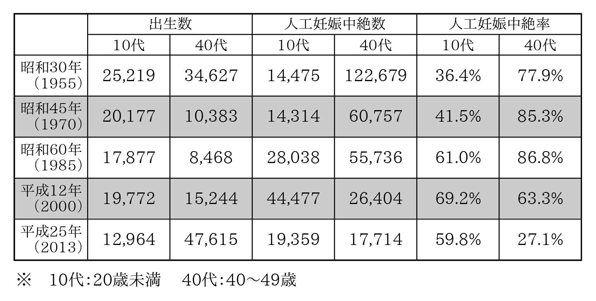

| 2011 | |
| 藤永 ゆかり | |
| webjapanese (2015) | |
２０１１
藤永ゆかり
カバーデザイン 大内裕子
この作品は縦書きでレイアウトされています。
また、ご覧になる機種により、表示の差異が認められることがあります。
一部の漢字が簡略字で表示されていることがあります。
目 次
一 月
二 月
三 月
四 月
五 月
六 月
七 月
八 月
九 月
奔放な女、ラプンツェル ～ 性欲過剰症と純潔主義のはざまで ～
十 月
十一月
十二月
誰でも知りたがっているくせにちょっと聞きにくい援交の相場や自殺者のその後について教えましょう
はじめに ─悲劇のように鮮やかに─
あれから四年あまりの歳月がながれ、ふと思い出すことがある。二〇一一年には春がなかったのではないかと。冬という艱難辛苦を乗り越え、ようやく入り口にたどり着こうとしていたとき、陽気で華やぎに満ちた春は来た道を引き返さざるをえなかった。〝場違い〟というのがその理由だった。
四月に入ると、冬を支配した弱々しい薄黄色の光と凛とした枯木立はすっかり鳴りをひそめ、東京は新緑と薄紅色の季節を迎える。上京したての大学生は新生活に小さな不安と大きな期待を抱いて頬を薄紅色に染め、混み合う電車内で自分の立ち位置を見つけようと右往左往する。車窓から望む見慣れない街並みや知り合ったばかりの友達の顔色をうかがい、まだ気心が知れない遠慮からお国訛りを抑えて小さな声で探るようにぽつぽつと言葉をかわす。桜が満開になった公園や川べりは花見客で溢れかえり、そこかしこで春の宴が繰り広げられる。川面には大きく枝を伸ばした桜の花が映り込み、やがてそれは花 筏 となって川面を薄紅色に染める。ある人は満開の桜に待ちわびた客の来訪と新生活の喜びを見出し、またある人は新生活の憂鬱とひとりでに過ぎゆく時間の無情さを思う。日本の春と桜は一対で、いつも決まっておしどり夫婦のように季節の扉を叩くのだ。
しかし、二〇一一年は少し事情が違った。震災後の自粛ムードのあおりを受け、華やかな春は大手を振って訪ねることが許されず、桜はときおり庭先に目をやりながら座敷で待ちぼうけるはめになった。花見客で賑わう桜の名所には宴会の自粛を要請する看板が立ち、企業や教育機関でも入社式や入学式の見合わせが相次いだ。こういうときこそ笑いが必要だと思ったが、私自身、すっかり自粛ムードに気 圧 されてしまって、エイプリルフールの冗談を言う気力すら湧いてこなかった。ツイッター上を流れゆく病み上がりのような、どこか本調子ではない日本語ユーザーのつぶやきを眺めつつ、いつ明けるとも知れない喪に思いを馳せた。
震災以降、それまで積み上げてきたものが強制的に突き崩されてしまったような徒労感と、方角もわからないジャングルのなかを手探りで進むような絶望を、現実的な問題に対処することでやり過ごそうとしていた。不意を突いて襲ってくる余震も、自分の存在を忘れさせまいとするエゴイスティックな恋人のようで、そのたびに人々を灰色の不安でいっぱいにした。福島第一原発はメルトダウンを起こし、未曾有の事態に日本人はおろか世界中の人々を恐怖で震え上がらせた。何が真実かもわからず、錯綜する情報のなかからより悲観的な情報を選び取って信じる人と、膨大な情報に当たって真実を見極めようとする人、また極端に楽観する人々のあいだで日々軋 轢 が生じ、なかには家族間や友達間で意見が対立して不和に至るケースまで出てきていた。大勢のジャーナリストや著名人が危険だ、いや安全だと意見を述べ、それぞれに賛同する支持者たちが相手陣営を罵り、解決までに途方もない時間を要するであろう事態に苛立ちを募らせていた。
ある街で地元商店主が主催した反原発デモには一万人以上が参加した。自分のイデオロギーを明確に表すことを好まない人が多い日本において、これほど大規模なデモが起きたのはきわめて異例だった。デモには、震災以前は原発問題に関心の薄かった有名人や、仕事に支障が出ることを懸念して政治活動と距離を置いていた芸能人も参加し、ふだんから若者が多く集う街はアグレッシブな祭りのような雰囲気に包まれた。そうしたなか、放射性物質による汚染を懸念し、福島第一原発から遠く離れた九州や沖縄、はては海外まで疎開する人々も出はじめた。原発事故直後に東日本から西日本に旅行した人は、ただそれだけで「抜け駆けだ」「弱腰だ」と非難された。なかには、自分を差し置いて安心安全な環境を手に入れた人々への嫉妬や嫌悪を、「被災地の方々はいまも大変な状況にあるのに」と倫理の問題に置き換えて非難する人もあった。震災によって芽生えた即席の愛国心の正体は、全体主義と自己愛に化粧を施したものだったのだろうか。安全だと思う人は安全に、危険だと思う人は危険に取り憑かれ、さほど関心を示さない人は意識が低いと冷笑され、それぞれが初めて経験する類の苦難に戸惑い、立ち向かい、ただ生きるために疲弊を余儀なくされていた。
一時は収まる見通しの立たなかった混乱もしだいに収まり、表面上は日常を取り戻した。いや、混乱と混沌が日常に同居するようになったと言ったほうが正しいかもしれない。反原発ないし脱原発派と容認派の対立は常態化し、反原発の急進派と穏健派のあいだでも軋 轢 を生んだ。言論人として一定の評価を得ていた人のなかには、真偽の不確かな情報をもとに見解を述べ、信用を失ってしまう人もあった。何かを考察する際にもっとも厄介なものは、自分の内側に潜むバイアスだ。特に知名度の高い言論人は、現在の地位に至るまでにさまざまな経験を積んでいて、それゆえに自分の理解力や観察力を過信しがちだ。そうした自負と自己顕示欲が走り出すと、簡単にはとめることができない。原発事故は健康不安をもたらし、多くの人の故郷まで奪ったが、それ以上に不要な対立を生み、人間の醜い部分をえぐり出してしまったという点において罪深かった。
震災は直接的な被害をもたらしただけでなく、さまざまな問題を引き起こし、日本人のメンタリティにまで影響を及ぼした。そうした影響の一端は理性の鈍化という形で表れ、もともと情を原動力とすることが多かった日本の性向をより強化した感があった。
理性の箍 がゆるんだ社会では、差別感情を開示することにためらいを覚えない人が顕在化した。誰しも心の奥底には多かれ少なかれ偏見や差別意識が潜んでいるものだが、たいていは自覚がないままに時間をかけて刷り込まれたステレオタイプや通念にしたがって考え、判断を下している。自覚があっても蒙昧と思われないように本心の表面をやわらかい布で覆って人目に触れないように気づかい、対象と一定の距離を置いてやり過ごしたりする。しかし、些細な発言から本心が垣間見えてしまうこともある。なかには、相手の発言に同調しているうちに自覚のなかった差別心がえぐり出され、〝善良ではない自分〟という不都合な事実に向き合わざるをえなくなる人もいるだろう。善良な人が善良ゆえに、悪気なく人を傷つけることは多い。自分の考える正義や信念を過信するためで、他者から過ちを指摘されても納得できずに戸惑うのだ。
一方で、震災以降に目立つようになったのは、現状への不安や不満、憎悪をつのらせ、屈折した〝正義〟を振りかざす人たちだった。確固たる信念をもち、自分の価値観や周辺環境を揺るがす可能性があるとみなしたものを排除しようとするケースもあるが、多くは憂さ晴らしや顕示欲に基づくとされる。情報への接し方にしても、精査して事実を見極めようとするのではなく、自分の見解を援護してくれる情報のみ受け入れ、それ以外を偽りであるとして拒絶する。震災前から兆候はあったが、そうした言論や行動が目立つようになったのは震災以降だった。震災時にボランティア活動やチャリティを通して表れた日本人の善良さの裏側では、かねてよりくすぶっていた問題の火種がいよいよ膨らみはじめていたのだった。
本書は、東京で暮らしている私の身の回りで起きた一年間の出来事の記録だ。日々の慰みに書いていたブログが土台となっており、二〇一一年の十二ヵ月間に書かれた記事のなかからめぼしいものを選び出し、少し手を加えたり新たに書き下ろしたりして一冊の本にまとめた。もしこの記録を特別なものにしている要素があるとしたら、やはり二〇一一年という年の特殊性にあるだろう。決して特異ではない、誰の身にも起こりうるような出来事が、二〇一一年というキーワードによって特別な意味づけがなされてしまった。そのキーワードがなければ、いまとは違う感慨をもって振り返ることができただろうか。
ともあれ、何かのめぐり合わせで本書を手に取ってくださった方には心からお礼を申し上げます。すでに近い昔になってしまった感のある二〇一一年を振り返りながら、最後までお付き合いいただけたら幸いです。
二〇一一年一月十四日
想いあふれて
わが家の近くに、道行く人の目を引く木造家屋がある。建ってから五十年は経っているであろうその建物はすでに役目を終え、二階の物干し台や手すりには蔦がからまり、ところどころ外壁が朽ちて剥がれ落ちている。対照的に、門柱の表札にはかつての家主の名前が鮮やかに刻まれ、いまにも電気がついて家族の団欒の声が聞こえてきそうだ。時のながれが穏やかだった時代の、古いしがらみから解放された新時代の家族の希望に満ちた笑い声が。
暗闇に溶け込むセピア色の民家を見ているうちに、ひたひたと心細さが忍び寄ってきた。茫 漠 とした郷愁、もう戻ることはない過ぎ去った時間に身をゆだねていると、幼いころの情景が八ミリビデオとなって、古びた和室の鴨 居 にかけられた小さなスクリーンに映し出された。暗闇にぼわっと浮かぶ自分の顔もどことなくあどけない。ちょっと手を伸ばしたら、向こう側に入っていけそうだ。入っていって子供の頃の自分にそっと耳打ちできたら。未来の自分の姿、これから起きる悲喜こもごものことを伝えられたら、現在の自分に何らかの変化があるかもしれない。途中にどんな危険が潜んでいるかわかっていれば、避けることだってできるかもしれない。でも、それは砂漠に一直線に伸びる道路をひた走るようなものだ。途中に何が待ち受けているか、あるいは何も待ち受けていないか、あらかじめわかっていて、なぜ走らなければならないのだろう。
「──ねえ、なに考えてるの？」と陽気にミカコが言った。
ちょっと前まで、あいつを鞭打ち刑に処せだの、秘密裏に刺し殺してくれだの、穏やかならぬ言葉を吐いていた人とは思えない表情だった。
「いや、べつにね。ちょっとさ」
「なにその〝ちょっと〟って。いつもちょっとばっかだよね」
「秘密があったほうが楽しいじゃない。ぜんぶ白日のもとにさらすよりは」
そううそぶく私に、ミカコは解せないというふうに首を振ってみせた。なんでも明快・明瞭であることを望む彼女には理解できない心理なのだろう。
ミカコから連絡が入ったのは、自宅最寄り駅の改札を抜けて歩き出したときだった。突然、ケータイが震えはじめた。ケータイは何か異変を察している。微弱なテレパシーを発し、危険の到来を告げていた。しかし、愚鈍な私はそのシグナルを無視して相手を確認してしまった。こういうとき、画面むき出しのタッチパネルというのは都合が悪い。送信者とメッセージが同時に表示されるため、見なかったことにするには罪悪感が大きすぎるのだ。
【急募】食事に付き合ってくれる人
最少にして最大催行人数：三名（内、二名は私とサル吉）
とき ...これから数時間以内
ところ...クダ巻くのにちょうどよさそうな小汚くて美味しい居酒屋。貴殿宅付近で可。
つまり、私に来いという。サル吉というのは、最近ミカコの扶養家族に加わったぬいぐるみでなかなか愛らしい御仁だ。しかし、小汚い居酒屋というのは困った。見た目から洗練されていて、いかにも躊躇しそうな彼女が平気で、躊躇なく入っていきそうな私が苦手というのも皮肉な話だが、苦手なものはしょうがない。衛生面の問題ではなく、騒々しい場所というのはどうも落ち着かないのだ。出不精なのでほんとうは家がいちばん落ち着くのだが、今回ばかりはそういうわけにもいかないようだ。代わりに魚料理の店を提示するとそこでいいという。
待ち合わせ場所に姿を現した彼女は、いまにも人の一人や二人を殺しそうな顔をしていた。いつも眼光するどい才媛だが、このときばかりはその迫力が別の方面に活かされかねない様子だった。ひととおり注文をすませ、店員が下がったところを見計らって、ミカコが腹の底からしぼり出すような声で凶悪にささやいた。
「報酬は弾む。やつを始末してくれ」
「申し訳ないが、そいつは断る。オレは殺しはやらねえ」私は心ならずも辞退した。
そもそも、ミカコが冗談とも本気ともつかない口調で殺しを依頼してきたのも、最近彼女が無限ループに陥っている〝ミスター強気〟サキオカ氏問題が原因だ。ちなみに、サキオカ氏とはミカコに想いを寄せている人物。彼は彼女に恋焦がれるあまり、自分の周りで起きたその日の出来事を一二〇字程度に要約してメールで送りつけるという新種のアプローチを繰り返していた。その内容があまりに簡潔で、まるで日報のようなのだ。これを私は秘密裏に〝日刊サキオカタイムズ〟と命名した。
日刊サキオカタイムズの誕生からしばらくたったある日、いよいよ日刊紙の発行だけでは飽き足らなくなった彼は粘りに粘ったあげく、ようやくミカコとのデートにこぎつけたのだ。それも日中、某有名フルーツパーラーでお茶をするだけという古き良き時代を彷彿とさせるデートだった。軌道が張り巡らされた車道には都電が行きかい、街角では三ピースのスーツを着た紳士と着物姿のご婦人が会釈をかわす。街がまだかろうじて大人のものだった頃──そんな情景が浮かんでくる。
「どうしてまたデートなんてしたの？」と私は眉をひそめた。
「いや、ほんとは打ち合わせのあと、食事に行きましょうって言われたの。でもさ、さすがに夜に二人きりで食事に行くのはまずいと思って、じゃあ、代わりにお茶でも、という話になって......」ミカコの声は徐々に小さくなっていき、しまいにはこちらの顔色をうかがいながら消え入るような声で付け足した。「それに、ほら、ご馳走してくれるっていうでしょ？ ある人に話したら、一回ぐらいデートしたら大人しくなるんじゃない、なんて言うしさ、それもそうかなと思って」
「でも、ミカコ、前にも同じようなアドバイスを受けて、同じようなことをして、同じように話をこじらせたよね？」
「うん......」と言ったきりミカコは押し黙った。
やがて顔を上げた彼女は、不敵な笑みをうかべていた。家主に見つかったときの居直り強盗というのは、ああいう顔をするものなんだろう。
「だって、あそこの季節のパフェ、食べたかったんだもん。知ってるでしょ？ 自腹を切るにはちょっとためらうような値段だって」
「〝武士は食わねど高楊枝〟っていうでしょ？ そんなものめずらしくもないわ、ぐらいの顔をして見せないでどうするの？」と私。 * 教誨師の気分だった。
ミカコによると、じつはこの三日前にも別の男と一緒にその店に足を運んでいたという。その際、同席したのはヒロちゃんというゲイ男性で、合コン惨敗の愚痴を聞くかわりにご馳走してもらうことになっていた。しかし、ヒロちゃんは一見すると小汚いオッサンで、使う言葉もいわゆるオネエ言葉ではない。ゲイ男性に散見される爛々とした目の輝きもなく、見た目だけではそれとわからない。ミカコの顔を覚えていた店員の女の子は、チラチラと様子をうかがっては変な顔をしている。二股をかけていると思われたのだ。それを察したミカコは貞操観念のない女だと思われているのではないかとドギマギし、だんだんと挙動不審になっていく。そんな彼女を見たサキオカ氏は自分を意識して緊張していると思ったらしく、ニコニコとうなずいてみせたという。まるでアラン・ドロンの『暗黒街のふたり』のようだ。ある人物の執拗な監視の目が、彼女の人生の歯車を狂わせていくのだ。食い意地で身を滅ぼすというのも物語性があって面白いかもしれない。
「サキオカさん、きっといまごろ、『彼女って意外にかわいいところがあるんだな』なんて反芻しながら抱いたときの感触を思い出してるよ」そう言って目配せすると、ミカコは声にならない声をあげて身震いした。
〝じっくり話すと、結構まともな人だった〟というサキオカ氏との密やかなティータイムを終え、改札口前までやって来たミカコ。それぞれ別の路線に乗るため、ここで刹 那 の別れとなる。ところが、運命の女神は素直に別れさせてくれなかった。ミカコが握手をしようと手を出したところで、サキオカ氏は彼女の手を握ると同時にすばやく抱き寄せた。「もう離さない」と耳もとでささやきながら頬ずりをするサキオカ氏。熱く抱擁をかわす彼らと、好奇の目を向けながら過ぎゆく大勢のギャラリー。ここは恋人たちの抱擁が似合うミラノ中央駅でも、パリのリヨン駅でもない。混沌とした東京にあっても、とりわけ雑多な人間が行き交う新宿東口だ。そんな場所では、せっかくの抱擁シーンも混沌の一場面に吸収されてしまう。やましいことはなくても、知り合いや恋人に見られたらあらぬ誤解を招くのは必至だった。ミカコは気が気でなかったと述懐するが、知り合いや恋人に見られる程度では月並みな話だ。どうせなら、革パンにライダースジャケットを着た老女たちがミカコとサキオカ氏を取り囲んでラブソングを朗々と歌い上げるような、ふたりの抱擁シーンをよりいっそう引き立てる演出がほしかった。そうした彩りが加われば、ありふれた抱擁シーンも少しはドラマチックになるはずだ。
不意に、ミカコのケータイが振動した。送信者名を見てはため息をつき、文面に目を通してはこぶしでテーブルの端をたたき、最後に残っていた焼酎のロックを一気に飲み干した。
「ねえ、お宅で飲みなおしていい？ なんか私、ゲームの駒を進めちゃったみたい」
* 教誨師（きょうかいし） ......刑務所などの矯正施設で収容者や受刑者の話し相手となる人のこと。宗教者であることがほとんど。
二〇一一年一月二十二日
魅惑の半魚人ライフ
『変身』において主人公のグレーゴルは、「ある朝、なにか気がかりな夢から目をさますと、自分が寝床の中で一匹の巨大な虫に変わっているのを発見した」という。これの派生形として、ある朝、なにか気がかりな夢から目をさましたら、自分が寝床の中で一匹の巨大な魚になっている可能性もあるのではないだろうか──。
そんな考えにとらわれたのは先週末のこと。朝起きると、小鼻から鼻の下にかけて異様に荒れていたのだ。ひょっとして、これは一種の脱皮なのではないか。肌荒れが治ったら造作の仕様も大幅に変更されているのではないか。やや、その前に顔面が溶けてなくなっているかもしれない。何のためらいもなく未知の領域へと踏み出していく自分の肌に無限大の可能性を感じると同時に、驚嘆と戦慄が全身を駆け抜けていった。
そもそも原因は何なのか。それがわからなくては対処のしようもない。最初は皮膚病を疑った。病気知らずで生きてきたぶんだけ、いやがうえにも期待は高まる。〝病弱な私〟。なんて可憐な響きだろう。おのずと竹久夢二の描く手 弱 女 たちが目に浮かんでくる。けれども、理想と現実は往々にして異なるものだ。ちょっとした出来心で、サイドの髪の毛をゆるく巻いてみたところ、鏡にはかのルイ十四世が映っていたという輝かしい実績もある。生来胃腸が弱く、腹の不具合が慢性化していたというルイ十四世ことルイ＝デュードネだが、私が病気をするとしてもルイと同じく胃腸炎か、さらにダイナミックな痔や腸捻転あたりだろう。可憐なイメージの肺病など夢のまた夢だ。
病院に行くべきだとはわかっているものの、病院はどうにも好きになれない。多少の風邪なら気合いで治してきたので、病院そのものに免疫がないのだ。かくして、まずは自分で対処してみることにした。手始めにしたのは魚をさばくときの基本、ウロコ落とし。ふだんどおりに洗顔をして鼻の下の鱗を除去。しかし、鱗とはいえど皮膚なので、きれいに剥ぎ落としたあとは顔が突っ張ることになる。すかさずスキンケアを施し、最後にオロナイン軟膏をまんべんなく塗布。皮膚のトラブルに何のためらいもなくオロナインという昔ながらの薬品を用いるあたり、大正生まれの祖母の影響を感じさせる。だが、こちらの意に反して、ことは思うように進まない。数時間もするとふたたび鱗が発生し、オロナインの油分で鱗がなでつけられている状態に様変わり。まるで脂性肌のブダイのようだ。
この一世一代のチャンスを逃がしてはならないと思い、すかさずツイッターでネタにした。顔面の鱗化などそうめったにないことなので利用しない手はないと思ったのだが、隙あらば人類から魚類へ突き進もうとする己の肌の勇猛さに戸惑いを覚えつつ、先を急ぐとろくなことがないぞと諭してみても、肌は一向に聞く耳を持たない。
これまで過度の皮脂にも乾燥にも悩まされずにきた私にとって、肌の鱗化という問題は一大事だった。そこでふたたび振り出しに戻る。いったい鱗の原因は何なのか。鱗はどこから来たのか、鱗は何者か、鱗はどこへ行くのか。そうこうするうちに、鱗は新種のウィルスがごとく勢力を拡大。からだの各所に鱗ないし鱗状のものが出現するようになった。すねについては冬にありがちだし、化繊のタイツなどの影響も考えられる。唇のひび割れもこの時季にはめずらしいことではない。しかし、鼻の穴のなかと、あの非常にデリケートな部分、俗に乳首や乳輪と呼ばれる部分については心当たりがない。鱗ができるようなことをした覚えも、された覚えも、させた覚えもないのだ。残念ながら。
干ばつに見舞われた大地のようにうっすらとひびが入っており、このままいけば全身がひび割れて跡形もなく崩れ去ってしまうのではないかと焦燥に駆られた。まるで『永遠に美しく......』のような顛末だ。ここまでくると、さすがの私も察せざるを得ない。顔面をはじめとするからだの鱗化は特異な皮膚病などではなく、極度の乾燥が原因ではないかと。極度の乾燥で皮がむけ、再生しようにも湿度が足りずにくりかえしポロポロと剥がれ落ちてしまう、ただそれだけのことではないかと。
そんな折、ニュース番組の最後のお天気コーナーで乾燥への注意を呼びかけていた。調べてみると、東京地方は十一月と十二月に一度ずつ降雨があっただけで、今年に入ってからは一度も降雨がなかったのだ。どうりで皮膚という皮膚が皮膚が鱗になるわけだ。いくら冬場に湿度が低くなる温暖湿潤気候とはいえ、ここまで降雨が少ないのでは乾燥するのも無理はない。エアコンを入れっぱなしで加湿器を設置していなかったのもよくなかったのだろう。あとは室内の加湿と肌の保湿につとめ、オロナインを塗りつづければいずれ治癒するに違いない。ただ、このまま鱗と別れるのも忍びない気もする。
『変身』においてグレーゴルは、ある朝、寝床の中で巨大な虫に変わっている自分を発見した。彼はこの不条理に戸惑い、驚き、気持ちとの折り合いもつかないまま毎日をやり過ごし、最後には味方だった妹のグレーテにも見放され、家族へのひたむきな愛情を胸に息絶えていった。グレーゴルのような悲劇性はないものの、ヒト科ヒトにして鱗を手に入れた私も変身のポテンシャルが高いのではないか。そろそろ人間社会にも飽きてきたことだし、今回の鱗化を機に、あわよくば人魚、百歩ゆずって半魚人としてセカンドライフを再構築してもいいかもしれない。
二〇一一年一月二十四日
オトコカタログ
不可抗力というのは日常のさまざまな場面に潜んでいる。電車の遅延、ハレの日の雨、生と死など、挙げればキリがない。
おそらく、昨夜私が経験したこともその一部だったのだろう。スカイプのメッセージをチェックしはじめたとき、突然、〝○○より着信中〟とポップアップが表示された。相手からして話の内容はだいたい見当がつく。〝ログイン状態を隠す〟にしていなかったことを大いに悔やみながらヘッドセットを接続、応答ボタンをクリックした。
「最初に言っておくよ。あたしは、いま、すごく酔ってる。す・ご・く、酔って・る。あははー」と通夜と結婚式がないまぜになったような声でミカコが言った。
「酔ってるって、なに飲んでるの？」
「ん？ これ？ えっとね、んーと、イスラエル産の白ワイン。ふふふ」最後の〝ふふふ〟はグラスのなかにこだました。
「でも、あなた、ずいぶん前にイスラエル産のワインはまずいから、二度と買わないとかって言ってなかった？」
「うん、言った。あの無作法なイスラエル人に言い寄られたときなんか、イスラエルに関わるものには金輪際かかわらないと誓ったよ」
かの国の人も気の毒に。たったひとりの在日イスラエル人のせいで、とんだとばっちりを受けたものだ。
「でもさ、人間なんて利己的な生き物だから、自分の都合のいいように信念も変えていくもんじゃん？ ウエストゴムのパンツなんか絶対にはかないと思ってたのに、いつの間にかうちにいるときはゴム以外のパンツはははかなくなってたり、昔は浮気なんてありえないと思ってたのに、いつの間にか自分がしてたりさ。そんなもんだって。イスラエル産のワインも、ものめずらしくて手を出してみただけ。昔よりか腕をあげたかと思って。それ以上でも以下でもないの。ういっ」
私は長期戦に備えて、冷蔵庫からお茶を出してきた。
「そう。でも、昔は同時進行もやぶさかじゃなかったのに、いま一対一のつきあいをするようになったんじゃない？ あなたの場合は」
「そうなの、そうなのよ！ いまは、きのう会った男と、きょう会った男が違うなんてこともない！」というと、ミカコは「えへへ」とチューブの破れた空気入れのような声をもらし、音をたててワインを飲み干した。
ことの発端は、ミカコが一年以上交際した恋人から別れを切り出されたことにはじまる。知的でエレガントな恋人のノグチ氏は、「ちょっと距離をおこうか」と婉曲な台詞をひねり出した。これを彼女は本当に一定期間距離をおくことだと思ったようだが、残念ながら、この台詞が飛び出したらたいていはそのままフェードアウトしてしまう。しかし、振ってばかりで相手からの別れ申請に慣れていないミカコは状況を読めず、大いに復縁の余地があると信じている。そもそもノグチ氏が別れを切り出したのも、ミカコのモテっぷりによるところが大きい。
なかには、大勢のなかから自分を選んでくれた、あるいは大勢が恋慕する彼／彼女を自分が独占しているという優越感を好み、恋人がモテることをよしとするケースもあるだろう。けれども、ノグチ氏は温厚な人で人と競うことを好まなかった。かたやミカコは、誰に対しても分け隔てなく接する性格に加え、仕事で相手と直接的なやり取りがある場合はむげに袖にすることもできずにいた。袖にしたことを根に持たれ、業務に支障が出た経験があるからだ。関心のないそぶりを見せつつ、自然に去っていってくれるのを待つしかなかった。
ところが、本人いわく〝最近、寄ってくるのは微妙な人ばかり〟で、想いというのは押しつづければやがて成就すると信じて疑わないツワモノぞろいだった。ノグチ氏はしだいに疲弊の色を強め、ついに別れという道を選んだ。
不幸という事象は連鎖するものなのかもしれない。ミカコが見舞われたのはノグチ氏の件だけではなかった。かねてより言い寄られていたゴトー氏の件だ。ゴトー氏はミカコが自分の思い描いていた理想の女性と違うとわかるや、彼女の人格を否定してかかってきた。一部には正当と思える批判もあったが、多くは一方的に抱いていた期待を裏切られたことによる腹いせで、言いがかりに近いものだった。それも、ひどく感情的な見解を論理のオブラートで包みこみ、主観に客観の化粧を施しているために、どうしても高圧的な言い方になってしまう。本人は感情や主観を下等なものと見なしているようだが、想いを寄せている人に感情や主観を見せないのでは、それ以上の関係の発展は望めない。恋も愛も主観的で曖昧なものだ。まして感情を無理やり理性で抑えこもうとして、かえって攻撃的な印象を与えるのでは元も子もない。
こうなると、当然〝直情的〟なミカコは黙っていられない。誰彼かまわず心情を吐露し、私に怒りをぶちまけ、毛と綿でできた扶養家族──ぬいぐるみ──に愚痴る日々を送っていた。美形でチャーミングな性格となれば、人に拒絶されることもない。人から拒絶されるということに慣れていないミカコには、今回の人格否定発言は大きな痛手だった。そこで急浮上したのがサキオカ氏だ（前掲『想いあふれて 』参照）。
ミカコがいうには突如として啓示がくだり、ゴトー氏と比べるとサキオカ氏が仙人のように思えてきたという。彼がミカコに送っているメールは〝日刊サキオカタイムズ〟として私のもとに流出しつづけ、幅広い内容をビジネスライクな文体で一二〇字前後に要約するという彼の驚異の編集能力も私の知るところとなった。あるときは鬱陶しいという理由で恋焦がれるミカコの友人である私に譲渡されかかり、「あいつとの情事は五分で終わる」と卑しくも陰口をたたかれ、お別れのハグをしては暗殺を企図され、さんざん足蹴にされてきたサキオカ氏にもようやく日の目を見るチャンスがめぐってきたのだ。
そのとき、私のケータイにメールが入った。差出人を見ると、年下の友人キミノ氏だ。プレビュー画面を見て、思わずドキッとしてしまった。新調したから見てほしいということらしく、スーツ姿の写真が添付されていた。
「うそ、カッコいい......」。このつぶやきをミカコが聞き逃すはずもなかった。
「カッコいいってなにが？」
「いや、友達から写真が送られてきたんだけど、ジャケットをはおった姿が思いのほかキマっちゃってるんだよね。不覚にもドキッとしちゃった」と写真をチラチラ見ながら言った。
「うそー、見たい！」
「ダメ」
「いいじゃん、見ーせーてー。転送してよぉ」
「ダメだってばあ」
（えへへ、女の子ってかわいいな。がっついててもかわいいな。）
「ひょっとして、あの無愛想なムーミンみたいな顔してるのに、〝水もしたたるいい男〟とかいうタイトルの写真を送りつけてきた男？」
その瞬間、いまわしい記憶がよみがえった。そう、あの男。ミスターＸだ。不美人に好意を伝えるつもりで、「オレ、美人って好きじゃないんだ」と暴言を吐いて顰 蹙 を買ったミスターＸ。権力を嫌うのに権威主義的なミスターＸ。極めつきは、〝水もしたたるいい男〟というタイトルの風呂上がりの写真だった。私はその写真を不運にもバスのなかで開いてしまい、声にならない声をあげて周囲の乗客にけげんな顔をされた。あれは百歩ゆずってもグロ写真の類だった。たとえ、首からバスタオルを下げたバストアップの写真だったとしても。
ミスターＸがいた日々はもう遠い昔、何年も前のことだ。それでも鮮烈な記憶というのは脳裏に焼きついて剥がれない。ひさびさに脳内に登場したミスターＸの残像に苦しむ私をよそに、ミカコはいぜんとして上機嫌だった。不可抗力──。そう、彼女との関係もまた不可抗力なのかもしれない。
二〇一一年一月二十七日
ココロの値段とカラダの価値
夜と朝の谷間の時間、コンクリートジャングルの片隅に杉板張りの民家がひっそりとたたずんでいた。道行く人は周囲の奇抜なビルに目を向け、民家には見向きもしない。そこを、ひとりの中年男性が身の回りの物を詰め込んだカートを引いて歩いてきた。彼が通るとひとりでに道が空き、左右に分かれた人影は彼に目もくれず歩いていく。人影のなかには携帯を操作する若い男の姿もあった。男が顔をあげたときには、すでに中年男性の姿が目の前にあった。瞬間、若い男の顔が不快にゆがむ。あっという間もなく肩がぶつかる。若い男は舌打ちをすると、軽く肩を払ってそのまま歩き去った。中年男性は若い男の無礼を気にするでもなく、人影が途切れるとふと立ちどまり、ぼんやりと民家を見上げた。彼はこの建物に何を思うのだろう。たたずむその後ろ姿に、不器用ゆえに背負い込んだ人生の悲哀を垣間見た気がした。
薄汚れた雑居ビルが立ちならぶ場末感ただようエリアを、少女がおぼつかない足取りで歩いていく。ときどき足がもつれるが、酔っているわけではなさそうだ。心細さと絶望感が足元からにじみ出し、彼女の足取りを重くさせているのだ。実親や義親からの虐待、家庭崩壊、家出、日銭を稼ぐための援助交際──。そんな想像をめぐらしながら、同じ方向へ進む彼女の後をついていく。まさかこんな時間にという祈りにも似た思いと、この街なら何でも起こりうるという諦 念 。やがて少女はおもむろにケータイを取り出した。誰かに電話をかけているようだ。少女は相手の指示に従って歩いていく。しばらくするとファストフード店の前で立ち止まった。なかをのぞき込み、小さくうなずくと、ふらふらと店内に入っていく。ケータイを耳に押し当てカモフラージュ。電話をかけているふりをしながら店内をのぞく。
少女は四十代ぐらいののスーツ姿の男性と向き合って座っている。母親との不和が原因の家出で、父親が秘密裏に面会しているのか。それとも、ＮＰＯ等の支援団体の職員なのか。おそらく、どちらでもない。男の少女を見る目つきには、何かを心待ちにしているような期待とじれったさが混じっていた。それを障害の大きな恋愛と考えるには、少女の目に情熱がなさすぎた。男の指に指輪の有無は確認できなかったが、もし既婚なら少女ぐらいの子供がいてもおかしくない年齢だ。徹夜明けなのか、それとも出勤前なのか。忙しい男ほど時間を作って女に会おうとする。ストイックなまでの時間管理が少女を買うためとなればシュールなブラックコメディだ。しかし、もっとシュールなのは、夜と朝の谷間には明るすぎるファストフード店の白い光が反射するチープなテーブルを挟んだ〝交渉〟に、居合わせた客の誰ひとりとして関心を払っていないことだった。テーブルに差し向かいで座っているのが、スーツを着た中年男と極端に丈の短いスカートをはいた少女であろうと。
少女たちが援助交際に走る背景は一様ではない。手っ取り早いアルバイトとして。何らかの事情から自暴自棄になって。飢餓感にも似た承認欲求を満たすために。なかには、性的虐待から逃れるために家出をし、日銭に困って援助交際に走るケースもある。彼女たちは自分のカラダの商品価値をよく理解している。四十代の女よりも三十代の女、三十代の女よりも二十代の女、そして二十代の女よりも十代の女が珍重されるということを。人は見た目じゃないとオトナたちは言う。でも、テレビや雑誌は常に若く美しくあるよう女に強迫観念を植えつける。父親も老けた母親を女として見ていない。若いというのはただそれだけで価値がある。それなら、若さを資本に稼いでもいいはずだ。
だが、少女たちが考える以上にオトナは狡猾だ。オトナの世界には魑魅魍魎が跋 扈 し、夜と朝の谷間に巣くう魔物たちは常に生き血を求めてさまよっている。利用してやろうと思っても、利用されてしまうこともある。どうにか渡り合おうと思っても、相手の腕をつかむ前に振り落とされてしまうこともある。ベッドのなかで甘くささやいても、欲求を満たしたらカネを渡してそそくさと帰っていく。ときには金品を奪い、ときには絞め殺してから帰っていく。カラダを二万円でレンタルしたら、ココロをズタズタに切り裂いても何とも思わない。そんなオトナを手玉に取るなら、もっとしたたかになる必要があるだろう。
オトナはやさしく微笑みながら牙を剥く。なかには牙を剥いたことを悔やむ人もいるが、たいていは剥いたことすら覚えていない。これに対抗するには攻撃方法を学ぶしかない。しかし、学んだからといって牙を剥いてしまっては同じ穴の狢だ。実際に役立つのは、攻撃方法を学んだときに自然と覚える防御方法だ。ひとつは、牙を示してあらかじめ危険を寄せつけない方法。もうひとつは、牙を持っていることを隠して相手を油断させる方法だ。その際、手札をすべてさらけ出していることに気づかず、得意げにゲームに挑むオトナの多さに驚くかもしれない。それに気づいたら、少女はもうオトナだ。
二〇一一年一月三十日
リアルときめきメモリアル
『ときめきメモリアル』というゲームがある。通称『ときメモ』は九四年にコナミから発売され、いまなお根強いファンを持つ恋愛シミュレーションゲームだ。
ファミリーコンピュータ版の『スーパーマリオブラザーズ３』を最後にゲームの世界から遠ざかっていた私にとって、『ときめきメモリアル』も当初は特に関心の向く話題ではなかった。わりとモテそうな男子が『ときメモ』にはまっている様子を見て、現実では埋められない何らかの欲求を満たしてくれるゲームであろうことは察せられた。ただ、聞きかじったところではヘテロセクシュアルの男子向けのゲームだったし、ゲームへの関心が薄かったこともあって、自分が関わることはこの先もないだろうと思っていた。
ところが、運命の歯車はいつも突然に動き出す。思いがけず知り合いが『ときメモ』に挑戦したと耳にした。しかも、彼女が挑戦したのはモニターの前に座ってやるものではなく、現実世界で敢行された刹那の戯れだったという。ここではそんな彼女、通称〝サオリ〟が挑戦したゲームの詳細を紹介することにしよう。これを私は『リアルときめきメモリアル』と呼ぶことにした。
──サオリは待ち合わせ場所が近づいてきても、そこに立っているのが誰なのか見当がつかなかった。それが友人のカズキだと気がついたのは、あと数メートルというところに差しかかったころだった。この日のカズキはいつもと服装が違った。いつもはスタイリッシュなモード系であるのに対し、この日の彼は無精ひげを生やしたいささかワイルドないでたち。そんな彼を見てときめかなかったと言ったら嘘になる、とサオリは言う。しかし、そのときめきはただのときめきでいてはくれなかった。頭のなかのるつぼ で溶解と融合を繰り返し、しだいにかたちを変えていった。最終工程を経てサオリの目の前に現れたのは、〝ときめきのゲーム化〟という答えだった。
席についたところで、サオリは自分の横の小さな紙袋に手を伸ばした。妙に青色が目につく商店街の外れのダイニングはちょうど夕食時。店内ではスタッフが右に左に動きまわり、オープンキッチンからは次から次に独創的な料理が誕生していた。スタッフのなかでも特に美形の青年が店内中央の通路をランウェイに見立ててしゃなりしゃなり歩いていく。そんな様子を見るともなしに見ていたサオリは、ふと我にかえってカズキの前に紙袋を差し出した。
「ほしい？」
「なにそれ？」
「気になる？」
「うん」カズキは椅子の背もたれに軽くからだを預けながら、ビールグラスを口に運んだ。
「じゃあ、ヒントあげる。ヒント一、ドーナツ。ヒント二、古いの」
それを聞いたカズキは、ぐすっと忍び笑いをもらした。「そのまんまだね。で、そのオールドファッションをいただけると？」
サオリはこくりとうなずくと、カズキに紙袋を渡した。「ちゃんと食べてないみたいだから、本当は野菜入りのものと思ったんだけどね。でも、無理にドーナツに入れることもないかなと思ってやめた」
「あれ、オレのからだのこと気にしてくれてんだ？」
「そりゃ気になるでしょ。親しい人が不摂生してたら」
そう言ってから、サオリはまるで彼の母親のようだと思った。幸いにも彼女は、恋人やそれ未満の男の世話をあれこれと焼いて、世間でよく聞くような「重い」「母親役は求めてない」などと言われたことはなかったが、いつも細心の注意を払っていた。これ以上やったら人間関係のバランスが崩れて、恋人や友達といった気安さが損なわれ、いきすぎた気づかいによって野暮ったさが生まれてしまうのではないかと。だから、何かにつけて冗談まじりにからだを気づかったり、手作りのものを渡すカズキに、そういうことが負担にならないか、かねがね尋ねてみたいと思っていたのだった。
「こうやってからだのことを心配したりするの、鬱陶しくない？」サオリはおずおずと尋ねた。
「いや、むしろ嬉しい。いまオレの幸せメーター、右に振り切れそうになってるもんね」
それを聞いたサオリはホッとしたが、まもなくある邪悪な考えが浮かんだ。
「じゃあ、一点もらっていい？」サオリは人さし指を立て、左右に振ってみせた。
「なにが？」
「ときめきメモリアルってゲーム知ってる？」
「ああ、もちろん。やったことはないけど、内容ぐらいは」
「じつはね、それをリアルでやってみたらどうかと思ったの。相手からときめきを奪ったほうが得点。一点ずつ加算されていって、別れ際に点数が上だったほうが勝ち」
「で、ほかにルールは？」
「好きとか愛してるといった直截的な表現は避けること。そして、ときめいたら正直に申告すること」
「なるほど」カズキが不敵な笑みをうかべた。「でも、何も賞品がないのはつまんないよな。なんか賭けない？」
「じゃあ、高野フルーツパーラーのお茶代。セットだったら一人あたり千五百円ぐらいだし」
「よし、勝負しよう」
不敵な笑みをうかべるカズキに、サオリは負けじと微笑み返した。特別場数を踏んでいなくても、サオリには友達や本から得た〝知識〟と、それを追体験することで培った〝経験〟がある。そういう意味ではスキャンダラスなスターに負けず劣らずの豊富な経験があるのだ。〝恋愛はただ性欲の詩的表現を受けたもの〟とは誰の言葉だっただろうか。サオリは抑えきれない性欲によって風変わりなゲームを考え出したわけではなかったようだが、ともあれ今回は詩的表現を用いるのがルールだ。言動、行動ともに詩的表現が求められる。そして、表面的な享楽だけを楽しむのだ。深入りして本気になった時点でレッドカード。即刻ピッチから退場しなければならない。ちょっと〝デンジャラス〟で〝 * ジェンダラス〟なゲームだ。
その夜、『リアルときめきメモリアル』は粛々と進行していった。ゲームの内訳は以下のとおり。
・前出のドーナツの件でサオリに一点
・カズキの料理のオーダーの仕方と店員とのやり取りがスマートでサオリがときめいてしまったため、彼に一点
・サオリが料理を取り分けてカズキに一点
・所作がツボだったとしてサオリに一点
・甘めの台詞でカズキに一点
・同様の台詞でサオリに一点
・カズキのグラスの空きに気づいてサオリに一点
・サオリにコートを着せてカズキに一点
・タクシーで送っていくと申し出たカズキに一点
・勝利を確実なものにしようとカズキが切り出した話にサオリが応戦、すると彼がまさかの自爆。つまり、サオリに一点
この時点で五─五の同点。
このまま決着がつかずに終わるかに思えた。ところが、地下鉄の入り口まで来たときだ。トロンとしたカズキの目に、急に正気の光が射したように見えた。そしてつぎの瞬間、サオリの視界がさえぎられ、気づいたときにはカズキの顔が彼女の目の前にあった。すんでのところでサオリは顔をそむけた。彼の鼓動が、ささやきが聞こえてくる。飲みすぎたせいか、一時の気の迷いか、はたまた反則技か。機械油と雨水が混じったような地下鉄構内のにおい、通行人の熱意に欠ける一瞥、ＩＣカードに無気力に反応する自動改札機......。サオリはカズキの腕に抱かれながら、まるで現実感に乏しい自分がおかれた状況を意識の隅でとらえていた。いくつものとりとめのないことが意識の海を漂うなか、突然の凪とともにサオリの前で立ち止まったのはカズキの名字のことだった。長い付き合いがあるのに、彼女は彼の名字をすぐには思い出せなかった。そのとき、サオリを抱きしめるカズキの腕の力が少し強くなった。そろそろ潮時かもしれない。サオリはカズキの背中を軽くたたき、耳もとで戯れにいくつか言葉を送り込んだ。彼がときめきを告白した。
サオリはこみ上げる勝利の感触を確かめながら、カズキの耳もとでそっとささやいた。
「これで私に一点。覚えておいて。最後に勝つのはいつだって私」
* ジェンダラス ......社会的・文化的性役割を指す〝ジェンダー〟と、危険を意味する〝デンジャラス〟を掛け合わせた筆者による造語。
二〇一一年二月二十二日
エロチシズムへの招待状
私はこの数ヵ月、ある人物を口説き落とそうと躍起になっていた。あるときは騒々しいスペイン料理店で、あるときはタクシーの車内で、またあるときはうたかたの眠りについた深夜の街角で、暇さえあれば甘い言葉をささやきつづけてきた。これまで生きてきて、こんなにも誰かを口説き落とそうと心を砕いたのははじめてだった。
私は、緻密な計算によって獲物を仕留める狩人タイプではなく、罠を仕掛けて目当ての獲物が引っかかるのを待つ漁師タイプだ。何かを得るために無心に努力するのは得意ではない。ところが、いざはじめてみると、狩りの奥深さに魅了されてしまった。こちらの攻めに対する獲物の心の動きがそれとなく伝わってくるのだ。罠を仕掛けるのとはまた違う心理戦に、スリルと享楽を覚えずにはいられなかった。
では、その心理戦とはどのようなものだったのか。もし誰かを犯罪計画に巻き込もうとしていたなら罪深い。別れさせ屋の依頼を受けて妻子ある男性を離婚工作の甘い罠にはめようとしていたなら、それもそれで残酷だ。はたまた、ダイエット中の友人の前に素知らぬ顔でチョコレートを差し出したなら、とんでもない大罪だ。しかし、あいにくどれでもなかった。少々真面目な男友達を去年十月に赤坂にオープンした『ＨＯＯＴＥＲＳ』に誘っていたのだ。
ＨＯＯＴＥＲＳは全米で四百六十店舗以上を展開するハンバーガーレストラン。日本第一号店として赤坂店がオープンした当時、だいぶメディアを賑わせたので記憶にとどめている方も多いかもしれない。同店のコンセプトは「バーガー、ビール、バスト」。美味しいハンバーガーやビールを露出度の高いユニフォームに身を包んだ若い女性が給仕してくれるという趣向で、日本には類のない健康的なセクシーさを売りにした店として有名だ。店内はオレンジ色を基調にし、スタッフの女性もオレンジ色のホットパンツに、白地にオレンジ色の文字で店名がプリントされた襟ぐりの深いタンクトップを着用している。このスタッフの装いについて、ある記事では「良い意味でけばけばしく洗練されていない雰囲気」と評されていた。要は、田舎のチアリーダーのイメージということだろう。セクシーでありながら郷愁を誘うような、好きだったチアリーダーの女の子を軒並みアメフト部のクォーターバックに持っていかれてしまった甘酸っぱい思い出を喚起するような、そんな雰囲気が漂っている。ＨＯＯＴＥＲＳには、客の夢を叶えると同時に心の古傷を癒してくれる、何かがあるのかもしれない。
もっとも、すべてはアメリカの学園ドラマの影響を受けた私の妄想なので、実際には甘い思い出しかないような客もいるだろう。当然、この手の店は男性に人気が高く、米国人男性のあいだでは不動の地位を築いているという。それが満を持して日本に上陸したわけだが、不肖わたくし、この店に異様なまでの興味を持ってしまった。性愛の対象は男性なので、セクシュアルな意味での興味ではないのだが、いったいどんな雰囲気の店なのか自分の目で確かめてみたいと思った。これは出不精な私にとっては画期的なことだ。とはいえ、さすがにひとりで行くのは気が引ける。行ってもいいが、一人でオーダーして、口を動かす合間に、ぎこちなく店内を見まわし、設備やスタッフを観察するのでは不審者きわまりない。オープンしたてのいまはまだ毛穴という毛穴から男性ホルモンを解き放つ男子が大勢を占めているはずで、そこに孤独な女が一人で長居するには勇気がいる。そこで白羽の矢を立てたのが友人Ａだった。彼は何かにつけて私のワガママを聞いてくれる心やさしい青年だ。しかし、そんな彼もＨＯＯＴＥＲＳ訪問については及び腰だった。いわく、「オレはそんなにイージーな男じゃない」と。どうも、同店のわかりやすいセクシーさに騙されるほど自分は単純ではないし、仮に心を動かされるとしてももっと高度なゲームを経てからだ、ということらしい。
彼は柔軟なようでいて、ある部分では少々頑固な人だ。頑固というと語弊があるが、それはつまり、自分の核となる部分に関しては安易に流されないということでもある。この際、台風通過中の多摩川に突き落とされたつもりで大いに流されていただきたかったのだが、やはり彼の意思は相当に固かった。となると、あとは持久戦に持ち込むしかない。全身から警戒心を放つ野良猫と打ち解けるまでのプロセスと一緒だ。まずは、遠くから鳴き真似をして微笑みかける。警戒心をゆるめたら、腰を落として目線の高さを同じにし、鳴き真似をして微笑みかける。そして徐々に距離を縮めていき、やがてこちらの姿を見ただけでしゃなりしゃなりと歩み寄ってきて、脚にまとわりつくようになる。ガタイのいい友人Ａが猫よろしく脚にまとわりついてくるところを想像すると、薄ら寒さと萌えのいりまじったものがこみ上げてくるが、それでも目的達成のためには多少の犠牲も覚悟しなくてはならない。もちろん、別の人を誘おうかとも考えたが、世のエロチシズムを一身に担っているような男子では同店での振る舞いに不安があるし、同様に積極的なレズビアン女性も不安だ。かといってゲイ男性はどうかというと、「身銭を切ってまで露出過多の女を見に行くつもりはない」とつれない。フェミニストの知り合いを連れて行けば、帰り際に絶交を言い渡される可能性がなくもない。残るは、程よく真面目な友人Ａだけだった。
赤坂店のオープン以来、私はことあるごとに口説いてきた。スペイン料理店で、カフェで、バーカウンターで、神社の境内で、タクシーの車内で、深夜の街角で、しつこくならないように手を替え品を替え口説きつづけた。最初は頑なに拒んでいた彼も徐々に態度を軟化してきた。そして先日、いよいよ行ってもいいという言葉を引き出すに至った。苦節数ヵ月、思えば長い道のりだった。これまで半年や一年もかけて意中の人を口説きつづける人を尊敬半分、呆れ半分で見てきたが、そう、対象に深い思い入れがあれば半年という歳月も決して長くは感じないのだ。あとは日程を決めるだけだ。
ＯＫを出したあと、友人Ａはまるで男の熱心な口説きに落ちた女のように、おずおずとはにかんだ。私は眼前で繰り広げられるデッカい男がモジモジするというシチュエーションに、新種の動物に出会ったような驚きと感動を覚えた。となると、照れ隠しに軽口のひとつやふたつ叩くのは無理もないことだ。
「結局、あなたも好きなんじゃない」
その瞬間、友人Ａの顔から笑顔が消えた。私は悟った。またしても振り出しに戻ってしまったのだと。純情なアラサー男子はいつになったら心を開いてくれるのだろう。近所の野良猫ですら、一ヵ月で心を開いてくれたというのに。
二〇一一年二月二十六日
タイガーマスクを脱がないで
昨年末、全国各地にマンガの主人公を名乗る人物が現れた。『タイガーマスク』の主人公、伊達直人だ。養護施設で生まれ育った伊達直人は格闘技の世界に身を投じ、やがて大金を稼ぐようになる。彼は自らの生い立ちもあり、その大金の一部を孤児支援に投じるのだ。これに着想を得た児童支援、厳密に言えば、匿名によるランドセルの寄付が昨年末以降、全国各地の児童養護施設に相次いだ。当初はランドセルに限られていたが、しだいに現金や文房具、施設便りを作成するためのプリンター、果ては米や野菜といった自家製の農作物にまで及び、必要なものを直接施設に問い合わせる例も増えてきた。施設関係者によると、ランドセル購入費はあらかじめ施設の予算に組まれており、買いに行くのを楽しみにしている子供も少なくないといい、こうした支援の変化は望ましいかもしれない。だが、チャリティというものへの取り組みを考えると、日本はまだまだ発展途上にある。伊達直人騒動が一過性のブームに終わらず、これをはじめの一歩として寄付やチャリティが定着するよう、また莫大な資金を投じて大掛かりなチャリティ番組を放映せずとも、ごく当たり前のこととして定着するよう願わずにいられない。
伊達直人騒動の際、その支援の輪が子供だけでなく大人にも向けられないものかと考えた人は少なくなかった。すなわち、野宿者ないしホームレスへの支援だ。すでに行政や宗教団体、ＮＰＯ団体などが手を差し伸べているが、そうした団体だけでなく、一般個人の積極的なコミットも必要なように思われた。さまざまなコミットの仕方があるが、特定の支援団体に金品を寄付したり、炊き出しに参加したりするのが代表的なところだろうか。私の知り合いなどは、複数の協力者とともに自宅のキッチンで弁当を作り、野宿者が集まる公園で定期的に配っているという。そのような話を見聞きしているうちに、自分にも何かできないだろうかと思いはじめた。特定団体への金品の寄付でもなく、炊き出しの実働部隊でもない。おそらくそうしたコミットの仕方がもっとも現実的なのだろうが、せっかくなら正攻法ではない、それこそ伊達直人の末席を汚すのもひとつの手かもしれない。支援団体に匿名で寄付するか。それとも野宿者に直接差し入れるか。私が選んだのは後者だった。
二月半ばに大勢の野宿者が寝泊りしている新宿中央公園前で見かけた青年がずっと気になっていた。大雪が降った翌日で、厚着をしていても足元から容赦なく冷気が入り込んでくる朝に、二十代にしか見えない彼は白いパーカーにベージュのチノパンという軽装で寒さに凍えていた。私は衝動的に歩道橋を渡り、近くのコンビニに駆け込んだ。そこで差し入れを調達しようと思ったのだが、あいにくＩＣカードしか持ち合わせていなかった。残額は二千円程度だったので、買い物できないこともないが、あいにくそのコンビニはＩＣカード未対応。しばし考えを巡らしたが、ほかに手立てはなく、後ろ髪を引かれる思いで駅方面に向かった。
あれから二週間。二月も末に近づき、暖かい日も増えてきた。春の到来に少し安堵したが、それでも新宿中央公園の彼のことはずっと頭の片隅に引っかかっていた。そんなある日、前日の暖かさとは打って変わり、思わず身のすくむような寒風が吹きすさんでいた。そんな日ぐらい散歩を控えてもいいのだが、習慣からの逸脱というのはどうも気分がよくない。早朝の寒風という強敵を避けることはできても、その日一日をすっきりしない気分で過ごすことになる。結局、厚手のコートをはおって明け方の街に足を踏み出した。
ある交差点まで来たとき、思いがけない光景を目にした。野宿者の男性がバス停のベンチに前かがみになって座っていたのだ。目の前のカートには彼の所持品一切が積まれてある。顔は見えなかったが、背格好からして六十歳前後に思われた。身体の具合が悪いというわけでもなく、前かがみになることで正面から直撃する風を避け、寒さを凌いでいるように見えた。
最初は彼の前を通り過ぎた。何歩か歩いたところで、二週間ほど前に新宿中央公園で見かけたあの青年を思い出した。すかさず目と鼻の先のコンビニに入った。財布は持ち合わせていなかったが、パスケースにはＩＣカードとキャッシュカードが入っている。帰りに朝食用の果物を買う予定だった。ＡＴＭで現金を引き出したあと、かごに必要なものを入れていった。おにぎり二つ、サンドイッチ一つ、温かいお茶一つ、野菜ジュース一本、カロリーメイトのブロックタイプ、使い捨てカイロを二種類二つずつ。中華まんも購入しようと思ったが、スチーマーに入れたばかりらしく〝準備中〟の紙が貼り出されていた。コンビニの袋を携え、来た道を数十メートル引き返した。野宿者の男性はいぜんとして前かがみの状態で座っている。思い切って声をかけた。「すみません」。男性は少し驚いた様子で顔をあげた。「失礼かと思ったんですけど、よろしければこちら召し上がってください」。そう言って私が袋を差し出すと、彼は黒目がちな目を見開いて「いいんですか」と言った。「こう寒いと、元気もなくなってしまいますでしょう？ 温かいお茶や食べ物、使い捨てカイロなど、いろいろ入っていますので、よろしければ」
それ以上の会話は不要だった。私は自分の気持ちをなだめるためだけに、独りよがりの産物を彼に受け取ってもらった。社会事業や慈善など、一見利他的な行動も、煎じ詰めれば、それをやっている自分が好きだから、万人が笑顔で暮らせる環境（社会）が自分にとって心地よいから、という私情に行き着く。私も例にもれず、自分が心地よくありたいからやっただけだ。男性が自由を渇望して路上生活を送っているのか、何かしらの不運が続いて現状に陥ったのかはわからない。ただ、仮に後者だとして、少しでも人と事務的ではない接触を持ったことで自分の人生を前向きに捉えることができたら、重い足を半歩でも前に踏み出せるのではないか。そんなおこがましい思いもなくはなかった。しかし、どのみち私の独りよがりで、だからこそ、最後まで心地よくありたかった。そこにそれ以上留まっていたら、男性とのあいだに施す者と施される者という構図が出来上がってしまう心配があった。一刻も早く立ち去らなければならない。男性に不要な屈辱を与えたり、屈辱を感じさせたことで自己嫌悪に陥ったりするのだけは絶対に避けたい。驚きに満ちたまなざしで袋のなかを見つめる彼に会釈して、ふたたび歩き出す。群青色に染まる東の空にかすかな光が射してきた。もうすぐ夜が明ける。前日の靴ずれの余韻もいつの間にか消え去り、足取りも軽くなっていた。
二〇一一年三月十三日
それぞれの３・11
見慣れた部屋が左右に大きく揺れていた。テーブルの下にもぐった私はテレビや天井に視線を走らせ、宙に向かってつぶやいた。
「頼むぜ、ほんと......」
キャーでも、助けてでもなく、なぜ中年男性のようなボヤキだったのかは自分でもわからない。揺れは収まるどころか、激しくなる一方だった。
二〇一一年三月十一日午後二時四〇分。テレビでは国会中継が流れていた。私はパソコンに向かいつつ、見るともなしにときおりテレビに目を向けていた。もちろん、内容はほとんど頭に入ってこない。音声と映像によって物寂しさをまぎらわせているにすぎなかった。退屈で、気だるくて、穏やかな午後のひとときが淡々と過ぎていく。そんないつもと変わらない時間が突然切り裂かれることになるとは、いったい誰に想像できただろう。
午後二時四六分、気だるい国会中継に緊張が走った。緊急地震速報が発令され、画面の下側に地図入りのテロップが表示されたのだ。東北地方全体が黄色く塗りつぶされ、強い地震への警戒を呼びかけていた。またいつものように大袈裟に言ってるんでしょ、そもそも東北が震源なら東京はそんなに揺れないはず──。そう高をくくって、作業をつづけた。しかし、まもなく自分の見込み違いに気づくことになる。
部屋がかすかに揺れた気がした。おそらく、多くの日本人は揺れを感じると、まるで死角に潜む伏兵を探すかのように、宙に視線を走らせて身構える癖がある。その揺れが避難や防御が必要なものか見極めるためだ。このときの私も例にもれず、宙に視線を走らせて身構えた。予想に反して揺れは大きくなっていき、決して広くない自室が左右に大きく揺れはじめた。ようやく生命の危機を感じ、テーブルの下にもぐった。まもなく縦に積まれた本やＣＤが棚の上で雪崩を起こし、まるで波紋のように床に散らばった。クローゼットの上の棚に置いてあった物は半開きの扉の隙間からこぼれ落ち、キッチンのレンジの上にあった調味料入れも左右に揺さぶられ、必死の抵抗もむなしくすべて床に転げ落ちた。そのとき、キャビネットの上からジョジョ──くまのぬいぐるみ──が落ちてきた。ジョジョとは五年越しの仲で、病めるときも健やかなるときも共に過ごしてきた無二のパートナーだ。すかさず彼を抱き寄せた。
激しく揺れるなか、ＮＨＫのアナウンサーは滑稽なまでに冷静に安全確保を呼びかけている。その彼の声が東京のスタジオの揺れが大きくなるにつれて乱れはじめた。今回ばかりはもうダメか。万が一の事態を覚悟した。こんな日にかぎって、十一歳のときに買っていまだ捨てられずにいるロジャーラビットのトレーナーを着てしまったのが悔やまれた。着古したトレーナーというのはモチベーションが下がるから金輪際着ないと、先日、心に誓ったばかりだった。しかし、その着心地のよさは天使の糸をまとうよう。どうせ夜からの外出にはまだ早いと思い、引き出しの手前に居座っていたそれを手に取ってしまった。盛装とまではいかなくても、せめてまともなデニムにカットソーぐらいの格好で死にたかった。
テーブルの端から上に手を伸ばし、使用中だったノートパソコンを閉じた。緊急地震速報では福島あたりの人たちに警戒を呼びかけていたのに、なぜ東京までこんなに揺れるのだろう。わが家では、あのコンテナに設置されたチャチなセットで繰り広げられる〝地震体験教室〟が再現されていた。天井崩落まで秒読み段階かもしれない。人生とは、こんな風にある日突然、何の前触れもなく終わるものなのか。振り返る余裕も何もあったものじゃない。そう覚悟した矢先、徐々に揺れが収まってきた。やがて揺れが完全に収まった。呆然と室内を見まわすと、物が散乱しているのがわかった。本来あるべき場所から物が落ち、床に散らばっている。地震で生命の危機を感じたのははじめてだったかもしれない。
時を追うごとに、次々と情報が入ってくる。東京二十三区は震度五強。震源は三陸沖で、北海道から関東地方まで大きな揺れを観測したようだ。そのとき、震度図に目を奪われた。実家のある宮城県一帯が不吉な点描画のように派手な色の小丸で塗りつぶされていた。もともとあのあたりは地震の多い地域。数年前にも宮城県沖地震が発生したばかりだし、今回もどうにか持ちこたえただろう。そんな能天気な予想は大きく外れ、深刻な被災情報ばかりが入ってくる。
自分の力ではどうにもできないのに、凄惨な映像が流れるたびに、ああ、ああ、と祈りにも似た声が漏れる。津波が川を遡上し、ヘドロを含んだ濁流が流域の田畑や民家を無残にのみこんでいく。あの近くには知人が住んでいたはずだ。無事なのだろうか。
そんな映像を見ていたとき、ふとある事実に思い至った。そういえば、父はどこにいるのだろう。姉の出張にともない、彼はこの一週間ほど東京にいた。一、二日ならともかく、中学生の甥を一週間も一人で置いておくわけにいかないからだった。そしてきょう、父は姉の帰宅に合わせて向こうに戻った。午前中の新幹線だと言っていた。となれば、地震発生時には自宅にいたはず。海からも離れた地域で、耐震構造の戸建て住宅に何の不安があるというのだろう。そう思って自分の不安を払拭しようとしたが、まったく楽観できない報道が次から次に飛び込んでくる。連絡しよう。しかし、何度かけても発信規制がかかっていてつながらない。そのうちに救急車等の緊急電話に影響が出るので、安否確認の電話は控えたほうがいいという情報が流れた。きっと父は大丈夫。ときどき災害伝言ダイヤルを確認すればいい。テレビと、ツイッターをはじめとするネットメディアの合わせ技で情報収集に勤しんだ。他に片づけなくてはいけない仕事があったが、大地震の直後とあっては身が入らない。
海外出張中の姉は夕方の便で成田に到着する予定だった。ところが、成田や羽田は地震の影響で封鎖されてしまった。ツイッター上で、成田に着陸できなかった国際線が東京西部の横田基地に降りはじめたことを知る。彼女は常に壮大にして壮絶な人だ。ことあるごとに荒波を引き起こし、周囲の注目が一身に集まったところで、怒涛を乗り越えて予想外のハッピーエンドというオチをつける。常に遠慮なく思いの丈をぶちまけ、人を不安の渦に突き落としておいて、自分はやすやすと向こう岸に泳ぎ着く。もちろん、本人に自覚はない。そして、その特異なキャラクターによって反感を買うこともない。
今回も何かやってくれるとは思ったが、まさか大地震直後に横田基地に着陸というドラマを演じてくれるとは思わなかった。震災も彼女にとっては人生を演出する小道具のひとつにすぎないのかもしれないと思ったが、さすがに地殻変動を起こす力は持っていないだろうと思い直した。のちのち本人が語ったところによると、着陸態勢に入ったところで客室乗務員のもとに機長から連絡が入ったという。明らかに落ち着きをなくした客室乗務員は、地震の影響で成田着陸が難しくなり、燃料が持つかぎり空中を旋回して待機すると乗客に告げた。しかし、待てど暮らせど着陸許可は下りない。やがて成田が封鎖された。機体は横田基地に向かうことになった。言わずもがな、横田は米軍基地だ。一般の乗客が入国の手続きをできるはずもなく、数時間待機したところで関西空港に向かうことになった。機内で暇を持てあました姉は足をプラプラさせながらお菓子を食べ、お菓子を食べ終えると機内で隣り合わせた日系ハワイ人の青年と会話をかわし、さらにそれにも飽きるとそばを通りかかった客室乗務員に話しかけた。「お外に出てお散歩してきていいですか？」
絶句したのは客室乗務員だけではなかった。それ以降、日系ハワイ人の青年の態度もよそよそしくなったという。行政の視察ではない一般人が、それも散歩目的で基地内を歩くことをどうしたら許可されるというのだろう。
関空に降り立った彼女はすかさずロビーで荷を解き、電池式の携帯電話チャージャーを取り出した。それで私に連絡をよこしたのだ。その電話で、まだ地震関連の情報を収集できていないと言ったあと、シャワーを浴びたい、おなかが減って背中とくっつきそうだと訴えた。後者については、『どうしておなかが減るのかな♪』のメロディに乗せて空腹状況を説明してくれた。もちろん、いぜんとして連絡が取れない父や次姉についても不安はあったが、正面から不安を語り合うことはなかった。まあ、彼のことだから万事抜かりなくやってるでしょう、われわれのようにギャンブル性の高い人間と違って彼は何につけても堅実だから、とふだんどおり軽口を叩いた。妙に深刻ぶっても何も解決しない。ふだんと変わらない軽口は一種の安定剤だった。姉から連絡を受けたあと、震災後の街の様子を目に焼きつけようと家を出た。
幹線道路に差しかかると、夜中にもかかわらず、西方向に進む大勢の帰宅難民の姿が目に入ってきた。誰もむやみに深刻がってはいない。むしろ、この非日常的な状況を前に心が浮き立っていた。都市型戦闘服──オフィスウェア──を着用し、ちょっとしたサバイバルゲームに参加しているような面持ちだ。マラソン大会の給水所よろしく、果物や黒砂糖を配布している人もいる。空腹に耐えかねたのか、沿道の店で一杯ひっかけたり、食事を摂ったりしている人も少なくない。コンビニの前でパンをかじる人もいれば、ファストフード店で調達したコーヒーで暖を取る人もいる。掲示板に張り出された交通情報を確認する人もいる。警察署の前には警官が立ち、道行く人を見守っている。その警官に地図片手に歩み寄り、帰宅ルートを確認する人の姿もある。友達とその彼氏と三人で帰宅する女性の姿もある。下り車線は車で長蛇の列をなし、ひどい渋滞を起こしていたが、誰ひとりとしてクラクションを鳴らしていない。そこに暴動や略奪の気配はいっさいなかった。そして、テレビで見た地震発生直後の都心の様子や、遠く離れた被災地の光景が脳裏をよぎる。これまでこの国に強い好意も嫌悪も抱いたことはなかったが、非常時でも社会的な立場に関わらず、モラルある行動をとる大勢の人々を見て、いつになく日本という国に強い好感を覚えた。
翌朝、吉報がもたらされた。夜中、姉のもとに父からメールが入り、全員無事であることが確認されたという。一行のメールを一通だけというあたり、よほど混乱した状況なのだろう。一夜明けても、関西空港は混雑していた。羽田行きの航空券を取れるかどうかもわからない。その分の乗客が新幹線へ流れ、異常なまでに混雑していた。そこで、姉は鉄道オタクの知人オオクボ氏と連絡を取った。姉はオオクボ氏の好意に全面的に甘えることになり、氏が所有する鉄道会社の株主優待券で名古屋まで移動し、モーニングやパフェをご馳走になり、ついでに豪勢なランチまでご馳走になり、あげくに氏のカードのポイントで新幹線のグリーン車に乗って帰京した。いわく、「本当に、よそ様の厚意に一切の遠慮なく甘えて生きている自分を素晴らしいと思いました」と。その甘えの尻拭いは私がすることになり、電話の向こうのオオクボ氏に対して「いつもうちの愚 姉 がご迷惑をおかけして、本当に申し訳ございません」と何度も頭を下げずにはいられなかった。
身内の無事は確認できたが、宮城の知り合いとは一向に連絡が取れないままだった。そうしたなか、やっと連絡が取れたのは、なぜか強烈な個性を放つカネモト氏だった。いまでも都内に住んでいるとばかり思っていたが、話を進めていくうちに噛み合わない部分があることに気づいた。若き起業家の氏によると、いまは会社の拠点を仙台に移して同地在住だという。「んもう、震災まっただなかにいるわよ、アンタ！」とカネモト氏。震災直後であっても、ハイテンションなオネエ言葉は健在だ。発信規制がかかり誰とも連絡が取れないなか、氏に一発でつながったのは何の因果なのか。被災状況を尋ねるつもりで連絡をした私をよそに、カネモト氏は独特の節回しで長 広 舌 を振るいはじめた。身近な人の安否確認や被災状況の説明が十パーセントだとしたら、最近の恋愛事情を含む近況報告は八九パーセント。残りの一パーセントは「やーん、どうしよう。ケータイの充電が切れちゃうわ！」という嘆きとも悲鳴ともとれない声だった。「大丈夫、また連絡するから」とこちらが告げたところで通話が遮断された。被災状況は把握できなかったが、氏が部下に想いを寄せ、昇進と引き換えに交際を迫ろうか煩悶しているというセクハラ問題についてだけは十分すぎるくらい把握できた。実家が火災で全焼したときもカネモト氏の写真は一枚も焼失せず、すべて完璧な状態で発見された。その隣のアルバムは燃えたというのに、何が運命の境目だったのかはわからない。本人は可憐さや繊細さをアピールするが、実際はそうでもない。むしろ強烈なまでの生命力で人の生気を奪っている。一度顔を合わせたときも姉とカネモト氏は意気投合していた。人生が何かの犠牲の上に成り立っているとすれば、彼らの下には他人の多大なる徒労と疲弊があるのかもしれない。
二〇一一年三月十七日
トイレットペーパー狂騒曲
震災から六日が過ぎようとしても、街中はいぜんとして震災ハイとでも言うべき異様な熱気に満ちていた。自粛と節電の抑制的なムードのなかに、いまだ日常に戻りきれない、もう完全には過去の自分に戻れない諦念と吹っ切れ感が混じっているように思われた。世界に終末が迫っても、人間は案外明るくその瞬間を迎えられるのではないか──。ともすれば身を持ち崩してしまいそうな退廃的な気だるさのなかを縫うようにして、私は徒歩で帰路についていた。
だが、終末にはやはりパニックが付き物なのかもしれない。
夜中にもかかわらず、コンビニの前で自転車の前後のかごに戦利品を詰め込み、同行した仲間と得意げに笑みを交わす中年女性の姿があった。前のかごには五箱入りのティッシュペーパーが二つ、後ろのかごには十二ロール入りのトイレットペーパーが一つ。紙製品が品薄になるというデマに躍らされ、近隣のスーパーやコンビニを駆け巡っているのだろうか。〝これからモノが足りなくなる〟という強迫観念はしぶとく、一度その思いに取りつかれてしまったら、どんなに積み上げても充足しているという認識には至らないのだ。たとえ、押入れに入りきらず、和室の片隅にうずたかく積まれたトイレットペーパーを前にしても。
彼女たちの様子を見ているうちに、今回の大震災で海外から絶賛された日本人像というものを思い出した。「非常時でも取り乱さず、社会的な立場にかかわらずモラルある行動をとる人々」というあれだ。たしかに、震災発生直後のどさくさにまぎれて略奪行為が横行するようなこともなくきちんと整列して順番を待ち、公共交通機関が止まっても淡々と徒歩で家路につく人々の姿は、高い公共道徳に裏づけされたものだった。こうした事実に従来の勤勉イメージが加わって、「日本人はモラルが高い」という評価を得たのだろう。しかし、全員が全員、道徳観念からモラルある行動をとったのだろうか。自分で考えて判断を下すのが苦手という、これまた日本人のもうひとつの特性によって、震災後でも漫然と普段と同じ行動をとっただけという人も少なくなかったのではないだろうか。それが結果として混乱や騒乱の抑止力になったのであれば、秩序的には好ましい半面、少々皮肉な話にも思える。
モラルある行動の裏側には、正しい情報の伝播がある。正確性に欠ける情報を鵜呑みにしたり、些細な情報をあらぬ方向にミスリードしたりして、トイレットペーパーの買い占めに走る。これは正しい情報を得ていないからだろう。自ら情報にアクセスする術を持たず、あっても得た情報を自分の頭で精査する習慣がないと、動揺してその場しのぎの安心を得ようと突飛な行動に出てしまう。のみならず、その行動によって己の醜い一面までさらけ出してしまうはめになるのだ。
ツイッターをはじめとするＳＮＳやネットメディアでは、いささか興奮状態ではありながら、被災地支援を念頭においた団結と善意の輪が生まれている。不特定多数との情報シェアが容易という特性も一助となり、情報に精通したツイッターユーザーが有益な情報を流し、それを補完するように専門家がより詳しい解説を流し、それらを大勢がリツートしていく。これまでネットメディアの活用に消極的だった既存メディアも、大震災を機に本格的に参入しはじめている印象だ。一方で、被災者や被災地の病院からのＳＯＳも届く。本当に必要なものは何かという情報にはじまり、東北中心の報道の陰に隠れている茨城の深刻な被害、どこそこの海岸に津波にさらわれた多数の遺体が上がったという情報まで、ありとあらゆる情報がツイートやリツイートで流れてくる。なかにはデマもあるが、そうしたツイートには即座に第三者から指摘が入り、判断保留・デマ確定の情報が共有されることになる。ひと口にデマといっても、窃盗や強姦事件への警戒を呼びかけるものもあれば、原発事故で飛散した放射性物質から身を守る方法など種類は多岐にわたる。その真偽についても、まったく事実に基づかない情報もあれば、読み手の関心を引くように程度を誇張したうえで流される情報もある。悪意を持って流しているケースは少ないように見受けられるが、伝聞で仕入れた情報を〝好意〟で拡散していくことがデマのもっとも厄介な点だ。非常時下では、専門的な知識を持ち合わせていない素人が想像で注意を喚起するのは危険だ。ただ、一部にはデマもあるということを念頭に置いて情報に接すれば、ある程度は踊らされずにすむ。ツイッター上でも、買い占め騒動にまつわる情報が流れていないわけではないのだが、多くのユーザーは比較的冷静に対応している。「買い控えで余剰が出ている生鮮食料品を中心に消費し、保存性の高い食品は被災地へ送ろう」という呼びかけも徐々に広まってきている。
そうしてネットの情報に目を凝らしていても、頭に浮かぶのはやはり父たちのことだった。私の実家は宮城にあり、父や祖母、次姉一家が被災している。建物自体は無傷だったが、遠く離れたコンビナートの火災の影響で黒煙が漂ってくるという。電気や水道などのライフラインが止まり、日常生活もままならない状態らしい。幸いにも友人知人は無事だったようだが、皆が皆、経験したことのない途方もない事態に直面していた。ある人は自宅が落下物や転倒物で足の踏み場もなくなって避難生活を余儀なくされ、ある人は会社事務所の後片付けと心配した取引先への対応に追われ、またある人は震災後から親族と連絡が取れず気を揉んでいた。地震の影響で不通になっている高速道ではなく一般道を通るルートで新宿と仙台を結ぶ長距離バスの運行が再開されたこともあり、自家用車を使わずとも現地に物資を届けられるようになったという。しかし、素人による不要不急の現地入りは被災者の迷惑になるため、現地からの要請にしたがい、プロが中心になって動くのが望ましいとも聞く。
今回の東日本大震災は、阪神淡路大震災の経験を元に判断してはいけない部分が多く、従来の〝赤十字に一本化した救済〟では到底間に合わないそうだ。とにかく物資が不足しているので、〝生死を分けるアイテム〟や〝枯渇しているアイテム〟のなかから物資を選び、日本ユニバ等の現地入りしているＮＰＯの指定受付窓口に送る。その際には何をいくつ送ったか、あらかじめ事務所にメールで連絡を入れておく必要がある。その他、各自治体でも救援物資を受け付けている場合があるので、ホームページ等で受付品目を確認し、自治体を通して送る方法もある。私は保存性の高い食品を送ろうと思い、多数のネットショップを見てみたが、軒並み売切れになっていた。商品レビューを読むかぎりでは、直接的な被害のない関東から西側に住む人々が不安にかられて買い占めたと察せられた。今日明日で息絶えてしまう命より、自分の不安の解消のほうが重要なのだろうか。彼らは二ヵ月も過ぎればトイレットペーパーや栄養補助食品のことなどすっかり忘れ、一年も過ぎる頃には、「あのときはああするしかなかった」と回想しながら誰に対するわけでもなく弁解するのだろう。自分の人間性が垣間見えてしまった非常時の出来事を記憶から消し去るために。
では、義援金や救援物資を送る以外に自分には何ができるのだろう。節電につとめ、買い占めを行わず、親切と譲り合いを心がけ、精査された情報を他者と共有し、日本経済への打撃を最小限に抑えるためにこれまでどおり消費活動をし、些細な冗談や享楽的なものを〝不謹慎〟として許さないような重苦しい空気に負けじと冗談を飛ばす。
そして、もうひとつ。被災地だけでなく、自分の暮らす街の情景も、目や耳や肌から取り込んで頭にインプットしておく。いずれこの大震災を振り返るときがきたら、その情景をより鮮明に思い起こせるようにしなければならない。それぞれがそれぞれの方法で、この状況をつぶさに記憶しておく必要がある。二〇一一年三月十一日、日本に何が起きたのかを忘れないために。
二〇一一年三月三十一日
刻まれる爪痕
震災から早くも三週間が過ぎようとしている。あっという間の三週間。これから復興までに途方もない歳月を要することになるだろうが、そのはるか手前、日々の暮らしすら元には戻っていないのだ。物資が不足するなか、避難所暮らしを続ける被災者が大勢いる。インフラも復旧していない。医薬品やガソリン、電力の不足から、九死に一生を得た命の灯 火 が次々と消えていく。仮設住宅もようやく建設がはじまったばかり。福島第一原発の事故も予断を許さない状況が続いている。〝放射能〟というこれまで身近でなかった言葉が、食をはじめ、生活のあらゆる場面に進出してきている。全体主義を思わせる自粛ムードの影響で日本経済にも暗雲が垂れ込めてきている。だいぶ供給が追いついてきたとはいえ、スーパーやコンビニといった小売店の棚にはまだ空きが散見される。キューバに造詣の深い人によれば、「平時のキューバの国営スーパーよりずっと品揃えがいい」そうだが、モノの洪水のなかで暮らしてきた身にとっては少々心もとない。前掲の『それぞれの３・11 』でも触れたが、私の実家は被災地の宮城にある。親族や知り合いが被災したことでいろいろと気にかかり、金品の寄付もしてはいるが、この期に及んで郷土愛らしいものは芽生えていない。東北地方に縁もゆかりもなく、心を痛めたり支援に乗り出したりしている人たちと心情的には変わらないのだ。自分の大切なものが奪われた直接的な喪失感ではなく、友達の友達が強盗の被害に遭ったような気持ちで、いくら待っても自分の身を削られているような塗 炭 の苦しみは湧いてこなかった。
最後に宮城に降り立ったのは母の初盆のとき、もう九年近く前のことだ。九年も足を運んでいなかった理由のひとつには、火災で全焼した実家のかわりに再建された家をこの目で見たくなかった、という気持ちがある。幼少期の思い出を形作ったのはかつての実家。新しい家を見たら、大切な思い出が崩れ去ってしまうのではないか。そんなセンチメンタルな恐怖心があったのだ。のちにストリートビューで新しい実家を確認したことで、恐怖心は取り除かれたのだが、今度はその家が溶け込む景色に戸惑うことになった。そこには見覚えがあるはずなのに、知らない街並みが広がっていた。近所の家の外壁も、屋根の形も、犬小屋も、すべて見覚えがあるはずなのに、私が知っているそれらとは何かが違っていた。目にとまるものすべてが鬱屈として、住んでいた頃はもう少し輝いて見えた街並みが、くすんで精彩を欠いていた。何年も帰らなくても恋しさすらない、愛着も何もない、帰るところでもない、アイデンティティを失った場所。そんな場所との心理的な距離感が生み出す見え方の違いなのだろうか。失ったものは場所という空間か、過ぎ去った時間の創作物なのか、しばらく判断がつかなかった。
それからしばらくたち、新たな喪失感がふたたび姿を現した。河口付近にあった母の実家が津波の被害を受けた、という一報が入ってきたのだ。祖母は近所の人の車に同乗させてもらったため、間一髪で助かり、同居する義伯母も職場にいて難を逃れたが、祖母の親戚の多くは行方がわからなくなっているという。母の実家は街中ではなく、子供の私とってはとても退屈な場所にあった。盆正月の里帰りに同行しても、近所の商店でささやかなお菓子を買ったり、ごく稀に凧揚げをしたりする程度で、無為に時間を過ごすことが多かった。母本人も、「旅行や里帰りでたまに来るにはいいけど、暮らすには向かない場所」と評していた。交通の便も悪く、買い物にも車が不可欠。どこを見ても変化に乏しい田園風景。元来田舎というのはというのはそういうものなのかもしれないが、子供の私にとっては三日もいれば十分な場所だった。母の実家に行く目的は、お年玉等の臨時収入と、帰路に必ず立ち寄った駅前の和食屋でとる美味しい食事、そして駅前の菓子店で買う美味しい洋菓子に集約されていた。
母の実家といえば、臨時収入と帰りの食事とお菓子。そんな頭しかなかった私も、なぜか帰り際には必ず泣いていた。いとこたちと日がな一日遊んでいたわけでもない。滞在後半になると退屈すらしていた。それでも涙はとめどなく溢れてきた。年に二度しか顔を合わせない人たち、またそれらが織り成す貴重で愛しい時間と情景を失うことが悲しかったのだろう。それも小学生になる頃には落ち着いたが、先日、母の実家のある一帯が津波の被害を受けたと聞いてひさびさに慟哭した。母方の親戚とはもう九年会っていない。それでも、あの思い出の詰まった場所がもうかつてのままは存在しないのだと知り、悲嘆に暮れた。
母方の親戚の多くがすでに亡くなっていることも一因かもしれない。祖父は十数年前に病死、伯父も六年前に病死、下の伯父は十数年前に鬱で自殺、母は火災で死去、義叔父も鬱で自殺、従兄弟も鬱で自殺。あの一帯が津波で壊滅するとは想像だにしていなかった頃、退屈とすら思っていた景色の片隅に彼らは確実に存在した。東日本大震災では大勢の人が亡くなり、生き残った人の多くも生活の基盤を奪われた。むごい。だが、思い出の住処である〝場所〟の喪失も同じぐらいむごい。だから、被災者らはせめてものよりどころとして、津波のもたらした惨劇の残骸を掻き分けながら必死にアルバムを探すのだ。探し出した写真の汚れを手のひらで拭い、被写体をじっと見つめる。ほんのり湿った写真も、縁がかすかに焼けて変色した写真も、被写体の人間は何の憂いもなく笑っている。しかし、ふと視線を上げれば、はるかかなたまで瓦礫の山が連なり、その向こうには晴れ渡った青い空が果てしなく広がっている。霞の向こうに住処を移した日常と、代わりにやってきた酷 薄 な現実。そのギャップに戸惑い、揺さぶられながら、かつての日常、やがて思い出と呼ばれるそれを糧に新たな日常を生きていこうと思うのだ。人はいつだって思い出を糧に生きている。
「回想～不安は満潮にのって～」
二〇一一年四月、さまざまな不安が同時に押し寄せてきていた。不安たちは迷惑顔の家主をよそに家に上がり込み、車座になって宴会をはじめてしまった。多くの不安は宴会がお開きになるとすぐに姿を消したが、ひとつだけいつまでも居座りつづける不安があった。その不安と向き合ううちに気もそぞろになり、不安以外の思考が雑で散漫になり、日常生活に支障をきたすようにもなってきた。皿は落として割るし、仕事の進みもはかばかしくない。そうした心境は知らず知らずのうちに私的ブログの文章にも現れ、いま読み返してみると、不安を打ち消すために何かを急いているような、性急でまとまりのない文章になっている感があった。それでも当時は小さな見栄を張って、何も問題を抱えていないかのように明るく振る舞い、ともすれば不安と対峙しようとする自分の心を押しとどめていた。考えすぎ、そんなはずはないと自分に言い聞かせる一方で、それが現実を無視した気休めにすぎないともわかっていた。
震災が起きなければ──。そう何度思ったことだろう。
不幸に見舞われると、人はどうにか乗り越えようとする。乗り越えると、過去を引きずりながらも徐々に新たな道を歩みはじめる。だが、立ち直るきっかけも得られず、時の癒し作用も思うように効果を発揮せず、いつまでも過ぎ去った時間と対峙しつづけることもある。忘却という生きていくために必要な自浄作用も、大きな悲しみには太刀打ちできない。流れていくはずの悲しみは淀みとなって、自分の奥深くに留まり続けてしまうのだ。
つらい体験を共有する集団のなかで暮らしていると、日々目の当たりにするわずかな個人差に居たたまれなくなることもあるだろう。ある人は何ひとつ失わず、またある人は家こそ失ったけれど家族は全員無事。一方で、家も家族も思い出の品も、一切合財失った人もいる。何ひとつ失わずにすんだ人は、〝失った人たち〟に後ろめたさを感じる。失った人たちも、自分より多くのものを失った人たちに後ろめたさを感じる。自分の言動のもたらす心証に無頓着な人は、より多くのものを失った人に「いまはつらくても時間が解決してくれる」などと不用意な慰めの言葉をかけてしまう。それにより、高度なバランスの上に保たれていた人間関係は、徐々に不協和音を奏ではじめる。慰めの言葉を受けた人も、その場ではうまくやり過ごすかもしれない。しかし、うまくやり過ごせなかった人はしだいに怒りを増幅させる。やがてそれは、いつまでも癒えない悲しみとともに、失った人から失わなかった人へのルサンチマンへと変質していく。
幸福というのは実際より薄味に感じられるものだ。何度も口にしているうちにどんどん味が薄くなり、しまいにはまったく味を感じなくなってしまう。新しい味覚を求めて大小さまざまな危険を冒し、ときには代償として辛酸をなめることもある。一方、不幸というのは実際より濃い味に感じられるうえに後を引く。口にする機会が多ければ舌も慣れてしまうが、それでも幸福の味は忘れられない。日常の些細なことから感じられるはずの幸福も、かつて共に味わった人の顔ばかり浮かんで不幸の濃い味にかき消されてしまう。求めているのは慣れ親しんだ幸福の味で、これから先に待つ幸福の味ではないのだ。
人は、どんな不幸も自分の身にだけは降りかからないと考えがちだ。天災も、病気も、失業も。しかし、私は昔から、人が経験しないどんな不幸も自分の身だけには降りかかるに違いないと思ってきた。雷が鳴れば真っ先に自分の脳天に落ちてくると思い、店頭に陳列されたスマートフォンを手に取れば突然盗難防止ブザーが鳴り出して万引き犯に間違われるかもしれないと思い、仕事の面接を受けて合格すればその分野のスキルが決定的に不足している自分が採用されるとは何か裏があるに違いないと思い、誠実な人と付き合えばそんな彼でも私と付き合ったら人生初の浮気に走るかもしれないと悲嘆した。実際、その何割かは当たって、何割かは外れた。
三月十一日の大地震を経て、私の警戒リストに新たな項目が加わった。〝日本の滅亡〟だ。そうして警戒リストを更新する一方で、妙に肝が据わってしまったところもあった。今回の大地震を上回る地震が起きようが、東京に死の灰が降ろうが、もう逃げも隠れもしない、矢でも鉄砲でも持ってこいという心境だった。
しかし、震災によって心身が磨耗されている感は否めず、普段なら気にならないような問題にも不安を覚えてしまうことがあった。たいていは震災によって心身が磨耗されているから、と自分に言い聞かせることでやり過ごせたが、ひとつだけどうしても不安を払拭しきれない問題があった。本震に次ぐ四月七日の大きな余震以降、被災地に住む父がとかく不安を口にするようになったのだ。もともと寡黙なせいか、気持ちを明瞭に表現する言葉を多くは持ち合わせておらず、その言葉の乏しさが聞く者の不安をさらに煽った。彼が少ない言葉で不安を口にすると、山肌を吹き下ろしてきた一陣の風が物見櫓の足場を軋ませたときのような、ヒヤリとした恐怖が足元からこみ上げてくるのだった。それでも日々の雑事にかまけているうちに、代わり映えのしない日々は淡々と流れていった。そして四月末、積み重なった不安は突き崩され、無慈悲な実体となって襲いかかってきた。
二〇一一年五月十九日
緞帳が下りるとき
見たくない。しかし、見なければならない。手続きの期限も迫っている。手にした封筒を見つめ、固唾をのむ──。不肖わたくし、もしかすると、人様に比べてやや込み入った問題に直面することが多かったのかもしれない。たとえるなら、遊園地の豆汽車のような単調でありながら穏やかな日々を望んでいた。実際、これまでの大半はそのとおりだったと思う。単調さに飽き飽きしたこともなく、むしろ単調さのなかに幸福を見出していた。しかし、それもいま思えば、騒々しい悲喜劇のインターミッションにすぎなかったのかもしれない。園内を一周する豆汽車が突然暴走をはじめて、新手のジェットコースターに姿を変える。自分の意思では降りることのできないジェットコースター。今回も豆汽車は突然暴走をはじめた。──これを見ないことには何も始まらない。深呼吸をしたあと、おそるおそる封筒を開けた。なかから検案書が出てくる。
〝死因：窒息死〟
名前をもう一度確認する。やはり間違いなかった。
四月末、父が自ら命を絶った。母の死後、九年に及ぶ祖母の介護で疲弊していたところに、先ごろ発生した東日本大震災の心労が重なったためと見られるが、決定的な動機はわかっていない。父に異変が見えはじめたのは、震災後最大の余震が起きた四月七日以降だった。何かにつけては「パニックを起こしている」と言い、とかく金銭面の心配を口にするようになった。しかし、実際は金銭面の心配をしなければならないような経済状況ではなく、私は生まれてこの方、彼の口から暮らし向きが苦しいといった話は聞いたことがなかった。だから、よけいに怪訝に思ったのだ。いざとなれば不動産を売却することも可能な立場にある彼が、なぜそんなにカネの心配をするのかと。彼に異変が生じてからも、私は電話やメールで幾度となく連絡を取った。もともと心配性気質の人とはいえ、何にでも心配をする様子は明らかに尋常ではなかった。いま思えば、十分に予測はできていたのだ。
四月末のある日、実家の近くに住み、ほぼ毎日父の様子を見に行っていた次姉から長姉のもとに連絡が入った。父の様子がおかしく、こちらの問いかけにも応じないと。挨拶ぐらいしてはどうかと促しても、独り言を繰りかえすばかりで埒があかない。
私のもとに長姉からその情報がもたらされたのは翌日の午前中だった。なぜか数日前から、長姉から電話がかかってくるたびに不吉な予感がしてならなかった。虫の知らせとでも言うのだろうか、ケータイ画面いっぱいに表示された満面の笑顔の長姉の写真を見るたびに、何か凶報がもたらされるような不穏な気配を感じたのだ。
父はわずか数日で極度の鬱状態に陥ったかに見えた。仮にもともと軽い鬱状態にあったとして、些細なことをきっかけに症状が悪化することなどありうるのだろうか。いずれにしろ、このまま症状が悪化すれば、〝最終的な決断〟を下す可能性もある。手遅れにならないうちに病院に行くよう説得しなければならない。長姉とはしばらく様子を見たほうがいいということで意見の一致をみたが、得体の知れない胸騒ぎは収まることがなかった。
昼過ぎ、固定電話の親機を見やった。不吉な予感は急速に成長し、実体を形づくりつつある。かけるか、かけまいか。いや、夜になってからかけよう。
夕方、長姉から着信があった。応答ボタンを押すと、冷静沈着が売りの長姉にしてはめずらしく上ずった声で言った。「お父さんが自殺した」。
第一発見者は祖母を送ってきたデイサービスの女性だった。「玄関のカギが開いている」と首をかしげてドアを開けた祖母を制止し、女性は細く開いたドアの隙間から事情を見て取った。「どなたもいらっしゃらないようだから、いったん戻りましょう」。女性は祖母を送迎用のワンボックスカーに乗せたあと、施設への連絡や消防への通報などを済ませ、救急車が到着するまで現場に立ち会ってくれた。仕事柄、利用者家族、ひいては介護者のそうした死に何度か遭遇してきたのかもしれない。非常に落ち着いた対応だった。
救急車のサイレンを聞きつけた近所の住人から次姉に連絡がいった。祖母が倒れたとばかり思って現場に駆けつけた彼女は、救急隊員から患者は父であり、搬送はしないと告げられた。何ともなかったのかと胸をなで下ろしたのもつかの間、救急隊員の口から思いがけない言葉が発せられた。「検死に回します」。次姉は警察の指示にしたがい、庭先から現場検証の様子を遠巻きに見守った。やがて途方もなく憂鬱な現実が駆け足で迫ってくる。激しく慟哭し、手にしていたケータイで長姉に連絡を入れた。
母は火災で死去、父は自殺。両親を二十代で、それも自然死ではないかたちで亡くすというのは、漠然と夢想していた私のライフプランには含まれていなかった。震災の影響がこのようなかたちで自分の身に及んだことについても現実感に乏しかった。観客が一人もいない古い映画館の赤いビロード張りの椅子に座って、観念的な東欧映画を見ているような気分だった。少しずつ映像がチラつきはじめ、突然、父の姿がスクリーンに映し出される。真っ白い壁に囲まれた床張りの部屋の中央で、首にロープをかけた父が天井のフックからぶら下がっている。調度品は何もなく、ピンと伸びた彼のつま先の数十センチ下には蹴り飛ばされた飴色の椅子が所在なげに放り出されている。窓辺から射し込む夕陽が床の上に彼と椅子の長い影を投じ、黒いはずのその影はしだいに赤黒く変色していく。モノクロ写真のなかでくっきりと浮かび上がる一輪の赤いバラのように、その鮮烈さから目を背けることはできないのだ。それだけ鮮烈なものなのに、上映が終わり、場内が明るくなる頃にはすっかり冷静さを取り戻している。映画館を出て、飲食店が立ちならぶ、ごちゃごちゃとした路地を歩きながら、今夜は何を食べようと考えているのだ。
現実感に乏しいということも一因だが、この冷静さにはおそらく九年前の母の死も少なからず関係している。実家へと続く細い車道、タクシーに乗ると母が必ず「高岡医院のところから入っていただいて......」と説明していたその道から、赤色灯をとめ暗鬱な沈黙に包まれた消防車が三台連なって出てきたあの日。梅雨の分厚い雲を通して地上に降りそそぐ乳白色の明かりに赤色灯をとめた消防車の朱色はあまりにまぶしく、まるで葬儀会場に赤いドレスの女が迷い込んだように、場違いな華やかさが目の前の絶望と悲嘆を際立たせていた。そんな青天の霹靂だった母の死に対して、半月ほど様子のおかしかった父の死は「最悪の場合は」と想定できうることだった。もちろん、心療内科を受診するよう何度も勧めたし、近くに住む次姉もほぼ毎日様子を見に行っていた。それでも、人を死へいざなうエネルギーは強大で私たちにはなす術がなかった。
私は自殺について否定的な考えを持っていない。とはいえ積極的というわけでもなく、しいていえば消極的肯定派といったところだろう。自ら望んで生まれてきたわけではない以上、自ら幕を引く権利も与えられるべきだと思っている。ひと組の男女の一時の快楽、もしくは自分の種を残したいというエゴによって配役が決まり、約十ヵ月の後に舞台に放り出され、好きでもない歌や踊りをやらされ、失態を演じれば観客から物を投げられる。これほど理不尽なことがあるだろうか。「ごめん、ぜんぶ嫌になったから終幕ね」と袖に引っ込み、終演ブザーを押し、緞帳を下ろす。物語は一様ではないのだから、演出スタイルも物語の数だけあっていい。
以前、少し触れたが、母に連なる親族の多くは〝一般的な死〟とは程遠いかたちで亡くなっている。伯父は鬱で自殺、母は火災で焼死、叔母の夫は鬱で自殺、もうひとりの叔母の子供、つまり私のいとこも鬱で自殺。そして、父だ。これだけ自殺率の高い一族というのもめずらしいだろう。さらに私の場合は、友人や知人も何人か自殺で亡くしている。もともと頭の片隅にあった思念にこうした経験が加わり、ますます自殺を忌むべきこととは考えなくなった。それもまたひとつの選択、病死や老衰にならぶ死の一形態にすぎない。人生が起伏に富んだ長大な物語だとしたら、自ら死を選択することによって物語を完成させるのもひとつの方法だ。父がそうした最期を選択したことについても、消極的肯定派としては尊重せざるを得ない。極度の鬱状態で冷静な判断が難しい状態にあった点は悔やまれるが、もし物事をある程度冷静に判断できる状態だったうえでの選択であれば、もっとすんなり受け入れていただろう。
舞台がコケない唯一の方法があるとすれば、それは最初から開演しないことだ。古代ギリシャの悲劇作家、ソフォクレスいわく、「生まれてこないのがいちばんいいことだ」と。それでも人間は、男女の一時の快楽やエゴの副産物として生を受け、嫌々ながら初舞台を踏むことになる。運悪く場末の芝居小屋に生まれ落ちればそれなりの序幕を演じ、運よく絢爛な大劇場に生まれ落ちれば恵まれた序幕を演じることになる。再演のない一度きりの舞台で何を演じるのか、またどんな幕引きにするかは少しの運と自分の意思しだい。演じることに嫌気がさしたなら、途中で緞帳を下ろしてもいい。
たった一度の晴れ舞台、ハッピーエンドを迎えるも、バッドエンドを迎えるも、はたまたバッドエンドにハッピーエンドの要素を散りばめるも、すべては自分しだいだ。あるときはゆっくりと、あるときは突然に、誰かの舞台が静かに、あるいは激しく幕を閉じる。いま、この瞬間にも。
二〇一一年六月十二日
記憶のかなたに
車は一路、東に向けて走っていた。街並みはゴミゴミとした繁華街からバイパスの味気ないそれへと変わり、やがて田園風景が目に飛び込んできた。緑一色の田んぼのなかに民家が点在し、ところどころ塀や屋根がブルーシートで覆われている──。想像していたとおりだった。度々入ってくる断片的なニュースから古い記憶を呼び覚まし、頭のなかで被災地図を作成していたのだ。しばらく車で走り、高架道路のたもとをくぐると、景色はさらに暗鬱なものへと変化していった。スクラップ同然に潰れた自動車、半壊した家々、くの字に曲がったまま連なる電柱、一面ヘドロに覆われた田んぼ。そうした光景は東に進むごとに凄惨さを増し、やがて広大な平原が出現した。昔、何度か足を運んだ、そして先の震災で甚大な被害を受けた仙台市の荒浜地区の現在の姿だった。
はじめて荒浜の深沼海岸を訪れたのは十六歳のとき、夏休みに入ったばかりのある晴れた日のことだった。昼には早く朝には遅い時間、私は仙台駅の〝マーくん前〟で友人のマリナを待っていた。マーくんとは、仙台駅の二階、在来線の中央改札前にそびえ立っていた伊達政宗の騎馬像のことだ。渋谷のハチ公像前と同じように、仙台の政宗像前も待ち合わせのメッカだった。一般的には政宗前と呼ばれていたように思うが、マリナが〝伊達マーくん〟と呼んだことで、私たちの仲間内では〝マーくん前〟と呼ばれるようになっていった。「マーくんって」と私が笑うと、「だって、カワイイじゃん」とマリナも笑った。カワイイは魔法の言葉だった。決して美的でないものもカワイイという魔法をかければ、新しい価値を得ていきいきと輝きはじめた。
待ち合わせ時間から五分も過ぎたころ、マリナが手を振りながら慣れないウェッジソールのサンダルを内股にして駆けてきた。当時ガングロ文化に染まっていた彼女は、真っ黒に日焼けした顔から白い歯を小さくのぞかせた。どこか慎ましげにはにかんだ表情と校則で染められない黒髪があいまって、明るい髪色のガングロギャルとは一線を画すエキゾチックな雰囲気を漂わせていた。
私たちは浮かれた気分を抑えきれないまま、危なっかしい足取りでバスターミナルに急いだ。荒浜行きのバス停の前には小さな列ができていたが、海水浴客とおぼしき人たちはみな笑顔で、暑いなかのバス待ちもさほど苦にはならないようだった。バスは街中、住宅街と抜けて、やがて田園地帯に入った。移り変わる車窓の景色を眺めながら交わす会話といえば、たわいもないことばかりだ。人気俳優の出ている連続ドラマのこと、マリナのバッグが読者モデルのユリちゃんが持っていたものと同じものであること、帰宅が遅くなって親と揉めたこと。無意味に感じられる表面的な会話も、繰り返せば繰り返すだけ本質に近づいていく。気取ったアイロニーより飾り気のない率直さが大切で、小さな言葉で無為な時間をつむげば、その分だけ絆の糸も一本ずつ増えていった。
運転手のアナウンスを聞いてマリナと私は顔を見合わせた。ようやく着いたのだ。バスを降りた先には、白い砂浜と燦々と降りそそぐ太陽、そして透明度の低い藍色の海が広がっていた。砂浜の片隅にビニールシートを敷き、マリナと二人並んで腰を下ろす。さっそくマリナはホルターネックのワンピースの裾をたくし上げ、サンオイルを塗り直した。水着を持ってこなかったのは、どんなに服屋を見てまわっても予算とデザインの折り合いがつかなかったからだという。ここぞとばかりに日焼けを楽しむマリナをよそに、日焼けが苦手な私は日焼け止めを塗りたくり、さらに頬かむりのタオルと日傘を追加して、夏の日差しに勝負を挑んでいた。ファッションや肌の色──オシャレ目的での日焼けの有無によって、ギャルか否かと交友関係が決まりがちだった当時のティーンエイジャー文化のなかで、マリナと私は不思議なまでに仲がよかった。
息つく間も惜しんだおしゃべりも、容赦なく照りつける太陽と熱気に当てられて口を開くのが億劫になってきた。しだいに言葉数も少なくなり、見るともなしに目の前を行きかう人々を眺める。家族連れ、大学生風のグループ、若いカップル......。大人から見ればあどけなさの残る大学生のグループも、十六歳の私たちには十分に成熟した大人だった。そんな光景を目にして、マリナがお得意の恋愛論を語りはじめた。何事にも感化されやすかったマリナは恋愛ドラマを見たり恋愛小説を読んだりすると、自分なりにまとめたセオリーめいたものを私に聞かせたがった。愛だ恋だと語り合っても、その甘さや酸っぱさは本当の意味ではわかっていなかった。別れを宣告される悲しみも、相手の望む基準と自分の現状のはざまでプライドがズタズタに切り裂かれるつらさも、狂おしい恋と退屈なセックスのはざまで揺れ動く気持ちも、満たしてくれる別の男を心のどこかで求めはじめる残忍さも、男の愛に溺れて欲望の底まで落ちていく貪欲さも、愛してると繰り返し言われるほど不安になる夜があることも、幸福ゆえの物憂さがあることも。知らない分だけ退屈で、知らない分だけ苦悩もまだ遠くにあって平穏だった。
引き締まった肉体をさらけ出した上半身裸の男と、豊かな胸をかろうじてビキニで覆った女が手をつないで歩いていく。男の手には海の家で買った食べ物の袋がぶら下がっていた。その光景はあまりに生々しく、直視してはいけないもののように思えた。彼らを直視することで自分の未熟さが鏡に映し出されるような気がしたのだ。性経験がなかったわけでもないのに、いざ成熟した男女の裸体を目の当たりにすると、劣等感を覚えずにはいられなかった。彼らは親の庇護下になく、自由に生々しい性を謳歌している──。
子どもと大人のあわいを漂っていた少女の経験は生々しさには程遠く、うららかな昼下がりに浅瀬で水遊びをしているようなものだった。物語の世界に魅せられて、年上の人の話に惹きつけられて、ひととおり経験してみたけれど、ただ経験したことに満足して、深くまでは知ろうとしていなかった。いや、沖まで出て水しぶきを上げながら泳ぐのは、クールさもスマートさもない立ち回りの下手な人がすることだとすら思っていた。たとえ単調でも、溺れる危険のない浅瀬で遊んでいるほうがいい。浅瀬なら溺れかけて手足をバタつかせるような醜態も演じずにすむ。しかし、浅瀬で水遊びをするにも水に慣れる必要があった。突然の大波に足をすくわれないように。
その水遊びをともに楽しんだ相手、いくつか年上の彼と夜の荒浜を訪ねたことがあった。夏も終わりに近づいた週末、夕闇迫る駅前でたたずんでいると見慣れた車がロータリーに入ってきた。彼はこちらに涼しげな目を向け、かすかに微笑んでみせた。その涼しげな目の奥に狂気にも似た情熱が宿っていることを、どれだけの人が知っていただろう。
「待った？」
「ううん、ぜんぜん」
「出がけに電話が入っちゃってさ」
彼の言葉や態度には、いつも甘い毒を含んだひとさじの嘘が潜んでいた。それはときにやさしさから生まれ、またあるときは自己保身から生まれた。待ち合わせに遅れた口実であったり、体調が悪くて早々に帰る相手への思惑が外れたことをひた隠しにした憂い顔であったり、割りとすぐにわかる嘘はむしろ相手を和ませた。助手席に乗り込んでシートベルトを締めながら、私は彼の嘘に相槌を打っていた。そうこうしているうちに車はゆっくりと動き出し、夜 闇 を白々としたヘッドライトで照らす無数の車列に紛れ込んだ。
すっかり暗くなった夜の浜辺には、夏の終わりを告げるひんやりとした風が吹いていた。
「もう一枚、着てくればよかったかな」腕組みをしたまま彼が身震いした。Ｔシャツの袖からむき出しになった腕に手をのせると、肌が粟立っているのがわかった。手の重みに反応して彼の腕の筋肉がピクピクと動いた。
彼は首をひと回しして、潮の香りを含んだ空気を胸いっぱいに吸い込んだ。厚い胸がゆっくりと上下する。「んー、やっぱ気持ちいいわ」
手をつないで波打ち際を歩きはじめた。不意に強い波が押し寄せてくると、海側を歩いていた彼が「おっ」と小さく声をあげて飛びのいた。たわいもない話で笑い合い、そんな笑い声も押しては返す波音にかき消された。しばらくすると、「疲れた」という声とともに彼がしゃがみ込んだ。手をつないでいた私も引きずられるようにしゃがみ込む。彼が途中のコンビニで買ってきた線香花火を取り出し、思わず顔を見合わせた。コンビニの特設コーナーの前でどの花火にするか少し揉めたのだ。
「かち合うからどっちかがいいな」と、花火の棚の前で彼が言った。片手に打ち上げ花火、もう片手に線香花火の袋を持ち、こちらに向かって振り動かしている。彼は打ち上げ花火がいいと主張し、私は線香花火がいいと主張した。夏はにぎやかに見送るのが相応しいというのが彼の言い分で、熱に浮かされた夏だからこそ静かに見送るべきだというのが私の言い分だった。でも、本当はどちらでもよく、前半はにぎやかに、後半はしめやかに見送る手もあったが、しだいに試されているような気がしてゆずれなくなってきた。頑としてゆずらない私をからかうように、線香花火を持った手を自分の背後にまわした。
「代わりにキスして」
そう言ってこちらの顔をのぞきこむ彼に、私は首を横に振ってささやかな抵抗を試みた。彼も真似をして首を振る。私がなおも首を振ると、彼はまどろっこしそうに片手で抱き寄せて唇を押しつけてきた。
手慣れたふうの身のこなしに反して、その唇は小刻みに震えていた。やがて唇が離れ、かすかにヒゲの伸びた彼の頬が私の頬に重なった。
「簡単だろ？」彼が耳もとでささやいた。
目を開き、左右に目を配った。表の駐車場に車を止めたばかりの人と視線がかち合い、私はあわてて彼から離れた。棚のウェットティッシュを手に取って眺めてみても、光沢のある包装材に蛍光灯が反射して、くらくらと少し前の出来事を思い起こさせるばかりだった。その元凶を見やると、レジカウンターに線香花火を置きながら、ちらっとこちらを振り向いて意地悪く微笑んだ。彼は花火ひとつ分だけ大人だった。
ときおり吹く風に負けまいと、彼は自分のからだで風を避けながら線香花火に火をつけようとしていた。片足を軸に少しずつ回転し、いつの間にか一周して、最後には尻もちをついた。それにも飽きると、指のあいだに線香花火をはさんで四本持ちに挑戦しはじめた。風に揺れて火の玉同士がくっつかないよう苦戦している。火の玉は危うく接近しては、すんでのところで離れていく。反発し合う磁石のように。月明かりの下ではかなげにはじける線香花火は、やはり夏の葬送に相応しかった。刹那の狂宴の送り火だった。だが、線香花火の命は短く、またたく間に闇に散ってしまう。永遠につづくよう願ったその甘い時間も、やがて淡雪のように溶けて消えた。
あれから十年あまり。ひさびさに降り立った荒浜はすっかり変わり果てていた。見渡すかぎりに広がる荒地は、何度も記録映像で見てきた絨毯爆撃を受けた焦土を思わせ、記憶にとどまる往時の荒浜の姿を目の前の光景に重ね見ることは叶わなかった。それが絨毯爆撃ではなく津波の爪痕だと思い出させるのは、あたり一面に漂う潮の香りだった。海辺に広がるかつての住宅地には、海水を吸った瓦礫や生活用品がうずたかく積まれていた。一見すると無表情な瓦礫の山も、近づいて見ると〝生活の痕跡〟だと気づく。食器や調理器具、洋服やパジャマなど、考えうるかぎりの生活用品が乾いたヘドロにまみれて放置されていた。友を失ったくまのプーさんは寂しげに虚空を見つめ、ジブリ作品が録画されたＶＨＳテープはまた家族に団欒のひとときを提供できる日がくることを夢見ている。地元の野球チームの応援グッズのメガホンは、いつかまた応援の手助けをしたいと願っている。もし所有者が生きているなら──。
夕刻の強い西日に晒されたむごい光景を前に、私は言葉もなく、やみくもに歩きまわっていた。ここで生き、ここで無念の最期を遂げた人が大勢いたことを胸に刻みながら。ガソリンスタンドのひしゃげた屋根の向こうに看板が立っていた。横から見るとアルファベットのＡに見えるそれには、「ここから先は住人以外の立ち入りを禁ずる」と書かれていた。少し前まで看板の前で故障した信号機の代わりに交通整理をおこなっていた警官も、いつしか姿を消していた。ここから五分も歩けば海岸にたどり着く。しかし、最初の一歩が踏み出せない。窃盗の心配もないほどに破壊され尽くした地域で住人以外の立ち入りを禁止するということは、それなりの事情があることを意味する。大勢の人が津波に呑まれ、大勢の人が遺体となって打ち上げられ、一部の人は沖に流されたまま返ってこない。私は言葉もなく、ところどころ歯抜けになった海辺の防潮林をしばらく見つめていた。見つめていたら、あの夏が、愛おしい狂瀾の日々が、蜃気楼のようにおぼろに蘇るのではないかと思って。
二〇一一年七月四日
不屈のガーリー侍、登場
深夜営業の喫茶店を出たところで、駆け出しとおぼしき客引きのホストとぶつかりそうになった。
「すみません」
こちらの声は週末の喧騒にかき消され、彼は振り向くこともなくターゲットのもとへ駆け寄っていった。客引きは成功するだろうか。固唾をのんで様子を見守る。案の定、瞬時に袖にされてしまった。彼はすぐさま踵 を返し、定位置に戻るとつぎの獲物を探すべく人波に目を凝らした。振るわない戦績に苛立ちを隠せず、ときおり口もとをゆがめて舌打ちをする。その横顔にはあどけなさが残り、多めに見積もっても二十歳を超えているようには見えない。ふと古い知り合いの姿が重なった。
その知り合いは高校中退後、年齢を偽って十六歳でホストの職についた。強がりなようでいて繊細な一面があり、駅のホームから電車に飛び込む中年男性を目撃したときは上ずった声で電話をよこし、その後もしばらくふさぎ込んでいた。常に誰かに囲まれているのに寂しがり屋で、仕事上がりに電話をよこすことも少なくなかった。こちらの近況を尋ねながら、ところどころに自分の不安や寂しさを散りばめて吐露するのが彼のやり方で、夜の帳が下りてからの出勤途中、家路につく人々のなかでひとりだけ派手なスーツを着ている自分は浮いていると寂しげに笑ったこともあった。歌舞伎町で何年かホストを勤めたあと、紆余曲折あって生まれ故郷に帰ったようだが、風の便りによると、いまは美容業界で活躍しつつホストクラブのプロデュース業などもこなしているという。もう会うこともないのだろうが、精いっぱい意地を張って生きていた彼の寂しげな笑顔はいまでも不意に私の目の前に現れる。
それにしても──。まばゆいまでのネオンが目に飛び込んでくる。深い闇に沈んだ夜の世界において、その一角だけが艶かしいネオンに浮かび上がっていた。この街なりに節電に努めているのだろうが、わずかに薄暗くなった感があるだけで光量が大幅に減った様子は見られなかった。節電を旗印にすれば何でも許される震災後の風潮に、あえて半分だけ背を向ける歌舞伎町のスタイルに親近感をおぼえた。こうして、週末の深夜の歌舞伎町をさまようのも悪くないかもしれないが、あまり長居はできそうになかった。人のさざめく歌舞伎町を後にして、私は西口方面へと歩き出した。
しばらくしてたどり着いたのは、新宿では老舗に列せられる某大型ホテルだった。ロビーには人っ子一人おらず、優美な静寂に包まれている。震災の影響で海外からの客が減っているのも一因だろうが、さすがの老舗ホテルも深夜一時ともなれば眠りにつく時間なのだろう。
約束の相手が現れるのを待つあいだ、見るともなしにフロントのほうを眺めていた。そこに突然、けたたましい笑い声が響いた。
「あはは。やだあ、アンタ。相変わらず遠くからでもわかるわよ！」
それが、短いようで長い、長いようで短い歳月を経た古い友人との再会の瞬間だった。
「汚くてごめんなさいね」と不屈のガーリー侍ことカネモト氏は、だいぶ着込んだＴシャツにハーフパンツ、ビーチサンダルといういでたちで、おどけてターンしてみせた。思わず、「顔が？」と軽口を叩きそうになったが、ひさびさの再会で距離を測りかねていたところをいきなり飛ばすのもためらわれた。もっとも、彼のことだから、「あら、失礼ね」と笑い飛ばすか、こちらの軽口を逆手にとって「そうよ、こんなに崩れきってるわよ」と変な顔をして笑いに変えてしまうだろうとはわかっていた。
ひょんなことから、彼と知り合って十年あまりになる。出会った当初は女性装もしていたため、男性ジェンダーに違和感のある人なのだろうかと思っていた。ところが、歳月を経るごとに、あえて自分のジェンダーを確定していないような印象を受けるようになった。長い付き合いがあっても、ジェンダーやセクシュアリティの問題にはあえて触れずにきたが、実際のところはどうなのだろう。いま目の前に立つ彼は、ベビーフェイスやオネエ言葉はそのままに男性的な装いをする人物になっていた。男性としてもたくましい部類に入る脚をハーフパンツから覗かせることにも抵抗がないようで、そんな脚をちょこちょこと動かしては突然駆け出したり、前後左右にフラフラ動いたりと多動気味な様子を見せていた。
ホテルからほど近いダイニングバーに入ってからは、完全に彼の独壇場となった。ＩＴ業界を中心に多角的に事業を展開する若手経営者の彼は、いささかワーカホリックのきらいがあり、それゆえに話題も仕事関係に偏りがちだ。ビールをあおりながら長 広 舌 を振るう彼の前で私はひたすら相槌を打つ。ときおり私が意見を述べても、周囲の雑音と彼の勢いに半分以上かき消されてしまう。
「──でね、あの会社、覚えてるでしょ？ 最初はアタシがバイトで入ってたんだけど、報酬の不払いとか、従業員の管理が悪かったりして、ぜんぜんなってなかったの。そのくせ経営者が傲慢だから、じゃあ、いつか乗っ取ってやるわよ、って思ってたんだけど、数年後には買収されてうちの傘下に入ってたというわけ」と彼はケラケラ笑う。その屈託のない笑顔からは、おおよそ、やり手経営者という別の一面はうかがえない。
この調子だと仕事の話が中心になるのかと思いきや、突然、「イケメンの従業員が好きでしょうがない」という彼の告白により、話題は仕事の話から色恋の話へと華麗にシフトしていった。携帯に入っていた写真を見せてもらうと、どことなく彼が昔、大恋愛をした男性に似ている。中背でやや筋肉質、どことなく物腰が柔らかそうな人。今回もそんなタイプだった。元カレの幻影を追いかけているのではなく、単にこのタイプが好きなのだろう。ひとつ意外だったのは、彼には片想いの相手とは別に女性の交際相手がいることだった。こちらは十人に尋ねたら十人が美人と認めるような女性で、チャーミングではあるものの、美形とは言いがたい彼とは文字どおり美女と野獣だ。女性と交際するということはバイセクシュアル傾向が強まったということなのだろうか。それとも、女友達に毛の生えたような付き合いなのだろうか。
「彼女の前でもその調子なんだよね？」と私は聞いた。
「そうよ。こんなアタシと付き合うんだから、やっぱちょっと変わった子なのよ」とまたしてもクスクス笑う。
そんな話を聞いたあととあっては、彼が宿泊しているホテルの部屋に赴くことに抵抗を覚えなかった、といったら嘘になる。しかし、ほとんど使用していないパソコンをもらうことになっていたし、私へのお菓子のお土産もあるという。長い付き合いもあるわけだし、下手な真似はしないでしょう、いざとなったら私のほうが上背があるから跳ねのけられるでしょう、と自分に言い聞かせてエレベーターに乗り込んだ。
打ち合わせにも使うというその部屋は高層階にあった。新宿御苑方面を一望できる大パノラマは、高いところ好きにはたまらない。背後で彼がパソコンの初期設定をしはじめた。ときどき設定に関する質疑応答がなされ、そのたびに視線が交錯する。そのとき、もう一台のパソコンが目にとまった。彼は先ほどからその画面を目を皿のようにして見つめていた。パソコンの初期設定をするときの熱意に欠ける視線とは対照的に。
「それ、なに？」
「うふふ。ヒミツ」と彼はからだをしならせる。
「そう。無理には聞かないけど」と私は引き下がる。
「でもねえ、こうやって綺麗な男を見てると癒されるわ」と彼はまたしても好色な笑みをうかべる。
だんだん事情が読めてきた。「ひょっとして、綺麗な男を買おうとしてる？」
「ピンポーン、あたりー」というと彼は早朝にもかかわらず、その店舗に電話をかけはじめた。遠目にも、パソコン画面に売り専サイトのページが表示されていることがわかった。売り専とは、男性による男性のための性風俗店のことで、営業形態を大別すると店舗型と出張型に分かれる。〝ボーイ〟と呼ばれる男の子たちのバックグラウンドもさまざまで、専業の子もいれば、学生や会社員と兼業の子もいて、さらにはゲイだけでなく割り切って働くヘテロセクシュアルの子もいるという。
相手の応答に不満げな顔をしているところを見ると、どうも営業時間外だったらしい。彼はこちらに向き直ると、大げさに首を振ってみせた。「あのね、アタシも別に自分の快楽のためだけに利用してるわけじゃないの。ここって業務提携先だから、ちゃんと経営実態があるのか、利用者の目線でチェックしてるわけ。ああ、それにしても残念ね」
やはり彼はタダモノではないかもしれない。昔から奇行や奇言の目立つ人ではあったが、それが思わぬ方向に昇華したのだろう。時代の要請にすばやく反応し、人の数歩先をいくいまの彼のビジネスセンスには感服せざるを得なかった。いわゆる成功者ともなれば、客人の前で堂々と若い男を買うぐらい朝飯前なのだろう。それでも、どこか釈然としなかった。
彼が誰と肉体関係を持とうと自由だし、第三者の強制を伴わないお互いが合意のうえでのセックスの売買に私は反対の立場を取らない。ただ、その売買の様子を何も知らない客人にさらけ出すことは好ましいとは思えないのだ。これはセックスの売買にかぎらない。少なからず心の準備が必要な事象を何も知らない人にさらけ出すというのはときに暴力的だ。何も知らずに見せられ、聞かされた側は相手の悪気のない笑顔を前に語気を強めて意見するわけにもいかず、黙認というかたちで共犯者になることを強いられてしまう場合すらある。
彼は昔と変わらない調子で接してきたが、私は最後まで彼との距離を測りかねていた。何かが違っていた。いや、何かが何かはわかっていた。ただ、なかなかそれを認められなかっただけだ。一方的に女子に近いスタンスだと感じていた彼の、男性性を感じさせる一面を見てしまったことに戸惑っていたのだ。親しい男友達の男性性を感じさせる一面なら、たびたび目にして免疫もあったが、彼がそんな一面を突きつけてくることへの心の準備はまったくできていなかった。結婚歴、離婚歴、子供、女性の恋人、会話の端々から伝わってくるオトコオトコした彼を取り巻く環境、そして売り専の常連客。もともと男性性よりは女性性を漂わせていた人に、ヘテロセクシュアル男性っぽい経験と実態があって、最後にとてもゲイっぽい売り専というメッセージが発せられた。物事が突然複雑になったように感じられたが、それは十年という空白期間のもたらした錯覚だったのかもしれない。物事は少しずつ着実に複雑になっていて、人はそこからシンプルな真理を見出そうとする。複雑になればなるほど研ぎ澄まされていくのだ。
彼は階下に用事があるからと言って、ホテルの正面玄関まで送ってくれた。ビールとワインで上機嫌になっていた彼はおどけて踊って見せ、私がもう行くからと苦笑すると、「つれないわねえ」と笑みをうかべ、全身をメトロノームのように左右に大きく揺り動かした。手を振る代わりにからだを動かしているようだった。昔は近くにあった彼の屈託のない笑顔が少し遠くに感じた。彼に小さく手を振り、パソコンの入った袋の重みを確かめながら駅までの道のりを急ぐ。梅雨明け間近のひんやりした朝の空気が頬に心地よかった。
二〇一一年八月二十三日
ホップ・ステップ・ウェディング
金曜の午後、私は後悔のどん底に沈んでいた。やむにやまれぬ事情があったとはいえ、カフェイン入りのアイスコーヒーを飲んでしまうとは、われながら致命的なミスだった。一向に治まる気配のない動悸や頭痛と格闘しているうちに、ふと、映画『グリーン・カード』のワンシーンが脳裏をよぎった。先日、航空機内での失禁騒ぎでその名を世界中に知らしめてしまった悲劇の名優、ジェラール・ドパルデュー扮するジョージは、デカフェを愛飲するナチュラリストのブロンティにこう言い放つ。「こんなものはコーヒーじゃない。いまオレが本物のコーヒーをいれてやる」と。その後、マキネッタを持ち出してきてコーヒーをいれるのだが、当時は彼の姿に深くうなずいたものだった。ところが、カフェイン漬けだった日々もいまは昔。カフェインを極力避けるようになった現在は、たかだか二百ミリリットルほどのアイスコーヒーで動悸と頭痛を引き起こしてしまった。
それから数日後、ふたたび似たような症状に見舞われた。今度はカフェイン入りのコーヒーを飲んだわけでもない。数時間前に少しつまんだコーヒーシャーベットを別にすれば、原因は長時間のふて寝以外に考えられなかった。おまけにふて寝の効果は低く、あいかわらず気分はいまひとつ。ひどく燃費の悪いからだだ。
パソコンが立ち上がるのを待つあいだ、ケータイのメールをチェックする。旧友Ａのメールが目にとまる。さらにもうひとり、めずらしい人物からメールが入っていた。両者とも順風満帆らしく、微に入り細をうがって近況を書きつづっている。さらにお約束で、「そっちはどう？」という一文が末尾に添えられていた。さて、なんと返事をしたものか。父の自殺、廃業の危機、ギャラピンハネ騒動、友人以上恋人未満の友人にほだされかかった事件、その他もろもろ、ネタには事欠かない。しかし、ひさびさに連絡をよこした人に話すにはどれもこれもヘビーだ。近況を報告するにも、ありのままに書いては重くなりすぎる。そこで、ワードを立ち上げてメールの草案を考えることにした。
父が自殺したけど、九年前の母の死で免疫がついてたのか、それほど落ち込まなかったよ。ほら、母は火災で亡くなったでしょ？ あのときは上半身が炭化してて棺の蓋を開けられなかったけど、今回はそれができたわけだし、どうってことないよね、父の場合、首にうっすらと紐の跡がついてたけど。あはは。
と軽くジャブをかましてみるとか。重くて笑えないので、没。
男友達のがうちの最寄り駅で待ってるって連絡をよこしてさ。いつも本気とも冗談ともつかないことばかり言う人だから、また嘘だろうと思って受け流したんだけど、なんと本当に待ってたんだよね。それも二時間も！ ふつうだったら、うわ、重いって思うところなのに、なまじいい男だから、こっちもまんざらじゃなくて。で、駅まで行ってみたら、彼ってば捨てられた子犬みたいな顔で立ち尽くしてて、私の姿に気づいたら、切羽詰った感じで抱きついてきたの。そんなことまでされたら、一線も二線も越えちゃうじゃん？ ああ、この胸苦しさって恋なのね。すべてを投げ打ってでも彼と会いたいと思うこの気持ちは恋なのね。ううん、もう愛かもしれない！
というのはどうか。むろん、事実と大きくかけ離れ、いよいよ憐れみの目を向けられるので、没。
仕事はそこそこ充実してるかなあ。一度廃業の危機に見舞われたけど、どうにか盛り返したしね。それで万々歳だと思ったら、なんとまあ、編プロにかなりの額をピンハネされてたって悲しみよ。そのへんは世間一般の下請けの構図と一緒で、編プロを通すと大元の会社から直接依頼があるときよりはギャラが少なくなるものだけど、さすがに額が額だからどうなんだろうとは思うよね。それでも相場を考えれば妥当っちゃ妥当なんだけど、ああー、搾取されてるんだ、っていう心理的ダメージは思いのほか大きくて、そこの原稿を書くたびに頭のなかで羽の生えたドル札が飛びまわってる。これじゃあ、精神衛生的によくないってことで、思いあまって知り合いに相談したの。そしたら、その手の問題に詳しい若手弁護士を紹介してくれたんだけど、その弁護士というのがヒュー・ジャックマンそっくりだったの！ 真摯で、正義感に満ち溢れていて、もう惚れるなっていうほうが無理。それからデートを重ねて、いつかふたりの目の前に隕石が落ちてきたら結婚しようという話になって、そしたらほんとうに隕石が落ちてきて、私が砲丸投げの要領で宇宙に向かって投げ返して、気づいたときには婚姻届に判を押すことになってた。私、結婚したの！ 何もかもが順調で怖いくらい！
と壮大な物語を披露してみるとか。しかし、虚言が深刻ということで心配をかけかねないので、没。
そんなこんなで私の人生は絶好調！ 何かあったら相談してね。落ち込みと悩みに関してはプロだから！ そうそう、落ち込んでるときは、ぜったいに30 センチ以内で鏡を見ちゃダメよ！ よけいに落ち込むからね！
と明るく締めてみるとか。でも、音信不通になりそうなので、没。とくに鏡のくだりが危険。
そんなこんなの脳内会議の結果、以上草案はすべて廃案となり、メールの返信内容は当たり障りのないもので落着した。まあ、その文面を要約するなら、減らず口が身上の黒猫を引き連れた黒衣のお騒がせ少女、そう、あのキキという名の少女の言葉を借りるのがいちばんかもしれない。
〝落ち込んだりもしたけれど、私は元気です〟
二〇一一年九月十八日
奔放な女、ラプンツェル～性欲過剰症と純潔主義のはざまで～
ディズニー映画『塔の上のラプンツェル』が大ヒットしていることをテレビＣＭで知った。しかし、そこで紹介される映画の内容は、あくまでもディズニー的解釈の加えられたもの。原作とは大きく違っていた。では、原作はどんな内容だっただろうと気になりはじめ、原作が収録されたグリム童話の文庫本を本棚から取り出した。
物語のヒロインは、その名もラプンツェル。魔女によって高い塔に幽閉され、自らの髪の毛を縄梯子にして魔女や王子を上り下りさせていた娘、といえば思い出す人も多いだろう。いま私の手もとにあるのは、金田鬼一訳の『完訳・グリム童話集（一）』だが、こちらの『野ぢしゃ（ラプンツェル）』の項を要約すると以下のようになる。
◇
ラプンツェルを身ごもっていた母親は、妊娠時の偏食症とおぼしき症状で * ラプンツェル＝野ぢしゃを大量に食べたくなった。しかし、野ぢしゃがあるのは隣の魔女の庭。食べなければ死んでしまうと脅された夫、すなわちラプンツェルの父親が決死の覚悟で取ってくると、彼女はあっという間に平らげてしまった。ふたたび魔女の庭へ忍び込んだ夫は運悪く魔女と鉢合わせし、「野ぢしゃをやる代わりに生まれた子供をよこせ」という魔女の要求に応じてしまう。
（中略）大きくなったラプンツェルは、森のなかにある塔に幽閉されていた。ある日、塔の近くまでやって来た王子は、魔女が塔にのぼるためにラプンツェルに髪束を下ろすよう呼びかけたのを目にする。以後、彼は魔女の目を盗んでラプンツェルのもとを訪ね、順調に愛をはぐくんでいった。ところが、ふたりの関係が魔女の知るところとなり、ラプンツェルは荒野へ追放され、それを知った王子もショックのあまり塔から身を投げて失明。数年後、光を失ったまま森のなかをさまよい歩いていた王子は、双子の子供とともに暮らすラプンツェルにめぐり会う。ラプンツェルが感激のあまり流した涙が王子の目もとに落ち、王子は光を取り戻す。王子はラプンツェルを国へ連れて帰り、末永く幸せに暮らしましたとさ。めでたし、めでたし。
◇
実はこのラプンツェル、グリム童話の例にもれず、初版ではかなり性的な描写が多かったという。性交を暗示する描写も少なからず存在し、魔女がラプンツェルを追い出したのも彼女の不貞と妊娠を知ったためだった。しかし、前掲の金田鬼一訳ならびに一九三八（昭和十三）年発行の中島孤島訳では、性交を暗示する描写も、魔女が妊娠を理由にラプンツェルを追い出す描写も存在しない。その一方で、不可思議なシーンも存在する。たとえば、森のなかで王子とラプンツェルが再会するシーンだ。初版では、視力を回復した王子が自身の子となる双子とラプンツェルを連れて国へ帰るのだが、前出の二つの訳では彼が双子に気づいているような描写は存在しない。最後の段落にしても、王子がラプンツェルを国へ連れ帰ったことや、国民に歓迎されたこと、何不自由なく幸せに暮らしたことには触れているものの、双子を連れ帰ったことを想起させる描写はどこにも見当たらない。
これはいったい何を意味するのだろうか。王子はラプンツェルの不貞を疑い、実子と確信のもてない子供を国へ連れて帰らなかったのか。仮に実子であっても、王位継承者として婚姻前にできた子供を認知するわけにはいかなかったのか。あるいは、ラプンツェルに再会するまでの数年間に結婚して正妃を迎えたが、政略結婚ゆえに愛情もなく、昔なじみのラプンツェルを公妾として迎えようとした。その際に、子のない正妃を刺激しないように、または新生活が一段落するまでと考え、魔女かラプンツェルの両親に子供を預けたのか。はたまた、王子との再会に狂喜したラプンツェルが、森のなかにうっかり子供を置き忘れてきたのか。いずれも違うとしたら、結婚前に子供ができるという男なら間違いなく怖気 づくであろう事態を悟られないように、ひいてはスムーズな求婚に至るように、王子の姿を目にするや、ラプンツェルは自身の子供を殺害したのか。当て推量だが、個人的にはラプンツェルに嫌疑をかけている。なにしろ、彼女は魔女に向かって残忍な言葉をぶつける娘だ。やれ、おばあさんは王子に比べて重いから引っぱり上げるのに一苦労だの、やれ、王子はおばあさんと違って身軽だからあっという間に自分のところまで上ってくるだの、情け容赦ない。
聞きもしない、それも知られてはマズい相手に、逢引相手の存在を明かす不用意さもさることながら、〝重い＝体重〟〝運動神経＝若さ〟という女にとっては永遠のテーマを持ち出し、おまえは若い男よりずっと重いんだよ、のぼるのが遅いのもババアで体力がないからだよ、と暗に侮辱する酷薄さもなかなかのものだ。そして、性欲発散のためか、あるいは王子というこの上ない結婚相手を身体でつなぎとめておくためか、はたまたその両方か、ラプンツェルは王子の求めを拒絶せずに何度も塔内へ招き入れている。彼女は現代人も真っ青の先進的な性意識と、狡猾なまでの打算性を持ち合わせていたのかもしれない。
さりとて、魔女も魔女だ。ひそかに愛欲にふけっていたラプンツェルの不道徳性を咎 めて荒野へと放り出してしまったが、魔女は当時の西欧社会における自身の不道徳性に思いを致さなかったのだろうか。妊婦に野ぢしゃをたらふく食べさせてやる代わりに、その腹のなかにいる子供をよこせ、さもなくば痛い目に遭わせてやる、と父親を恐喝した自身の無慈悲と不道徳を棚に上げてラプンツェルを咎める様も矛盾に満ちている。
そこで突如思い至ったのが、魔女は悪者でもなんでもなく、じつは妄信的な純潔主義者だったのではないかという仮説だ。妄信的な純潔主義者ゆえに生涯を独身で通し、性交を経ずにラプンツェルという娘を得、さらにはその娘を高い塔に幽閉して外界との接触を禁じ、徹底した純潔思想のもとで育てようとした。中島孤島訳では十二歳で幽閉され、その二～三年後に王子が訪ねてきたと記されており、これはちょうど初潮を迎え、性的な関心が本格化する年頃と重なる。しかし、純潔思想のもと、性に関するまともな知識を得ないまま性的な関心をもつ年頃になったラプンツェルは、目先の快楽しか考えずに王子との性交に励み、結果として双子を身ごもり出産した。とんでもなく早熟で放 埓 な娘だ。もっとも、すべては私の妄想に過ぎないのだが。
ラプンツェルの話から得る教訓があるとすれば、えてして人は己の欠点や悪行を棚に上げて他者を非難し、特定の思想に妄信的になるあまり犯罪に手を染め、また、十分な知識を持たないまま、刹那の快楽とセクシュアル・ファンタジーに身を投じて望まぬ妊娠をしてしまう。この三点に尽きるかもしれない。
* ラプンツェル（野ぢしゃ）......別名ラムズレタス。サラダや料理の付け合わせなどに用いられる食草
二〇一一年九月二十三日
翻訳の謎と、高齢で子供を持つということ
「愛が、ほしい」
独り言にしては重苦しいこの台詞も、すっかり口癖になってしまった感があるが、そうつぶやくたびに同居人がいなくてよかったと心から思う。いくばくかでも愛情を示してくれる同居人がいれば、「愛が、ほしい」などと鬱陶しくつぶやかないのではないかと思われるかもしれないが、まず同居人の確保というのが大きなハードルなのだ。私は破滅的なまでに協調性が欠如しており、二四時間以上誰かと一緒にいると、三通りぐらい殺害方法を検討しはじめる。それがとても気の合う人であれば、耐久時間も四十時間ぐらいまで延びるが、いずれにしろ同居耐久性が低すぎる。はたして私は今後、誰かと一緒に暮らすことなどできるのだろうか。やはり孤独のうちに生涯を閉じ、半月後ぐらいに異臭がすると近隣住人に通報され、駆けつけた警察官に見るも無残な亡骸を発見されたりするのだろうか。絶望した。さようなら。
いやいや、まだ終わってはいけない。せめてこの原稿を書き上げるまでは。
それだけ誰かと長時間一緒にいるのが苦手で、ひとりの時間がたまらなく好きなのだが、なぜか「愛が、ほしい」という独り言だけは収まらない。目が覚めると同時にベッドに起き上がり、虚ろな目で「愛が、ほしい」とつぶやいていたりする。なかばうわごとのように。目下、無償で愛を提供してくれる人も見当たらない。ではどうするかというと、人間愛や家族愛をテーマにしたドラマを見るのだ。
もともと海外ドラマが好きで、心酔した作品は最初から最後までシーズンを通して視聴し、場合によっては第一シーズンまでさかのぼって見たりするのだが、これまで知名度が高いにもかかわらず、なぜか食指が動かなかった作品があった。マイケル・Ｊ・フォックス主演の『ファミリータイズ』だ。もっとも、食指が動かなかった原因は自分でもわかっている。同じくマイケル・Ｊ・フォックス主演の『スピンシティ』への思い入れが強すぎて、彼扮するマイケル・フラハティのイメージが壊れるのが怖かったのだ。そんなにナイーブなら虫の一匹を殺すにも躊躇しそうだが、そんなことはない。なにしろ、長時間一緒にいるのが苦痛なだけで相手の殺害方法を三通りも考えるくらいだ。
『ファミリータイズ』もシットコムの翻訳の例にもれず、駄洒落をまじえた大胆な意訳、意訳をも超えた台詞の創作が少なくない。マイケル扮する長男アレックス・Ｐ・キートンは、生まれてはじめて話した言葉が〝Mammy〟ではなく〝Money〟というほど金の亡者なのだが、日本語吹き替えではなぜかそういうニュアンスがことごとく無視され、その類いの台詞がすべて他の事象に置き換えられている。アレックスの妹マロリーは勉強が苦手な半面、ファッションに関しては人一倍優れた感性と知識を持っているのだが、そうした彼女のパーソナリティも吹き替えではだいぶ抑えられている。子供が金銭や物質に執着するのは教育的によろしくない、という日本的な配慮なのか、本来の設定を知る者にとってはいささか薄味の演出となっている。また、キートン家の隣人で、おバカキャラの男子スキッピーの描写も不可思議だ。彼は養子であり、年老いたやさしい養父母と暮らしているのだが、吹き替え版のある回では彼が養子であることを思わせる台詞がすべて削られている。
単純に笑える演出を追及した結果なのだろうか。戦後の日本では、家族のあり方が経済共同体である〝家〟によるつながりから、より情緒的な愛情によるつながりへと変化したことで、養子には〝実親に捨てられた子〟という同情と蔑みの混じった目が向けられ、どこか腫れ物にさわるような扱いがなされるようになったが、そうした日本の事情にかんがみた〝配慮〟なのだろうか。ともあれ、吹き替え版では視聴者の知性を侮っているのか、思考させないよう工夫を凝らしているとしか思えない台詞回しが多い。アメリカの歴代大統領にまつわるエピソードや、そのエピソードをもとにした冗談を、日本の中年男性の情けない習性を揶揄した冗談に置き換えるなど、吹き替え版では多少教養が必要な笑いを駆逐しているきらいがある。もっとも、スキッピーが養子であることに触れなかった件に関しては、彼が養子であることに最初に言及した回が日本では放送されておらず、ささいな会話のなかで「ぼく、養子だから」と言わせると唐突な印象を与えてしまう可能性があったからかもしれない。
実は、『ファミリータイズ』の日本での放送は、第三シーズンの一話を最初の回として八六年にスタートした。当時の日本の世相を色濃く反映しており、いまやは死語となった言葉が登場したりして興味を引くが、一方では先のような齟 齬 も少なくない。なかには、こんな日米のカルチャーギャップもあった。普段私は海外映画や海外ドラマを見るときは、音声を原語、字幕を日本語にするのだが、先日、ふとした思いつきで音声を日本語吹き替え、字幕を英語と逆にしてみた。むろん、語学は不得手なので、字幕を読んでも完全に理解できるわけではない。せいぜい拾い拾い当たりをつける程度。そうして字幕を眺めていたときに目にとまったのが以下の台詞だった。四十歳にして四人目の子供を持つことになったキートン夫妻が、自宅に講師や他の参加者を招いてマタニティ教室を開いたときのこと。休憩中、他の参加者がキートン夫妻に対してこう言った。
〝I think it's wonderful you're having another baby. A lot of people your age would just packing up and heading for Florida.〟
「もうひとり子供を持とうと思うなんて素晴らしいと思うわ。ふつう、あなたたちぐらいの年になると、老後のことを考えはじめるものなのに」ぐらいの意味だろうか。
直訳では、「荷造りをしてフロリダに行く」だが、これはフロリダがアメリカの退職者に人気の移住先ということを念頭に置いた婉曲表現だ。この手の表現は、他のアメリカ制作の映画やドラマでも散見される。例を挙げるなら、そんな不本意なことをするくらいなら、俗世間の楽しみと縁を切って隠居したほうがいいという意味で、「フロリダに移住して猫と暮らしたほうがマシ」。自分の衰えをネタにした冗談で、「フロリダに移住したおばあちゃんのところに行くよ」などがある。ところが、吹き替えはまったく違っていた。「（その年で）子供を作る決心をしたのは素晴らしいわ。ふつうなら、妊娠しても恥ずかしくて産もうとは決心できないでしょ？」いかにも日本らしいと言える。最後の出産からだいぶ年数を経て新たに子供をもうけることになった人に対する密やかな本音だ。祝福しないわけではないけれど、既定路線から外れたなら奇異の目を向けられても仕方ないわよね、と。
この台詞が示唆するのは、少なくとも八〇年代当時の日本では、世間の冷ややかな反応を恐れ、中絶という道を選択する四十代女性が一定数存在したということだ。これを裏付ける * データがある。ずいぶん前に見た資料なのでうろ覚えだが、その資料によると、日本における母親の年齢階級別の中絶率でもっとも率が高いのは、十代の未成年者でも、二十代の未婚女性でもなく、四十代の既婚女性だった。経済的な事情や、母子ともにリスクの大きい高齢出産への躊躇もあるだろうが、出産を躊躇する一因には、世間からの無言の制裁への警戒もあったのではないだろうか。最近でこそ〝美魔女〟などの言葉が生まれ、いつまでも美しく女であることを容認する風潮も生まれているが、従来の日本社会では一定の年齢に達してもなお〝女である女〟には風当たりが強かった。貧乏の子沢山であればまた風向きも違い、どちらかといえば同情または嘲笑の目が多くなるが、中流以上の家庭で第二子か第三子、せいぜい第四子ぐらいまでを、前の子供からだいぶ年数を経てもうける場合は風当たりが強く、奇異の目、嫉妬、冷笑という荒波にさらされることが少なくなかった。つまり、「まあ、お子さんも大きくなったのに、まだそんなことをなさっていたのね」という世間の反応は、一定の年齢に達した女たちに女を捨てるよう暗に要求してきた男たちによって生み出された価値観、およびそうした価値観に追従ないし迎合した〝女を捨てた女たち〟の嫉妬、さらにはそれらに牽引された世論の集合体であると言える。みんな足並みをそろえて女を喪失していくべきなのに、いつまでも女であろうとするとはまかりならん、というわけだ。
現在は高齢出産も増えたことで、最後の出産からだいぶ年数を経てからの妊娠に対しても八〇年代当時よりは偏見が少なくなっただろうが、それでもやはり二十代女性の初産に向けられる視線とは大きく違う。
最後の出産からだいぶ年数を経てからの妊娠というと、いまでも真っ先に同級生だったマユコの母親を思い出す。マユコの母親はエキゾチックなタイプの美人で、いつも控えめな印象を与える人だった。内向的な性格に加えて、その美貌によってママ友たちから反感を買わないよう注意を払っているようなところもあった。「あら、〇〇さん、きょうも素敵ね」というママ友からの定番の世辞には、慎ましやかな笑みをもって応じていた。気取らず、自然で、適度に品のある応対なので、なかばやっかみ半分に世辞を言った側も、振り上げたこぶしのやり場に困っているような様子だった。ところが、そうした高度なバランスの上に保たれていたママ友の付き合いも、突然の〝裏切り〟によって変化を迎える。マユコの母親が妊娠したのだ。母親自身は四十を目前にしたころで、上の子供は中学生になるかならないか、下の子供のマユコも小学校中学年という年齢だった。ベビーカーを押して歩く母親の姿を何度か見かけたことがあるが、いつも肩身が狭そうにうつむき加減に歩いていた。そんな彼女に声をかけるママ友は稀だった。なにしろ彼女はコミュニティの輪を乱した裏切り者だ。みなが足並みを揃えて性的なにおいを消し去り、妻や母親という役割に専念することで夫にあまり求められなくなった屈辱を乗り越えていこうとするなか、彼女は年を重ねても女でありつづけ、夫にも求められつづけていた。
もしマユコの母親が、『ファミリータイズ』のキートン夫妻のような環境で子育てできたなら、どんなに気が楽だっただろう。ドラマを見ながら、ふと、そんなことを思った。
* 参考文献
『厚生労働省 厚生労働統計一覧・人口動態調査』 ４-６ 母の年齢別にみた年次別出生数・百分率及び出生率（女性人口千対）
http://www.e-stat.go.jp/SG1/estat/List.do?lid=000001127058
『厚生労働省 平成25 年度衛生行政報告例』 付表 Ｆ06 人工妊娠中絶件数，年齢階級・年次別
http://www.e-stat.go.jp/SG1/estat/List.do?lid=000001127716
次図は、右記文献に収録された統計データをもとに、母親の年齢階級別の人工妊娠中絶率を算出したものである。

母親の年齢階級別の妊娠件数は、（出生数＋人工妊娠中絶数）として推計。
最も古いデータである一九五五年から最新の二〇一三年にかけての六十年近くの間に、生殖医療の進歩、ウーマンリブ運動の勃興、女性の社会進出、晩婚化および高齢出産の増加など、さまざまな社会の変化が起きている。そのような社会情勢の変化にかんがみても、四十代女性の出産数の増加と中絶率の著しい低下には目を見張る。本稿では約十五年刻みでデータを抽出したため記載しなかったが、統計上で四十代女性の中絶率が最も高かったのは、八十年の八八・五パーセントというものだった。
本編で触れた『ファミリータイズ』において、キートン夫妻が新たに子供をもうけることになり、自宅でマタニティ教室を開催するという回が日本で放送されたのは八十六年ごろ。四十代女性の中絶率が非常に高かったころと重なる。そうした時代背景を踏まえた吹き替えだったのだろう。
二〇一一年十月二日
老いのロールモデルと桃源郷
散歩がてら夕刻のスーパーに立ち寄ると、地下食料品売り場へと続く下りエスカレーターでひと組の老夫婦と乗り合わせた。妻は足が悪いようで杖を片手に持ち、もう片方の手もエスカレーターの手すりに載せている。定年まで真面目に勤め上げたような風情の夫は、ニコリとするでもなく淡々と妻の動きを見守っている。夫は階下に到着するや、かごを載せたカートを妻の前に差し出した。足が不自由な妻に押させるのかと思ったが、どうやらカートとして使うほかに、妻の手押し車としても活用しようという様子だった。晴れやかでわかりやすい愛情表現ではなかったが、長年連れ添った夫婦ならではのあうんの呼吸と静やかで揺るぎない愛情を垣間見た気がした。
かつてはこうした光景に、「もしあのまま年を重ねていたら......」と母の姿を重ね見たものだったが、亡くなって一年、二年と過ぎてゆくと、見知らぬ年配の女性に母の姿を投影することもなくなっていった。写真のなかの母はいつまでも五十二歳で、減ることも増えることもない。だんだん投影することに空虚さを感じるようになってきた。そして母の死から九年が過ぎ、父も故人となった。
母が五十二歳、父が六十六歳と早くに亡くなったのは残念だったが、唯一よかったと感じるのは、老い衰えゆく親の姿を見ずに済んだことかもしれない。子供の頃から空想世界をさまよいつづけ、現実と向き合うことを避けてきた私にとって、誰にも平等に訪れる〝親の老い〟という究極の現実は正視に耐えなかっただろうと想像する。そんな時々刻々と枯れゆく命を見守る切なさのかわりに、突発的な悲しみが訪れたのだった。
ただ、その突発的な悲しみは、誰もが目の当たりにする親という最大の老いのロールモデルを失うことも意味した。
これまで何につけてもロールモデルを見つけられず、かといって自ら道を切り拓いて後続の手本になろうと考えるほど冒険的な性格でもなく、小川をただよう枯れ葉のように流れに身をまかせてきた部分が大きい。母の死に際して受けた衝撃と悲しみは時の流れに癒され、父の死に際しては母の死で免疫ができていたために大打撃を受けることはなかった。仮に心の奥底に悲哀のような感情が残っていたとしても、そこには彼らの不在が永遠に続くという純粋な喪失感だけではなく、盆や正月に行くべき場所がないというエゴイスティックな思いもある程度は混じっているかもしれない。
彼らが存命中に実家へ行くことはほとんどなく、火災後に家屋を再建してからはますます足が遠のいていた。なのに、いざ家という箱だけが残り、中身がなくなると、中身入りの箱というものへの憧憬が強くなる。いまは空き家となったその箱にいずれ次姉一家が住むことになっても、それは私が憧憬を抱く箱ではない。仮に箱が中身ともども過去の姿のまま存在したところで、その箱のもとへ足を運ぶことはほとんどないだろう。実際に自分が赴かなくてもいい。何があっても自分を無条件に受け入れてくれる場所、「あそこにある」と確証を持って言える桃源郷的な場所がほしいだけなのかもしれない。たとえそれが幻想だったと気づくときがくるとしても。
二〇一一年十月十六日
幕末という脳内ユートピア
ベッドに横たわって天井を見つめ、あれこれと空想をめぐらせていたとき、突如として鈍 色 の暗雲が目の前に立ちはだかった。はたしてこの数年、自分は不毛でなかったことなどあっただろうかと。消耗するだけで達成感のない仕事、萌芽して花開く前にしぼんだ恋、プラスに転じたと思ったら直後に強制終了になった家族関係、悪夢にはじまって悪夢に終わった物語。悪夢駅を発った電車は不毛駅を経由して絶望駅のホームへとすべり込んでいく......。
それでも、日曜の夜のような憂鬱の合間に、金曜の夜のような晴れやかさが気まぐれで顔をみせることもあった。たとえば、と自分を元気づけることができる題材を思い出そうとしたが、不毛さの伴わない晴れやかな出来事などすぐには出てこなかった。自分を元気づけるどころか、不毛の無限ループに自ら足を踏み入れてしまった。
日々の習慣が空想でなく思索だったなら、「試行するも錯誤ばかり」という状況から脱却できていただろうか。でも、習慣であり、娯楽であり、避難所であった空想があったからこそ、ここまで死なずにこれたのだ。もしいま空想を取り上げられたら、絶望のあまりショック死するかもしれない。ファンタジーのうちにユートピアや避難場所を見出すのは危険極まりないが、もうそこ以外に居場所を見つけられないのだ。私はなんて憐れなんだろう。ううん、そろそろファンタジーとノスタルジーの世界に旅立とう。このままいくと、もっと危険な自己憐 憫 に逃避しかねない。
先日、ひょんなことから、テレビドラマ『終りに見た街』を再見した。システムエンジニアの清水要治とその家族、要治の友人である宮島敏夫とその息子が、現代から戦争まっただなかの、敗色が濃くなりつつあった昭和一九年の日本にタイムスリップする話だ。見終わったあと、もっと過去に触れたいと思った。過去とはいっても、過去に制作された古い映画などではなく、現在から過去にタイムスリップする話でなければいけない。そこで白羽の矢が立ったのが『JIN‐仁‐』だった。現代の東京に暮らす医師、南方仁が幕末の日本へとタイムスリップする話だ。二〇〇九年、二〇一一年と二シーズンにわたってドラマ化され、高視聴率を獲得したあのドラマである。あのドラマにこそ私の求めるものが詰まっている。そう思えてならなかった。第一シーズンの第一話。仁が幕末にタイムスリップして五分。強い郷愁を覚えて落涙。暗闇に包まれた竹林での剣 戟 に、何をそんなに郷愁を覚えたのかわからない。一事が万事この調子で、何を見ても懐かしさのあまり泣けてくる。第二シーズンの最終回では泣きはらし、江戸に戻りたい気持ちと、いいかげん現実に戻らなければという気持ちが熱い闘いを繰り広げ、気づいたときには勝者たる前者が第一シーズンの第一話の再生ボタンをクリックするよう、私の指先に指令を出していた。
その後も日に一～二本ずつ視聴していたが、しだいに『JIN‐仁‐』だけでは飽き足らなくなってきた。江戸時代、とりわけ後期から幕末にかけての歴史や風俗について書かれたものを手当たりしだい読むようになり、ついには幕末の日本を写した写真集を購入するに至った。これがまたいけない。馬にニンジン、猫にかつぶしだ。写真の一枚一枚を食い入るように見つめ、説明文の一言一句を噛みくだき、幕末への思いを募らせる。しかし、そこで由々しき問題が浮上した。写真が幕末のものばかりとは限らなかったのだ。私が求めるのは幕末の写真だが、なにしろ写真が珍しかった時代、幕末と銘打てども明治初頭の写真も何枚か混じることになる。明治とはいえ、たった数年の差だし、往時の状況を詳しく説明するためにはやむをえない措置だろう。頭ではわかっている。だが、幕末に耽 溺 したい私にとって明治という存在は邪魔者以外の何ものでもない。こうなると歴史の連続性はどこかへ消え去り、日本の夜明けに向けて奔走した志士の偉功など完全に形骸化。写真の彼らは、私の目には幕末というユートピアの住人としか映らない。〝明治○年〟という写真の注記を見ては、「ふんっ、明治のくせに、散 切 り頭のくせに」と罵り、ちょんまげ頭に洋風の軍服といういでたちの武士を見ては、「それではいけない。かぶれてはいけない」と感傷的な攘夷派の浪士のように涙する。また、外国人商人と武士の集う長崎・グラバー邸の庭園の様子を見ては、素晴らしい折衷だと感嘆し、〝幕末イケメン〟とでも言うべき男っぷりのいい武士たちを見ては、幕末に行きたいと号泣する。何をしたいのかわからなくなってきたところで床に就いた。
それだけ幕末に浸っていれば、当然ながら夢にも反映される。一九八五年でのトランジットをはさんで一八六六年の江戸へとタイムスリップ。何を見ても懐かしく、何を見ても愛おしい。土がむき出しの未舗装の道を踏みしめては涙し、裏長屋や茶屋を見ては涙する。現実では未舗装の道を見ただけで靴が汚れると大騒ぎするのに、いったいどういう心境の変化なのだろう。しかし、そんな感動もつかの間、見た目が不審という理由から奉行所で審判にかけられることになった。何者かという問いに、二〇一一年の江戸からタイムスリップしてきた者だと答える。嘘を言うなとドヤされる。ならばと、悪い女 衒 に廓 に売られそうになったので逃げてきたと答える。おまえみたいにトウの立ったやつが売れるわけがないと嗤 われる。何を言っても信じてもらえず、しまいには石抱きの拷問を受けることになった。ところが、不思議と痛くはなく、少々重みを感じるだけだ。はてなと不思議に思っているうちに目が覚めた。ちょうど下腹部から太ももにかけて、一・五キロほどある幕末の写真集が開いた状態で載っていた。この写真集を抱えて眠りについたら、今度こそタイムスリップできるだろうか。もし行方不明になったら、そっとしておいていただきたい。おそらく幕末の江戸で、〝かっぽれ〟でも踊りながら楽しく遊び暮らしているはずだ。
二〇一一年十月二十一日
起業計画 ｉｎ 幕末
徹夜作業とは効率が悪いものだ。そろそろ限界と思ってベッドに入った夕方、宅配便の配達員が百年の眠りも瞬時に覚めるほどの勢いで玄関ドアを叩きはじめた。やれやれと起き出して荷物を受け取ったが最後、タイミングを失ってまんじりともしないまま起き出すことになった。いつの間にかバッテリーが切れていたｉＰｈｏｎｅに充電ケーブルを突き刺すと、ほどなくしてメールの受信を告げるトーン音が鳴る。ｉＯＳ５にアップデートしてからというもの、メール受信時にトーン音が二重にかぶさって鳴るようになったのはなぜだろう。そう思いつつも、グーグル先生には質問しようとしないのだ。「男性有名人名＋ヅラ」と質問してグーグル先生の手を煩わせるのに、もっと実際的な質問になると、うつむいて悶々と考え込むのだ。
「ちょっとおつかれっすかね？」とｉＰｈｏｎｅのご機嫌をうかがいながらメールを確認すると、私が日中送った返信メールへのさらなる返信だった。日中、先方から受信したメールには、「（どちらかといえばひ弱な印象の強い）うちのカレが最近、ジムに行っては腕や足腰を重点的にトレーニングしているようだ」と書かれていた。つまり、そういうことで、そういうフリにはきちんと乗っからなければならない。
「トレーニング内容からして、腕力と脚力を要する体位をお考えなのでしょう。たとえば、ひと昔前の鉄道駅において弁当販売員が首から下げていた番 重 のようなものを。ただのお姫様抱っこであれば、そこまで励みますまい。お羨ましい、じつにお羨ましい。貴女はお幸せですな！」と返信。
「私、そんなに軽くないのに」と恥じ入る先方。
「だからこそ、かの御仁は入念に鍛えているのです。よしんばその折に御仁がお辛そうならば、貴女が壁に寄りかかったり、いったん椅子に腰を落としたりすればご負担も減りましょうぞ」とさらに返信。
その後バッテリーが切れたことに気づかず、数時間後にメールをチェックしたら、「体位についてアドバイスありがとう」と返事が入っていた。健闘を祈ろう。
さて、眠れない以上は時間を有効活用するにかぎる。そこで最近、脳内でまとまりつつあった事業計画を書き起こしてみることにした。題して、〝幕末におけるフードビジネスおよび下水道事業の展望〟。ついに現実に見切りをつけ、実現可能性に乏しいタイムスリップに活路を見出したようだ（前章 参照）。
一昨日、さる友人と話していて、幕末にタイムスリップしても手に職のない私には収入を得る手段がないと気づいた。これは文字どおり死活問題だ。侍をやっていたという先祖を頼るのも面白くない。タイムスリップした私は現代の私とは比べものにならないほど自立心旺盛だ。しかし、威勢ばかりよくてもどうしようもない。私にできることといったら、せいぜい巷 の商売屋と提携し、「土用丑は天丼で暑気払い」というコピーを考えては平賀源内の二番煎じだとあざ笑われ、悔し涙を呑みながら糊 口 をしのぐしか道はないかもしれない。それ以外となったら、現代での経験を生かしてＳＦ小説を書くか、それがダメなら見世物小屋用の台本を書くか、それもものにならなかったら自分が見世物になるかしかない。いちばん成功しそうなのが自分が見世物になることだとは、いささかやるせないと思っていると、先の友人が「食べ物屋という手もある」と言い出した。「そのほうは料理も菓子作りもやるではないか」と。なるほど。現代では人並みの技術しか持たない私も、幕末に行けば稀有な技術の持ち主となる。現代ではあらゆるアイデアが出尽くした感があり、何かを新しく生み出そうと思えば、人並みはずれたクリエイティビティが必要だ。私にそんな能力はない。しかし、現代では月並みだと思っていた技術も、幕末に行けば大きな武器になる。成功の予感に打ち震えた。
そこからまたたく間に構想は広がっていった。黒船来航は一八五三年、次ぐ日米和親条約は一八五四年、日米修好通商条約は一八五八年。すなわち、私の目指す一八六〇年代はすでに開国しており、外国風のものを街角で販売したところで物珍しさはあっても怪訝には思われにくいということだ。フィッシュ＆チップス、パンケーキ、ラップサンドなど、当時の材料だけでも作れる軽食は山のようにある。手始めに軽食、その後、本格的なフードビジネスに乗り出すのもいい。
下水道事業というのも一考の余地がある。江戸の地下には上水道用の石樋や木樋が張り巡らされていた。郊外の水源から人工の川を流れてきた水は江戸市中に入るとこの樋を伝い、各地域に供給される仕組みになっていた。本管から支管を引き込んでその上に井戸を設け、地上から汲み上げて生活用水にしていたのだ。しかし、近代的な下水道設備は整っていなかった。雨水や生活排水を流すための側溝やドブはあったが、地中に管を埋設した下水道が登場するのは明治時代に入ってからだ。となると、ビジネスチャンスは十分にある。上水への下水の混入を防ぐためにも、下水道は上水道の下を通さなければならない。下水道を整備するとなったら、下水処理の問題もクリアする必要がある。実現には幕府の了承と資金提供のほか、居留地のフランス人の協力も欠かせない。
折しも当時のフランスは〝パリ改造〟のまっただなか。ナポレオン三世時代の都市整備事業である〝パリ改造〟は、一八五三年にはじまり一八七〇年に一応の区切りを見せた。同事業では、住人の立ち退きを伴う大掛かりな道路拡張と街路の整備、緑地の効果的な配置、ガス灯の整備、アパルトマン等の建物の景観統一、そして上下水道の整備がなされた。それ以前のパリでも下水道は存在したものの規模が小さく、人口増加に伴う汚水の増加で使用に耐えられなくなったほか、従前の下水道では汚物をそのままセーヌ川に放流するなどの問題があった。パリ改造以前、アパルトマンの上階に住む住人は階下まで下りる手間を嫌い、おまる等ですませた排泄物を、上階の窓から「水、気をつけて」と投げ捨てたり、道路の真ん中に掘られた排水溝に垂れ流したりしていた。こうした状況は河川の水質汚染を招くだけでなく、ペストの流行まで招き、パリにおいて上下水道の整備はもはや死活問題となっていたのだった。幕末に来日したフランス人であれば、当然ながらパリ改造を知っているはずだ。また、幕府の役人も一八六七年のパリ万博に際して渡仏し、同地の下水道を視察したという記録が残っているという。
ただ、当時のパリでは下水処理の問題からまだ汚物を下水道に流していなかったという話もあり、その場合は一足先に汚物を下水道に流すようになっていたロンドンから技術者を呼び寄せるという手もあるが、ロンドンもまた下水処理に注力していたとは考えにくい。それなら現代に住む私が、資料を読んだり、専門家に話を聞いたりして、下水処理に関する知識を蓄え、下水道の建設作業に携わる職人たちに工程を説明したほうが手っ取り早いかもしれない。
もうひとつ、江戸の下水道整備に際して懸念があるとすれば、肥料としての汚物＝し尿をどうのように確保するかということだ。汲み取り式便所が当たり前だった時代、し尿は貴重な肥料であり、長屋の大家は農家と契約を結んで高値で売買していた。一説によると、江戸に下水道がなかったのは文明的な問題ではなく、必要がなかったからだという話もある。正史どおりであれば、東京で下水道が普及するのは戦後のことだ。その歴史を塗り替え、八〇年以上も早く導入することに問題がないとは思えない。し尿の売買も行われなくなり、農業に大なり小なり影響を及ぼすだろう。本来の歴史よりも早く化学肥料が流通し、ともすれば肥料の不足した土壌でも育つ改良作物が生まれる可能性すらある。
さて、どうしたものか。もっともその前に、どのような方法で幕末に行くかという重大な問題を解決しなければならないのだが。
二〇一一年十月二十八日
リア充と、フェイスブックと、過ぎ去りし昔をしのんで症候群
私は友達が少ない。友達とも知り合いともつかない人や、年に何度か連絡を取る程度の旧友は別として、こまめに連絡を取る人で純粋に友達と呼べるのはせいぜい三人ぐらいではないかと思う。居 職 で人と会う機会が少ないのも一因だろうし、人の得手・不得手が激しく、誰とでも親しくなれる社交性を持ち合わせていないのも一因かもしれない。とはいえ、誰彼かまわず喧嘩を吹っかけるようなことはしないし、表面的な会話なら誰とでもにこやかにできるほうだが、それは私の定義する友達とは異なり、〝友達とも知り合いともつかない間柄〟に分類される。十年来の関係で向こうが友達と思っていたとしても、こちらは〝昔なじみ〟程度にしか思っていない可能性もある。さすがにそこまで長い付き合いがあれば、便宜上、〝友達〟と呼ぶこともあるが、必ずしも打ち解けているとはかぎらない。表面的ではない、もう少し深みに入った、心の奥に格納された気持ちを話せる相手を私は〝友達〟と呼ぶのだ。
友達も少なく、世間も狭いとなると、当然ながら人と接触をもつ機会も少なくなる。そんな現実＝リアル世界で充実した生活を送ってない人が非リア充と呼ばれ、逆に充実した生活を送っている人がリア充と呼ばれるようになって久しい。私は非リア充の対極に位置するリア充たちの華々しい活躍を柱の陰からこっそり見つめてきた真性の非リア充なのだ。
自分は日なたより日陰のほうが向いているのではないかと悟ったのは小学五年生のときだった。一学期早々、理科の授業の一環で全クラスいっせいにひまわりを栽培することになった。われわれＤ組を含む四クラスは校庭の隅の日当たりのよい場所で、Ａ組はなぜか割を食うかたちで教室の窓際、植物には少々酷な日当たりのよくない、ロの字型の校舎の中庭に面したところで栽培することになった。ひまわりの生命力はすさまじく、またたく間に成長してしまう。ある晴れた日の午後、われわれＤ組はＡ組が栽培した〝日陰ひまわり〟と対面することになった。日陰ひまわりは風来坊のようにひょっこりと、Ａ組の担任教師の手中に収まってＤ組までやってきた。われわれの担任教師は、わざわざ校庭から日なたひまわりを採取してきて日陰ひまわりと比較してみせた。日なたひまわりは、夏男や夏美という名が相応しく、人生の暗部を知らずに育ったタイプ。日陰ひまわりは、冬男や冬美という名が相応しく、陽を嫌い、陰を好んで生きてきたタイプに見えた。日陰ひまわりは劣悪な環境で育ったこともあって小柄であり、どことなくやさぐれた雰囲気を醸し出していた。その一種独特なたたずまいを目にした瞬間、私は強いシンパシーを感じた。それまで友人の前ではむやみに明るく振る舞ってきたけれど、私は明らかにこちら側の人間だと。その後、多感なティーンエイジャーになると、人並みに陽を求めてもがいたりもしたが、陽を求めれば求めるほど空回りし、結局は陰に行き着いてしまうのだった。以来、無駄な抵抗はやめて陰に安住している。
そんな私にとって、閉鎖的な会員制ＳＮＳは脅威以外の何ものでもなかった。ＳＮＳは〝ソーシャル・ネットワーキング・サービス〟の略で、ネット上での他者との交流を目的としたサービスだ。他者と交流するにも、まずは取っ掛かりとして実際に面識のある友達などに「友達リクエスト」を送って承認してもらい、相互関係を築かなければならない。実社会での友人知人が少ない場合はリクエストを送る先もなく、トップ画面に表示される友達数も少なくなる。なかには、情報収集目的で著名人にリクエストを送って承認してもらうという方法もあるが、これでは仲間内で和 気 藹 々 と馴れ合うというＳＮＳらしい使い方はできない。ミクシィやフェイスブックの問題はここだ。「トップ画面に表示されるマイミク数（ミクシィ）、あるいは友達数（フェイスブック）こそが、実社会におけるその人物の価値を示す」と言わんばかりのシステムなのだ。いや、そんなシステムではないかもしれないが、利用者の多くは偶然見たページのマイミク数ないし友達数を一瞥して、相手のことをひそかに値踏みしている。「あ、こいつ、（案外）友達少ないんだな」と見知らぬ人に値踏みされていると、友達の少ないＳＮＳ利用者は考えている。なかば被害妄想で。
私が二〇〇五年にミクシィをはじめたのも、リア充の〝友達〟からの誘いがきっかけだった。最初こそ内輪でこぢんまりと回っていたミクシィも、会員数が増えるにつれてリア充が幅を利かせるようになり、非リア充たちは居心地の悪さをおぼえるようになっていった。
そして、ミクシィも下火かというときに彗星のごとく現れたのが、二〇〇九年のイラン大統領選挙での民衆運動をきっかけに脚光を浴びることになったマイクロブログのツイッターだった。最初は一四〇字で何が言えるかと懐疑的だった私も、まもなくハマッた。ツイッターのフォロワー数は他のＳＮＳのフレンド数に比べて、実社会での友達に左右されにくい。有名人や、相互フォローによるフォロワー獲得など一部の例外を除いて、ツイート内容が有益だったり、面白かったりすれば、おのずとフォロワーは増える。そこで非リア充たちは気づいた。リア充や非リア充、モテや非モテ、社会的地位などに左右されず、実力で勝負できる世界であると。これこそがわれらのＳＮＳであると。
非リア充たちがツイッターにうつつを抜かしていた頃、リア充たちは〝フェイスブック〟という超リア充向けサービスに着目するようになった。あまりに話題にのぼるので、私も興味本位で登録だけはしてみたが、長いあいだ放置状態だった。筆名で登録しつつ、本名でも検索に引っかかるように設定していたが、登録から一ヵ月が過ぎても、フレンド申請は一度もなかった。一度も。
「フェイスブックはリア充向けで、容姿や仕事（勤め先）、私生活などに自信のある人に好まれる」という分析記事を、非リア充にもやさしいツイッター経由で読んだおぼえがあるが、まさにそのような感がある。先日、ひょんなことから〝フェイスブック〟を開いてみた。ひとまず自己紹介文などは載せてみたものの、フレンド申請となるとどうも及び腰になる。試しに検索してみると、知り合いがぞろぞろ出てくる。
そうしているうちに、あるひとつの傾向に気づいた。思いつくかぎり、検索欄に名前を打ち込んでみる。やはり間違いない。リア充の知り合いは示し合わせたようにフェイスブックを使っているのだ。なかには、ＩＴオンチを自称する者まで登録していた。さらに調査を進めると、彼らはツイッターを利用していない、もしくは利用頻度があまり高くないということもわかった。逆に、非リア充の知り合いの名前をフェイスブックの検索欄に打ち込むと、登録していないか、登録していてもほとんど利用した形跡がないとわかった。彼らの多くはツイッターユーザーだ。
このような調査の過程でかつて親しかった人を何名か発見したが、拒否されるにちがいないという被害妄想からスルーしてしまった。よぼよぼしながら胸の内をメモ帳に書きとめる。
・フェイスブックでかつて親しかった人を発見したけれど、拒否されるにちがいないという被害妄想からスルーしてしまった
・一度途切れた関係を、発作的な〝過ぎ去りし昔をしのんで症候群〟によって再構築しようとする人たちってなんなの？ しのべるだけの過去もない場合はどうしたらいいの？ 死んだらいいの？
・〝過ぎ去りし昔をしのんで症候群〟の亜種には、過去のクリスマスを思い返して一緒に過ごした人の消息が気になりはじめ、重症の場合は思いあまって当人と連絡を取ってしまう〝過ぎ去りしクリスマスをしのんで症候群〟があるけど、一時の懐古から昔を現在に再現または再構築しようとして、数日後に激烈に後悔するというパターンはどちらも一緒だ。よって、しのべるだけの過去を有していない私は、サヨナラ満塁ホームランで最終的に勝ち組
〝過ぎ去りし昔をしのんで症候群〟に罹 患 すると、恋人や仲間と過ごした日々に思いを馳せ、青臭い青春を追悼したり、甘酸っぱい昔の恋を弔ったりして、心地よい懐古の情に浸れるという。私も青臭さは生の大豆をかじったときに身をもって知ったし、〝過ぎ去りし昔をしのんで症候群〟の罹患者は、私とそう遠くないところにいるはずだ。ひとつ違うところがあるとすれば、彼らがそうした思いをフェイスブックに投稿すれば〝いいね！〟をたくさんもらえるだろうが、私が前出のような経験を投稿したところで、砂漠で群からはぐれて行き倒れたヌーのように白骨化するまで誰にも気づいてもらえないということかもしれない。
負け犬、万年補欠、孤独死、脳内フレンド......。被害妄想の産物たる言葉たちが宇宙を経由して脳内のホワイトボードに黒々とした太字で書き出された。その言葉たちを少し修正してツイッターに投稿する。間髪を入れずに、フォロワーが私のツイートをお気に入りに追加したと通知が入る。ツイッターは、悲しいときや塞いでいるときにそっと飴をくれるおばあちゃんのようだ。たとえ孫が冴えない非リア充でも味方でいてくれる。フェイスブックという弱肉強食の世界で幸せアピール合戦に疲れたら、シワシワの温かい手で出迎えてくれる。愛してる、ツイッター。
二〇一一年十一月十七日
土地の人格と幸福の所在
どんなに長いあいだ一緒にいても、ついぞ打ち解けられずに終わる人もいる。逆に短いあいだしか一緒にいなくても、すぐに打ち解けられる人もいる。もっとも幸福なのは短いあいだで打ち解け、その後も親密な関係がずっとつづくことだろう。
これは土地にも言えることだ。かつて私は沖縄に恋い焦がれ、移住を真剣に考えたことがあった。暇さえあれば賃貸物件情報にあたり、しまいには現地の不動産業者に連絡して中古マンションの物件資料を大量に送ってもらうに至った。しかし、トライアル期間のつもりで数週間ほどウィークリーマンションを借りて現地で暮らしてみると、冷凍庫に入れられた熱湯のごとく熱は急速に冷めていった。東京のライトな人間関係、〝心配するも干渉せず〟といったスタンスに慣れてしまった私には、沖縄の人間関係はあまりに濃密だった。滞在の最後のほうはノイローゼ状態となり、一刻も早く東京に帰りたいと渇望するまでになっていた。帰京すると気持ちは落ち着いたものの、取り返しがつかなくなる前に関係を友達に戻そうと考えた。以来、沖縄は遠くにいて思う場所となった。
結局、自分がもっとも幸福でいられる場所は東京なのではないか。そう思い至ったのは、数日前、深夜の散歩中のことだった。日々の忙しなさから散歩に出る気力が湧かず、外に出るのはゴミ出しと郵便物の投函だけという日々がつづいていた。しかし、これでは仕事のアウトプットにも悪影響が及ぶと感じ、ひさびさの散歩再開となったのだった。
長時間の散歩が日課となってから、以前は知らなかった街並みにも親近感が湧きはじめ、徐々に自分の一部となっていった。近代的なビルが建ち並ぶ一角から一歩路地に入ると、現役の井戸が庭先に残るような昔ながらの住宅街が広がっている。幹線道路沿いを歩いていると、大正期に建てられた漆 喰 の店舗兼住宅がひょっこり顔を見せる。商店街を歩いていると、関東大震災後に建てられた看板建築の商店が悠然と会釈をくれる。繁華街を通り抜けようとすると、欲望にまみれた猥雑な雰囲気がニヒルな笑みを浮かべ、通りすがりの人々を誘惑する。日中はひっきりなしに車が行き交う片側四車線の道路も夜は闇に沈み、自分をぼんやりと照らす街灯をときおり煩わしげに見やりながら物思いにふける。空には不格好に欠けた月が浮かび、幾億年も宇宙に君臨する夜の支配者として地上にささやかな光を投じる。歩道橋の中央にたたずみ、人も車もほとんど通らないオレンジ色に照らされた巨大な道路を見つめる。目の前に広がる圧倒的な寂寥感が、この街から人っ子ひとりいなくなったときの情景を連想させた。ふと、自分がこの世に生存する最後の一人のような錯覚に襲われた。しかしまもなく、街灯がついていることに自分以外の人間の存在を感じ取った。
もし──もし、東京が死の街となって誰も住めなくなったとしたら、私はどこかに移り住むだろうか。ふいに愛しさのようなものが全身を駆けめぐった。おそらく、この街と最期を共にするだろう。ここまで愛せる場所はもう二度と現れない。
親族や古い友人が東日本大震災に見舞われ、各人各様の被害を受けたと知って心が痛んだ。沿岸部に住む母方の祖母が津波に流されながらも九死に一生を得たと知ったときも、また彼女が住人の半数以上が亡くなった土地に住みつづけると決心したと知ったときも、その悲壮さに心が痛んだ。しかし、それだけだった。被災者や壊滅的な状況、見えない脅威に生活を脅かされ、移住を余儀なくされた人々に心が痛んでも、自分とはまるで縁もゆかりもない土地で起きたことのように感じられてならなかった。震災という非日常で、感情の振り幅の大きくなる非常時に生じた郷土愛めいたものも、口を閉じ忘れた風船のようにままたく間にしぼんだ。私が郷土愛と錯覚したものの正体は、冷酷な天災によって苦難を強いられることになった人々への同情めいた悲嘆にすぎなかったのだ。
震災を機に生まれ故郷を離れ、両親とともに首都圏に移り住むことになった青年がいた。彼の顔に悲愴感はなく、むしろ解放感に満ちた笑みが浮かんでいた。きっと彼もこちら側の人間なのだ。人間は自分の生まれ育った土地に必ずしも愛情や愛着を持てるわけではない。人間と人間に相性があるように、人間と土地にも相性があるのだ。なかには、恋愛とセックスの関係と同じように、フィジカル面さえ満ち足りればメンタル面の充足は重視しないという人もいる。土地に求めるのは生活基盤だけで、そこに愛情や愛着は必要ないと。愛情や愛着という桎 梏 がなければ、冬空を舞う渡り鳥のように身軽に生きていけるが、多くの人はその桎 梏 なしには生きていけない。さまざまな事情から生まれ育った土地を離れられない人がいる。もし愛してもいない土地と死するときまで共に過ごさなければならないとなったら、どれほど苦痛だろうか。土地や因習のしがらみから逃れられず、常にフラストレーションを溜め込むくらいなら、偽りの愛に疲弊して生きるくらいなら、私はすべてを投げ捨てて逃げ出すだろう。仮に薄情と言われようとも自分の気持ちに嘘はつきたくない。それが人間であろうと土地であろうと。
二〇一一年十一月二十八日
すずらんの季節に自殺しかけた十三歳の後遺症
もしかすると、これまで私は人の結婚を心から祝福したことなどなかったのではないか──。そんな考えが脳裏をよぎったのも、結婚まで秒読み段階にある知り合いからさらに進展があったと報告を受けたからだった。
なぜ自分は人の結婚を手放しで祝福できないのだろうと考えると、結婚制度に懐疑的な点にたどりつく。もう少し掘り下げると、二十一世紀になったいまでも旧来的な結婚を経験して一人前とみなすような風潮が根強いことへの反発だ。それまで〝その他大勢〟として生きてきた人が、結婚という〝一人前免許〟を得てにわかに勢いづき、勝利感をみなぎらせながら免許を得ていない人々にもっともらしく意見する姿を見ては戸惑いをおぼえたこともあった。あれ、あなた、こっち側の人じゃなかった？ こないだまで同盟の一員として仲よくやってたよね？ と。
安直すぎて手放しで祝う気になれない結婚に表面的に祝意を示し、〝他人の結婚を素直に喜べないかわいそうな人〟と憐れまれても、私ってかわいそう、えへへと笑ってやり過ごしてきた。どちらにも出席の資格があるにもかかわらず、Ａさんは既婚者というだけでその名誉たる義務が生じ、シングルの私はどうぞご自由にという屈辱的な扱いを受けても耐え忍んできた。いや、耐え忍びきれず、ばーかばーかと内心悪態をつき、今度はその悪態をつかざるを得ない状況に打ちひしがれて、ソファの端に縮こまってふて寝をしたこともあった。ふて寝する私の隣には、こうして悲憤に暮れる時間を寄せ集めて有効活用していたら、もっと早くに生涯の伴侶が見つかっていたのではないかという思いが横たわっていた。そして寝返りを打つと、もし何かの手違いで結婚することになったら、あまり浮いた話のなかった自分もささやかな虚栄心に駆られて彼女たちと同じように傲 然 と振る舞うのではないかという懸念がニッコリと微笑んだ。
そんな懸念はあったが、いまはまだ抵抗を試みたかった。しかし、身をていした、ときとして頑迷な抵抗も、披露宴への招待状という爆薬を前にすると、戦闘機に水鉄砲なみの非力さだ。それでも私は声なき声をあげ、最後の最後まで抵抗を試みるのだ。「残念。出席できないんだ？」という友好的な言葉の奥にひそむ懐疑のまなざしや、秘密警察の取り調べを彷彿とさせる執拗な追及をかわし、欠席という自由を手に入れるまでは。もっとも、もともと人間関係が狭いうえに、最近では社会性のなさが周知され、招待を受けることはほとんどなくなった。自由の代償はいつだって大きいものだ。思うに、私は結婚にまつわる事象が苦手なのではなく、エゴイスティックな晴れがましさや、ときに人を怖気づけさせる奔放な明るさが苦手なだけかもしれない。華々しい生の悦びより薄闇に包まれた死の静寂に惹かれ、結婚式より葬式に居場所を見つけ、ケーキカットではなくお骨 上げに心の平安を得る。結婚という晴れやかな事象には疎外感をおぼえ、人の死という暗 灰 色 の事象にはどことなく親近感をおぼえる。演出過剰な披露宴は思わず目をそらしてしまうが、絞首刑や斬首、電気椅子による処刑などは直視できる。死にこそ森羅万象の答えがあるように思えてならないのだ。
〝死にこそ森羅万象の答えがあるのではないか〟という思いは十三歳のときに芽生えた。何をしても生の実感が湧かず、また死へのあくなき興味によって、校舎の屋上から飛び降りようとしたことがあった。そのときは異変を察した級友に引き止められて未遂に終わったが、その後も死への興味は尽きなかった。特につらいことがあるわけでも、深刻な悩みがあるわけでもなく、ただ好奇心を満たすためと自己の存在確認の手段として自殺を考え、実行を試みては寸前でわれに返って自嘲した。あるときは、自らの手で首を絞めて自殺するという小説の一節に魅了され、自らの手で頸動脈を圧迫して脳貧血に陥った。またあるときは、風邪薬にも満たない薬効の弱い薬を大量に飲んで強い吐き気に襲われた。そうしていると、思いをめぐらすだけではわからない死の手触りが自分のからだのぬくもりとともに伝わってきた。ぬくもりが消えた自分と、それを俯瞰する自分。そんな場面を想像すると、水に浮かんで目をつぶったときのような、聴覚を遮断されて自分の鼓動だけが伝わってくるあの感覚にも似た安らぎを感じるのだった。
本気とも冗談ともつかない自殺企図。しかし、案外本気だったのかもしれないと思うのは遺書を作成し、定期的に書き直していたことだ。常にファイルに挟んでおき、新しく書き直すと古いものはちりぢりに破って捨てていた。ある日、処分し忘れた一通を母に発見され、ちょっとした騒動になった。彼女は私がイジメを受けていると早合点したのだ。動機はないので説明しようもなく、先立つ不幸へのお詫びと自分名義の貯金の処分方法についてだけ書きつけていたため、いたずらに想像を膨らませてしまったのかもしれない。その一年前に実の兄を自殺で亡くしていた彼女にとって、自分の子供が同じことを考えているというのはこの上ない衝撃だったのだろう。楽天的な彼女が不安げな面持ちで、本当にイジメを受けているわけではないのかと何度も確認してきたところで、ようやく事の重大さに気づいた。多くの人がそうであるように、母もまた自殺を苦しみからの離脱と捉えているのだと。彼女にとっては苦しみからの離脱に思える自殺も、私にとっては自己の存在確認にすぎなかった。
多感な時期を過ぎても死への興味は尽きず、友人と遊んだ夜遅くに雑居ビルの屋上にのぼり、周辺より少し高くなった縁の部分を平均台の要領で歩いたりした。死を恐れるという生存のために必要な本能が先天的に欠落しているのかもしれない。
だから、小説の『ヘビトンボの季節に自殺した五人姉妹』や、その映画版である『ヴァージン・スーサイズ』の少女たちの気持ちは手に取るようにわかる。差し迫って深刻な悩みがあるわけでもなく、些細なことから自殺を試みてしまう。若さゆえに死を空想でしか捉えることができなかった、未熟さがもたらした悲劇とも言えるかもしれないが、現実であろうと空想であろうとそこに大きな意味はない。自分の存在を確認し、自分の生を証明し、漠然とした束縛から自分を解き放つ。自殺はそれらの手段にすぎないのだ。そういう意味では、遺書を書くことも生の証明であり解放の儀式にすぎない。不完全で思い煩うことの多い世界への絶望から、人間というだけで強いられる軟禁状態から自分を解放するのだ。ひとりの人間の肉体が消滅し、骨と灰になるということ。肉体消滅後、運がよければ存在したという事実が未来永劫語り継がれ、運が悪ければ存在していた事実もほどなく忘れられる。営みのはじまりではなく、営みの終わりにこそ生があり、ささやかで揺るぎない安らぎは死によってもたらされるのかもしれない。
二〇一一年-十二月四日
五本指ソックスの憂鬱
年賀状とは、ある意味エレガントな儀礼スタイルだ。日々交流のある仲の良い相手とは絆を確かめ合う道具になるし、音信が途絶えがちな相手とは程よい距離を保ったまま生存確認ができる。かつて住んでいた土地で仲よくしていた住人と、お互いの人生に深くは介入せず、途切れない程度の細々とした縁を維持したい場合にも年賀状は偉大な力を発揮する。逆に形ばかりの古い関係に終止符を打ちたいと思えば、年賀状を出さなければいいのだ。最初の年こそ相手は出し忘れと思うかもしれないが、翌年も届かなければだいたい事情を察する。そのように解釈しなくても、翌年も届かなければ、翌々年の年賀状送付リストから送ってよこさなかった相手を外すことになる。かくいう私は近年、「虚礼は遠慮する」ともっともらしい口実をもうけ、年賀状をはじめ季節の挨拶状はほとんど出さなくなった。届いた分に返事を出せばまだいいほうで、正月三日以降に届いた分については、出そう出そうと思っているうちに月日が流れ、気づいたときには松の内も過ぎ、それでは寒中見舞いでお許しいただこうと思っているうちに立春も過ぎ、ああ、今年も自主的に欠礼しまくったなと感慨にふけっているうちに春分を迎えるという体たらくだ。
そのような事情から、年賀状の出し損ねは年始の風物詩になっているのだが、今年はいったいどういうわけか、できるかぎり大勢の人に出そうと思い立った。あれでもない、これでもないと年賀状のネットオーダーができるサイトを見て回り、年賀状に触れた記事を読んではレイアウトをぼんやり考え、そろそろオーダーしないとなと考えはじめた頃だった。小さな文房具屋の前を通りかかったとき、一枚の張り紙が目に飛び込んできた。
〝喪中はがき承ります。〟
そうか、喪中で欠礼する人はそろそろ出さなくちゃいけないもんね、と数歩すすんだところで、ふと立ち止まった。後ろ向きに数歩戻って、もう一度張り紙を見つめる。つぎの瞬間、脳天に稲妻が落ちてきた。あんぐりと口が開く。うちも喪中だった。しかも亡くなったのは実父だ。張り紙を見るまでの二週間ものあいだ、父のことが何度も頭をよぎったというのに、どうしていまのいままで気づかなかったのだろう。さすがに喪中で花鳥風月をあしらった年賀状を出すわけにはいかない。そのくらいアバンギャルドなことをやってみたくなくもないが、人間関係と慣習への挑戦を天秤にかけた場合、前者を選ぶくらいには私は小心者だ。
すっかり計画は頓挫してしまったが、それでも諦めきれずに去年の年賀状を引っぱり出してきた。一枚の年賀状を見つめる。なにを考えてるんだかと自嘲し、わずか数枚の年賀状の束にふたたび紛れ込ませる。かつて親密な仲だった人、元カレからの年賀状だった。喧嘩別れでなかったこともあって、年に何度か連絡を取り合ったり、そのまま盛り上がって食事に行ったりしたこともあるが、年賀状をよこしたのははじめてだった。私に新しい交際相手ができていた場合を考えてなのか、内容はいたって当たり障りがない。今年はこちらから出すつもりだったが、彼宛の年賀状を一枚だけ出すことには、誰に対するでもなく小さな罪悪感がつきまとった。やわらかな春の陽射しに包まれたカフェのテラス席で、退屈しのぎに恋人の浮気相手の殺害計画を夢想して、コーヒーを運んできたウェイターの笑顔を見てわれに返ったときのような、恥にも似た小さな罪悪感だった。その小さな罪悪感を和らげるために、不特定多数に年賀状を送りつけるというのは、われながら素晴らしいアイデアに思えた。木の葉を隠すなら森のなかというわけだ。雑記帳代わりにしているテキストファイルを立ち上げる。原稿でも、ブログ記事でも、文章を書くときはひとまずこのファイル上で作成し、完成後に新規ファイルにカット＆ペーストして名前をつけて保存する。この方法だと身構えることなく書けるのだ。その代わり、たわいもない雑文やアイデアの走り書きも溜まっていく。例の年賀状の草案もここに書きとめてあった。
・（必須）軍足と五本指スニーカーに言及
彼といえば軍足、軍足といえば彼だ。なぜか彼は五本指ソックスという呼び名より軍足という厳めしい名前を好み、まだそれらがさほど市民権を得ていない時代から愛用していた。当時の私はポインテッドトゥや先細りのスクエアトゥの靴など、人間工学的に無理のあるデザインに惹かれ、足指の形をそのまま出すことは決して美しくないと感じていた。もちろん、自分がそう感じているだけで人に強要するつもりはなかったが、彼は私のそうした嗜好を面白がり、あるときは「本当に楽だから履いてみろって」と買い置きの軍足を差し出し、またあるときは「軍足こそが最先端なんだよ」と軍足に包まれた足をわざと高く上げて脚を組み替えてみせた。いまでも軍足ならぬ五本指ソックスを自分が履くことはないが、さんざん刷り込まれた影響で五本指製品に自ずと関心が向くようになった。そのひとつが五本指スニーカーだ。今年の春先にその存在を知ったが、足指の形を前面に押し出したデザインに思わずおののいた。人間工学的に無理のあるデザインに惹かれる私にとって、この極限まで機能性を求めたスニーカーは黒船来航なみの衝撃だった。靴を履いているかぎり見えないソックスならまだしも、何ゆえ足指の形を表にさらけ出さなければならないのかと。しかし一方で、彼は好きそうだとも思った。
しばらくその存在を忘れていたが、先日ひょんなことから五本指スニーカーを思い出した。せっかく思い出したのだから、彼にプレゼントするのもいいかもしれない。クリスマスでは、〝過ぎ去りしクリスマスを偲んで症候群〟から情緒過剰症を併発してあらぬ方向に進んでしまうおそれがあるので、誕生日にでも。わざわざメールを送るのも気が引けたので、五本指スニーカーのことは年賀状で尋ねるつもりだった。しかし、喪中である以上、やっぱり年賀状は控えたほうがいい。かといって、喪中はがきで尋ねるわけにもいかない。そこで思い切ってメールをしてみることにした。
久しぶり
前々からちょっと気になってたんだけど、五本指スニーカーって知ってる？
一通目はここで止めておいた。知らなければ知らないと返ってくるし、持っているなら「持ってるよ」とでも返ってくるだろう。メール送信から数分後、彼から返信があった。
Re 久しぶり
お疲れ。あ、それ知ってる。でも、オレは買うつもりないなー。
思わず画面を二度見した。たぶん、読みまちがえたのだろうと思って。あの人にかぎって五本指製品に関心を示さないことはないだろうと思って。しかし、目を皿のようにして文字列を追っても、読みまちがいは認められなかった。首をかしげつつ、返信文を作成する。
意外な反応
あなたといえば五本指製品だと思ってたから、ちょっとビックリ（笑）
間髪を入れずに受信。
Re 意外な反応
いや、実は最近卒業したんだよ。よく見るとさ、足の指がはっきりわかるのって気持ちわりーなと思って。いまさら言うなって思ってるだろ？（笑）
視線が宙を泳いだ。どこを見たらいいのかわからなかった。何を信じていいのかわからなかった。文字列の上を視線が滑り、何度試しても衝撃告白を真正面から受けとめることはできなかった。私がこれまで信じてきたものは何だったのだろう。いま以上に五本指製品が苦手だった交際当時、彼が愛用しているというだけで愛しく思えた。彼がシャワー前に脱ぎ捨てたそれを、しょうがないなと思いつつ洗濯物入れに放り込んだときの甘い気持ち。セックス酔いとしか思えないふわふわとした浮遊感に包まれたまま靴下売り場に赴き、いぶかしげな店員を尻目にカラフルな五本指ソックスを物色したあの幸せなひととき。すべてがうたかたのように消え、長い月日を経てようやく足指に関する美的感覚が一致するという事実だけが残った。もう私は不格好な五本指製品に夢を見ることも、思い出を反芻することも、愛しさを見いだすこともできない。悲しい。ただひたすらに悲しい。そして、よかった。
二〇一一年十二月十三日
ぜんぶ、強迫観念のせい
目を開いた瞬間、見慣れた天井が目に飛び込んできた。経年の影響を受け、黄ばみとも茶ばみともつかない色素が沈着するようになった天井。白い歯をむき出しにして笑っていた、あの希望に満ちあふれた時代を偲ばせるよすがはない。しかし、少々見方を変えれば、喫煙時代の生活を執拗に思い出させるということでもある。ガスレンジ用の洗剤がタバコのヤニ汚れにも効くと発見して以来、脚立にのぼっては何度か拭いてみたが、天井氏はねんごろな仲になっていたヤニ氏との別れをひどく惜しみ、こちらの期待には応じてくれなかった。ニコチンとタールに覆われた私の肺の暗雲が晴れても、天井氏は暗中模索の七〇年代を生きた青年たちのように、学生時代に思い描いた変革の夢と時々刻々と変化していく時代のはざまで揺れ動き、新たな針路を見つけられずにノスタルジーを心のよりどころにして生きているのかもしれない。
しかし、変革にノスタルジーは禁物だ。過去から学ぶことはあっても、過去を現在に甦らせることはできない。新しい時代を望むなら、涙をのんで自ら身を引かなければならないときもある。思い出の詰まったセピア色のキャンバスを剥がし、真新しいキャンバスを張り直さなければならないときもある。もしあなたが新しい時代を生きていく後人のことを考えるなら、ひいては私により明るい居室を提供したいと思うなら──。
天井相手に説教とはわれながら酔狂だと思うが、しょっちゅう顔を突き合わせていれば小言のひとつやふたつ出てしまうものだ。それなら顔を突き合わせなければいいのだが、なぜか近ごろは長年連れ添った夫婦のように天井氏と向き合っている。はてなと、部屋を見渡すとソファが目にとまった。そこに原因が潜んでいた。
右側に積み重なった本や雑誌は、座面を飛び越えて肘かけにまで侵出している。左側にはバッグや処分を先延ばしにしているうちに居着いてしまったカタログが重なっている。私の知らぬ間に、ソファは不届きな物たちに占拠されていた。どうりでベッドに横たわっている時間が長いはずだ。椅子に座るのは食事をするときか仕事をするときだけ。この椅子というのがどうも包容力に乏しく、長時間座るには足元が心もとない。煮詰まったときに、奇声や伸びとともに横や後ろに倒れることもできない。気を抜くとすぐ怠けるほうに意識が向く身としては、楽なほう楽なほうへと流れたいが、ソファは物たちに占拠されていて座ることができない。そして、居心地のよい場所を求めて部屋中をさまよい歩いた結果、最終的にベッドにたどり着いた。つまり、現状を改善するには、ソファの不法占拠物たちに退去を申し渡さなければならないのだ。さもなければ、ベッドとのねんごろな関係はいつまでたっても清算できない。
思い立ったが吉日、ひとまずソファの占拠物たちをベッドに移してみた。一面に物が広がり、寝る場所がなくなった。落ち着いて、落ち着いて、落ち着いて。これはきっと、絵の断片が描かれたピースを上下左右に動かして一枚の絵を完成させるスライドパズルと一緒だ。最初は右にいったり左にいったりしてプレイヤーを動揺させておいて、最終的には収まるべきところに収まるという予定調和的なものに決まっている。まず、不要な雑誌やカタログの類をひとまとめにする。既読本は本棚の既読本コーナーに、未読本は未読本コーナーに隔離する。バッグやその下から出てきたニットはクローゼットにしまう。プリンターの上の来年のカレンダーや未使用の封筒、領収書などもついでに整理する。すばらしいアイデアだ。
ひとまず計画を立てたところで、この日は寝ることにした。長丁場には万全の態勢で挑まなければならない。そう思うと、ベッドに移動してきた占拠物たちと添い寝をするという屈辱も士気高揚に役立つ気がした。
翌日、気がつけば夜十一時になっていた。おそらく、ずっと一定のスピードで流れてきた時間が長年の習慣に飽きて少し駆け足になったのだろう。まあ、いい。細かいことは気にしない。私に課せられた使命は、ソファを中心とした片づけだ。まずは未読本たちをひとまとめにして本棚の未読本コーナーに収めた。よし、順調だ。引きつづき既読本を既読本コーナーへ。こちらも順調に任務完了。つぎは、捨てずに取っておく雑誌をまとめて雑誌コーナーへ。
そのとき、雑誌コーナーの隙間に何やら封書が挟まっているのに気づいた。手にとってみると、宛名も差出人名もない。封をした形跡もない。指を差し入れて中身を取り出す。姿を現したのは数年前に出そうとして出さなかったＡ子宛のクリスマスカードだった。なぜこの一枚だけ出さなかったのだろう。そう、思い出した。カードを投函する予定だった夜、クリスマスを目前に恋人と別れたとＡ子から報告を受けたのだった。悪筆極まる私の字が示すところによると、〝ハッピーなクリスマスを〟や、〝あなたの街に幸福の雪が舞い降りますように〟などと、おおよそ破局直後の人には相応しくないメッセージが並んでいる。どうりで出せなかったわけだ。たしか、Ａ子と例の彼氏のツーショット写真が前々代のケータイに入っていたはずだ。こうして思い出したことだし、懐かしい顔を拝んでもいいかもしれない。物入れを引っかき回してケータイを取り出し、ついでに充電器もコンセントにセット。バッテリーの充電が終わるまでのあいだ、フェイスブックをチェックすることにした。Ａ子はその後結婚し、いまは別の男と一緒に暮らしている。彼女のウォールをながめると、幸せいっぱいの投稿が並んでいた。彼女の友達一覧に共通の知り合いＢ子の名前があり、なぜかＢ子の友達一覧にはＣ子の弟の名前があった。ウォールでの彼らのやり取りや、たびたび聞いていた話をつなぎ合わせると、おそらくそういうことなのだろう。いつの間にか関係が進展していたようだ。放課後に階段の踊り場でキスする同級生カップルを目撃した冴えない女子高生のように、しばらくドキドキが止まらなかった。うそ、ほんとに？ という思いと、自分はずいぶん遠いところにいるなという漠然とした劣等感が襲ってきた。
一事が万事この調子で、開くページ開くページ、なつかしい顔なつかしい顔、みな一様にリア充全開だった。強烈なリア充光線を浴びつづけ、私の心はしだいに蝕まれていった。床には片づけ途中の雑誌が散らばり、ソファには手続きミスで強制移住に至らなかった不法占拠物たちが居座りつづけ、かつて本や雑誌が居座っていたソファの右半分のスペースには充電器を探す途中で発掘された物たちが我がもの顔で鎮座している。一時的に行方不明になっていた手袋は、なぜか洗濯かごのなかから発見された。私は、自分の人生どころか、自分の部屋すらも思いどおりにできない。
かつてはすべてを手中に収めているつもりだった。散らかっているのが苦手で、常に部屋を綺麗に保っていた。自分がきちんと管理すれば、常に隅々まで目を配っていれば、自分の思うとおりに維持できると思っていた。しかし、それは強迫観念と背中合わせだった。自分が本当に必要としているものは何なのか。何が必要で何が不要なのか。考えたすえに出た結論は、心の自由を得るかわりに、来客があるときだけ念入りに片づけ、ふだんは生活に不便がない程度であればいいというものだった。
──気がつけば朝になっていた。窓を開けると、泣けるほど綺麗な朝焼けが目に飛び込み、はりつめた冬の冷気が頬を刺激した。神社の大木は黄色く色づいた葉を一枚、また一枚と落とし、凛とした枯木に変化していく過程を楽しんでいるようだった。しばらく朝の気配に身をゆだねていると、どこからともなく雨戸を開ける音が聞こえてきた。奇妙な幸福感がじわじわと身体の内側から湧き出してくる。きっと、これでいい。きっと、これで。
二〇一一年十二月十八日
誰でも知りたがっているくせにちょっと聞きにくい援交の相場や自殺者のその後について教えましょう
検索エンジンの検索窓にキーワードを打ち込み、各ブログにたどり着くまでには十人十色のドラマがある。ある人は日常の些細なトラブルの解決法を調べようとし、またある人は他人には言えない好奇心を満たそうとし、またある人は深刻な悩みの共有者を探そうと特定のキーワードを検索窓に打ち込む。私のブログには私の脳裏を去来するよしなしごとを書き散らかしているだけで、実用的なことはあまり書いていない。なので、訪問者は訪問したところで自分のほしい情報との齟 齬 に落胆するだけかもしれない。管理ページから閲覧できる訪問者の検索キーワード一覧をながめ、このキーワードでは有益な情報を得られなかっただろうと思うと、鼻をほじりながら胸を痛めるばかりである。
一方で、書き散らかしている分だけさまざまなキーワードでヒットしやすいのか、ときおりこちらも驚くようなキーワードに遭遇することがある。今回はそんなキーワードのごく一部をご紹介しよう。
〝中学生＋援交＋相場〟は、援交を考える中学生によるものか、それとも中学生との性交を考える大人によるものだろうか。私が十代の頃は、それまで隠語の色合いが濃かった〝援交〟という言葉が書籍やメディアで取り上げられ、一般に認知されるようになった時代。皮肉なことに、社会での認知が進むにつれて、援交と無縁だった中高生も〝そういう選択肢がある〟と考えはじめたのだ。友達の友達や、夜遊びしている際に偶然知り合った子などの情報によると、九〇年代後半では二～三万円が相場だったように記憶している。オーラルセックスだけなら一万五千円、食事とキスだけなら一万円、デートだけなら五千円と料金を細かく設定しているケースもあった。また、あるゲイの男の子は、自分からのサービスの提供は一切なしで、衣服の着脱から身体のお触りまでを自由にさせて一万円という料金を設定していた。若く美形だったので、ねんごろなサービスなしでも、彼の情けを乞うオトナは少なくなかったようだ。
さまざまな事情から自己肯定感を持てず、承認欲求に駆られて援交に走ったり、家庭不和から家出をしたもののお金も行き場所もなくて春をひさぐに至るケースもあるだろう。だが、なかには差し迫った状況でもなく、手っ取り早く稼ぐために春をひさぐ少年少女もいる。オトナが思う以上に子供はずっとタフだ。
思うに、十代はもっとも享楽に溺れやすい時期かもしれない。享楽的であることに後ろめたさもなく、それでいて多くの場合は生活も保障され、漠然とした不安を抱くことはあっても遠い未来に具体的な不安を抱くことはない。かぎりなく自由に、純化された悩みに思いをめぐらし、享楽の海に身をひたすことができる時期だ。若さにはときとして無鉄砲さと破滅的なまでの大胆さがともなうが、若さそのものが安心材料になることもあるのだ。しかし、逸脱した少年少女の多くは、ふとした瞬間に、そんな時期もいつか終わりを迎えると悟る。それは、友達が受験勉強に本腰を入れはじめたときであったり、母親の頭に白髪が目立ちはじめたときであったり、朝帰りをして自分と入れ違いに出勤していくオトナたちを駅で見かけたときであったり、ほんとうに些細な瞬間に。ただ、些細ゆえに見落としてしまうこともあって、見落としたままオトナになると、いつまでも現実に現実感を持てず、自分の居場所をふらふらと探し求めることになる。同じ年頃を経験したはずの学園ドラマを見ても共感できず、代わりに十歳も年上のオトナたちと夜の街で遊んだことを思い出す。
経験というのは重層的で、下地があって次のステップを経験するからこそ、次のステップがより強固に築かれるのだ。しかし、下地がないと、次のステップはおろか、その先につづくステップの足場まで不安定なものになってしまう。Ａというステップを形成しているときに一段上のＢの世界をのぞくのは胸躍る体験だが、Ａをほとんど知らずにＢの世界に住処を移すと、生涯にわたってＡの世界に触れるたびに自分の足場の不安定さを感じることになる。それは疎外感や劣等感につながり、なかなか厄介なものだ。
オトナが逸脱した少年少女を律するときには、しばしば「自分にとって都合のよい管理しやすい子供であってほしい」という思いがにじむ。だが、逸脱の背後には所在なさが潜んでいることもある。〝年相応〟に情熱を傾けられるものを持たず、学校でも居場所を見つけられず、かといってドロップアウトするほどの勇気はなく、その日かぎりの居場所を求めて街をさまよいつづけるのだ。オトナが口にする「いましかできないこと」が何なのかもわからずに。
また、援交に加えて、最近とみに目立つようになったのは自殺関連の検索キーワード。〝自殺の後遺症〟、〝親の自殺〟、〝首吊り＋遺体の状態〟、〝自殺〟など挙げればきりがない。私の周りでは自殺が多く、母方の伯父、母方の叔母の夫、私と同い年だった母方のいとこ、直近では実父など、把握しているだけでも親族で四人、知り合いを含めればもっとになるだろうか。みな既 遂 者 なので後遺症については詳しくアドバイスができないが、縊死、いわゆる首吊りと服薬による自殺についてなら回答できる。縊死の場合は顔が苦痛に歪み、体液という体液が外に流れ出すという通説があるが、少なくとも縊死を遂げた父に関してはそうではなかった。検案の際に外に出た舌を口のなかに戻すぐらいはしたかもしれないが、それとわかる痕跡は首元のコードが巻きついていたであろう薄く赤い一本線のみで、眼球が眼 窩 から飛び出しているようなこともなく、全体的には非常に穏やかな死顔だった。縊死の場合、紐やロープの当たる位置が悪くなければ、頸動脈を圧迫することにより血圧が急激に低下し、そこから死に至るという。死亡してから発見までの時間が長くなければ、大きな変形も見られないと聞く。〝非常に穏やかな死顔〟の原因については、さまざまな好条件が重なって肉体的に苦しまずに死に至り、なおかつ発見が比較的早かったからとも考えられるし、精神的な苦しみから解放された安堵からくるものだったとも考えられる。しかし、真相は本人にしかわからないので、ここでは推断は避けたい。
服薬自殺も同様で、死後に遺体が置かれていた環境次第で遺体の〝美醜〟は変化する。山中で風邪薬を大量に飲んで自殺を図り、約二週間後に発見された伯父は冬場だったこともあり、凄惨なまでの損傷は見られなかったという。ただ、いずれの場合も、何も知らない遺体発見者の衝撃は大きいだろうし、場合によっては大きなトラウマになるということは覚えておいてもいいかもしれない。
これまでにも何度か触れてきたが、私は自殺を特別なものではなく、死の一形態程度にしか捉えていない。ひと組の男女の快楽の結果として、または自分の子供を持ちたいという人間最大のエゴによって産まれてきた以上、万人には自ら死を選択する自由があると考えている。ただ、死にたいと本気で吐露する人には、「あなたがいなくなったら淋しい」という私自身のエゴは伝えるようにしている。自殺はいけないという倫理観も持ち合わせておらず、生きていても辛いことばかりという人に「生きていればいいことがある」と無責任な言葉をかけるわけにもいかない。あとに残るのは、自分が淋しい思いをしたくないというエゴのみだ。
現実と向き合うことを何よりも苦手とする者として言えることはかぎられているが、もしあなたが少年少女との買春を考えるオトナであれば、「ばーかばーか」と罵倒し、援交を考える少年少女であれば、「本気で愛してると言える人と最低三回はセックスしてから考え直せ」とどやし、自殺を企図する方であれば、「おまえがいなくなったらオレが淋しいんだよ」と泣きつきたい。そんな私は地獄から到来した博愛主義者です。ＬＯＶＥ＆ＰＥＡＣＥ！
二〇一一年十二月三十一日
十年目の邂逅
深夜の逃避行に疲れ果て、電柱の陰に身をひそめる。わずか数メートル先、おぼろな街灯に照らされた路地を何者かの影が通り過ぎていく。続けざまに二人分のヒールの不協和音が気だるげに鳴り響く。やがて足音は鳴りやみ、あたりは静まり返った。電柱の陰からそっと顔を出す。すでに人影はない。十二月二十五日、午前五時。歌舞伎町はいまだイブの景色に彩られ、表通りから一本入った路地にもその残 香 が漂ってきていた。夜明けを迎えてもイブは終わらず、店によっては朝八時すぎまで宴は続くのだ。
「おまたせ」
今宵の彷 徨 の友があたたかいお茶を両手に携えて戻ってきた。夜のあてどない彷 徨 に馴染みのない友は心なしか頬を上気させている。受け取ったお茶を数口飲んだところで、ふたたび歩き出す。部屋探しにあぶれたのか、ホテル難民とおぼしき険悪なムードのカップルが横を通り過ぎていく。ヒールの高いブーツを履いた女は終始仏頂面。男の段取りの悪さがあだとなり、遠からず悲しい結末を迎えるかもしれない。とくにイベントデーの段取りの悪さは致命的だ。やがて男は通りかかったタクシーをつかまえ、押し問答のすえに女を奥に押し込んで自分も乗り込んだ。彷 徨 の友と顔を見合わせ、忍び笑いをもらす。
曲がり角まで来たとき、首を左右に震わせながら歩く青年とすれ違った。どうも様子がおかしい。口元から血を一筋たらし、目もどことなく血走っている。喧嘩か何かで殴られたのだろうか。しばらくすると、彼は怒りまかせに駐車禁止のスタンド標識を蹴り飛ばした。ここは新宿歌舞伎町。どこからともなく現れた夜の支配者に制裁を加えられたりしないだろうか。気が気ではなかった。
それにしても、この青年は誰かに似ている──。芸能人などではなく、もっと身近な人物だ。不可思議そうに首を傾げる同行者の目をのぞき込んだ。そうすれば、記憶の奥に眠るその人物を呼び覚ませるような気がして。しばらくして記憶がよみがえった。そう、十年ほど前にメル友だった二六歳のひきこもり青年だ。当時はメル友と交流することが面白く感じられ、ときおりメンバーの入れ替わりはあったものの、常に二～三人とメールを交換していた。毎日往復二通程度の人もいれば、週に一度その週の出来事を報告しあう文通のような人もおり、頻度はまちまちだった。
私の利用していたメル友募集サイトでは大雑把なカテゴリー分けしかなく、同一掲示板上で多様な人たちがそれぞれの目的に沿ってメル友を募集していた。自称経営者もいれば、会社員やテレビ業界関係者、水商売従業者もいて、募集内容もメル友からリア友、はては交際相手にまで及んでいた。そんなどこまでが事実かもわからない虚飾に彩られた世界で、その青年、ノブアキはひときわ異彩を放っていた。掲示板への投稿時点でひきこもり当事者であると明言していたことに加え、メル友を募集しているにもかかわらず人を突き放すような物の言い方も特殊だった。しかし、その特殊さに私は興味を惹かれた。さっそくメールを送ってみると、ほどなくして返信があった。「はじめまして」──そんな素っ気ないひと言を皮切りに、彼との半年にわたる交流がはじまった。
ノブアキの第一印象は、人一倍警戒心が強く、人間不信ということ。被害妄想も激しく、私の些細な言動にも畳みかけるような質問を返す。おおよそ友好的とはいえず、何のためにメル友を募集していたのだろうと首を傾げることもしばしばだった。しかし、彼はひきこもりからの脱出を希求し、何らかの突破口を求めているのかもしれない。畳みかけるような物の言い方も、予防線を張って自分を守り、なおかつ不用意に人を傷つけたくないという思いの表れなのかもしれない。つまり、私の言動は諸刃の剣になるということだ。他者とのコミュニケーションに関心を持つきっかけにもなるし、さらなる人間不信をあおるきっかけにもなる。少々癇にさわることを言われても、語気を荒げることだけは避けようと思った。
ノブアキは、質素でありながら確かな食の好みや言葉の選び方から、それなりの意識を持った家庭で育ち、高い教育を受けたことを窺 わせた。ところが、彼にとってはどちらも重荷であり、その重荷こそがひきこもりに至った原因だった。ずっと順調に人生を歩んできた父親は、彼にも自分と同じような人生を望んだ。彼はその期待に応えようと頑張った。だが、些細な失敗をきっかけに、社会に対して恐怖心を抱くようになった。恐怖心は一向に薄れず、現在に至るというわけだ。彼の口から聞いたことなので、必ずしもすべてが事実とはかぎらない。けれども、話には整合性があり、矛盾らしい矛盾は感じられなかった。ノブアキは自分から選択の自由を奪い、精神的に追い詰めた父親を憎んでいると語った。実際、父親への憎しみを書き綴っては、ハッと我に返ったように「すいません。父親のことに関しては返事は結構です」と末尾に添えた。しだいにぎこちないながらも冗談を言うようになった。これはいい兆候かもしれない。ある日、食事に行かないかと誘った。遠出が難しいなら、あなたの家の最寄り駅まで行ってもいいと。彼は、緊張すると首が痙 攣 すると言ってためらったが、最終的に会うことに同意してくれた。会うときの参考にと送ってくれた写真には、目鼻立ちのはっきりした端正な顔立ちの青年が写っていた。
しかし、順調に思えた交流はしだいに不協和音を奏ではじめる。前日になって私に急用が入ってしまった。その旨を伝え、日をあらためさせてほしいと乞うと、ノブアキは不信感を抱いたような様子を見せつつも、日程の延期には理解を示してくれた。だが、いったん彼の心にめばえた不信感は簡単には払拭できず、日を追うごとにすれ違い、やがて完全に連絡が途絶えてしまった。いまとなっては消息を知るすべもない。
──口元から血を垂らした青年はいつの間にか姿を消し、横倒しになった駐車禁止のスタンド標識だけが彼の痕跡を示していた。もし、いますれ違った彼がノブアキだとしたら、私は何と声をかけていただろう。きっと何を言っても空疎に聞こえるだけだ。二〇一一年。あれから十年もの歳月が流れた。
あとがき
烏 兎 匆 々 。私の好きな言葉だ。古代中国には、太陽には三本足のカラスが棲み、月にはウサギが棲むという伝説があった。太陽と月が昼夜をつかさどり、人間の時間感覚に影響を与える天体であることになぞらえ、そこに棲むとされた烏兎（カラスとウサギ）が転じて歳月を表すようになったという。怱々はあわただしい様子を表し、烏兎怱々はつまり、時はあっという間に過ぎ去ってしまうという意味で、似た言葉としては〝光陰矢のごとし〟がある。烏兎匆々という音の響きは、目に見えない時の流れをまるで清流のように感じさせる作用があるように思う。本当は激流だったり、ドブ川のよどんだ流れだったりしても、烏兎匆々という言葉とともに振り返ってみると、野山を流れる穏やかな清流のように感じられるのだ。漫然と過ごしてしまった日々も美しく塗り替えられ、この世に無意味なことなどないのだ、無為な時間こそ創造の源なのだと慰めてくれる。烏兎匆々は怠惰な人間にとって魔法の言葉なのである。
本来なら二〇一一年も無為に過ごすはずだった。いや、無為に過ごしたのは間違いないのだが、大きな出来事が立てつづけに起きたことで、空想にばかりうつつを抜かしていられなくなり、迫りくる現実に対処するべく実際的な思考を余儀なくされたのだ。その代表的なもののひとつが東日本大震災、もうひとつが父の自殺だった。どちらも大きな出来事ではあったが、それでもなお、自分のメンタリティにはさほど影響していないように感じていた。しかし、このたび出版の機会をいただき、二〇一一年に書いた記事をあらためて読み返してみると、大震災の起きた三月十一日を境に心境が大きく変化していることに気づいた。ことあるごとに大震災と父の自殺に言及するようになったのはもちろんのこと、大震災以前とそれ以後では物事の捉え方や表現の仕方が明らかに変わっていた。第三者の意向を酌まなくてよい、個人ブログという制約の少ない媒体だけあって、さまざまな変化が如実に表れた格好だ。
生前は口数の少ない父と心ゆくまで話したことはなかった。いつもこちらの思いを伝えきれていないもどかしさがあり、仮に伝えきれたところで、コミュニケーションが不得手な父の口から彼自身の思いが満足に語られることはなかっただろう。
姉とはいまでも父の自殺をネタにした不謹慎ジョークを飛ばし合う。「母親は火事で燃えちゃうし、父親はある日突然玄関先にぶら下がっちゃうし、人生なにが起きるかわからないもんだよね」と。彼らが亡くなった当初は、悲しみや喪失感、不条理感などを冗談にして和らげていたが、しだいに予定調和の内輪ネタと化していった。しかし、いつからだろうか。冗談の後には父や母のいた日々を述懐し、思い出を語り合い、ときには彼らへの感謝の思いを口にするようになった。
そんなことを繰り返すうちに、私の心境に新たな変化が芽生えた。かつては〝秘すれば花〟と信じていたことを、可能なかぎり相手に伝えるようになったのだ。感謝の気持ちはもちろん、好きな人には好きと、愛してる人には愛してるとことあるごとに告げる。日本では恋人以外にそうした思いを日常的に告げるのは稀だし、恋人同士であっても恥ずかしがって告げないことすらある。けれど、人はいつ死ぬかわからない。自分が死ぬなら後のことはわからないが、相手が先に亡くなったら、愛情や感謝の気持ちを十分に伝えられなかったと後悔ばかりが残る。亡くなった人とのあいだにわだかまりがあった場合も、そのことを思い出しては後悔するだろう。突然の悲劇としての別れ、幸福な物語の終焉としての別れ。ときに死をともなう別れにもさまざまな形態があるが、もし十分に愛情を伝えられ、わだかまりも解けていたら、悲しみはあっても思い煩うことなく送り出せる。もしかすると、愛情表現や人間関係の改善というのは、いつか訪れる別れとそれにつづく別れの記憶から、苦味を取り除くための準備作業なのかもしれない。
本書の出版のお話をいただいたとき、私はある人物の影武者となるべきか否か逡巡していた。というと、ミステリアスでワクワクしてしまうのだが、実際は執筆代行、いわゆるゴーストライターの仕事の打診だった。自分の半生記を書いてほしいという依頼はこれまでにも何度かいただいたことがあった。依頼者は決まって五十代以降の男性で、このときも例にもれず定年を迎えたばかりの男性だった。人生が黄昏に差しかかった男性というのは、なぜ自分の半生を一冊の本にまとめたがるのだろう。かねてよりの疑問だった。みな最初は特異な経験をしたかのように語るが、より具体的に質問を重ねていくと、首をかしげることも少なくなかった。何かで大成した様子もなく、手柄話にしては魅力に乏しいのだ。自分では手柄だと思っていても、当時の関係者に尋ねたら齟齬が出てくるのではないか。そうして話を聞いていくうちに感じるのは、手柄を自慢したいのではなく、自分の生きた証がほしいのではないかということだった。
出版のお話をいただいた当時は二〇一一年の秋頃で、大震災が起きてからまだ日が浅かった。無名の人たちが大勢亡くなり、多くの命は災害規模を表す数字となり、多様だったはずの人生は画一的に〝犠牲者〟として扱われた。そこには一万数千通りの人生があったにもかかわらず。仮に私が明日死んだとして、あとには何が残るだろう。私の生きた証とは何だろう。文筆業とはいえど、表に名前が出るような仕事はほとんどしておらず、自分名義の著作物を出版しているわけでもない。世間も狭く、親しい付き合いがあるのはごくわずかな人たちだけだ。一人暮らしである以上、孤独死する可能性は覚悟しているし、死んだら墓を設けず散骨でも構わないと思っている。そもそも後世に自分の生きた証を残したいとも思っていないと、前述のゴーストライターの一件を通してようやく理解した。自分で自分が何者かわかっていて、何者かである自分を親しい人たちが理解してくれていればそれで十分。こうして自著の出版に乗り気になったのも、自分が何者かわかる具象物がほしかったからかもしれない。もちろん、続編を出版するとなれば、部屋の片隅でこっそり小躍りするくらいの欲はあるのだが。
この度、本書の出版に当たっては、大変多くの方にお世話になりました。立案者にして舵取り役の荒牧さん、筆の遅い私にしびれを切らさず根気よく待ちつづけてくださった編集の上海蟹子さん、のんびり構えすぎていて何者でもないまま三十歳を超えた私を生温かく見守ってくれた身近な人たちに心から感謝します。
そして、歩いているだけで刺激になり、書こうという気持ちを奮い立たせてくれる東京という街にも感謝したい。清濁あわせ呑む、この懐深き混沌の都に。
２０１１
著 者 藤永ゆかり
発行所 webjapanese.com
編 集 荒牧浩太 上海蟹子
カバーデザイン 大内裕子
ＤＴＰ 永井 實
発行者＆発行所 webjapanese
ISBN: 978-4-907031-12-1
Web Japanese Books
日本語の教材と読み物を中心に本作りをする小さな出版グループです。
2010年スタート。2011年に日本に観光で訪れる方にむけた簡易日本語会話本、7days 60minutes Japanese を出版しました。主に米国アマゾンを中心に日本語と英語の本を電子版と印刷版で海外のオンライン書店を中心に販売しています。
＊ 価格はドルの価格をベースにしており、為替の変動に影響を受けます。価格は予告なく変わる可能性がありますのでご案内しているURL先でご確認ください。
サイトは
です。
母体は日本語教師のグループなのでこれがHOME
Web Japanese Books をクリックすると出版部門にとびます。
Web Japanese Books の本既刊書籍紹介
■ 7days 60minutes Japanese
観光や出張などで日本に短期滞在する方のためのサバイバル日本語の本です。
2011年発売以来、ご好評をいただき現在も英語版は世界中のアマゾンのストアで販売しています。中国語版も印刷版はアマゾンで、電子版（ePub版）は米オンライン書店で販売しています。
■ ハッシュタグ中国
＠ 成田の彼氏と連絡が取れない～～うう～～((+_+))
彼はその頃成田にいたのだけど、仕事場もかなり揺れて大変だったそうだ。家に帰ったらキッチンからフライパンや鍋が落ち、冷蔵庫の上においてあった電子レンジも落ちて全壊、テレビも倒れていて本当に悲惨な状態だったそうだ。
この日から私はTwitterにかじりつくようになった。ニュースは日本のサイトから見れたが、動画系はネット速度が遅く、どこも見れなかった。Twitterは、リアルタイムで何が起こっているのかまるでテレビの中継を見ているようにわかった。
少々オタク気質。だけど前向きポジティブな20代女性の2010年から2012年にかけて、中国、泰州の大学で日本語を教えながらの滞在記。
中国の歴史ドラマにハマって絵を描いたり、墓巡りの旅をしたり、異国の地で経験した東日本大震災では、情報が入ってこないことに不安になったり、大規模な反日デモの中、田舎町でもちょっとだけピリピリした空気を感じたり。現地の人達に励まされてホッコリしたり。
結婚を意識しながらの遠距離恋愛の揺れる心境とその結末も織り交ぜながら綴るオロオロ、ウロウロの日々を当時のツイートと帰国後の振り返りの文章とで一冊の本にしました。
日本語版先行発売。現在中国語版（繁体字版）製作中。
詳細はこちらを
●著作権に関して
本作品の内容の全部又は一部の無断複製・複写（コピー）は「個人的に又は家庭内その他これに準ずる限られた範囲内において」のみ法律で認められており、この範囲を超えるコピーは著作権者の許諾が必要です。
また、本作品の内容を有線・無線を問わず無断で他に配信、送信、転送したりホームページ上に転載する行為、無断で改変、変更、改ざん等を行なうことは違法となり、著作権者の許諾が必要となりますので十分ご注意ください。